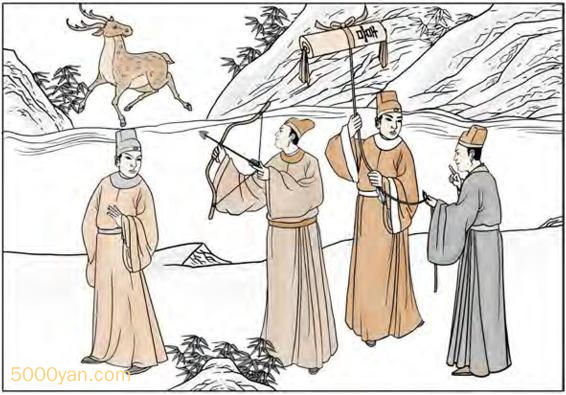
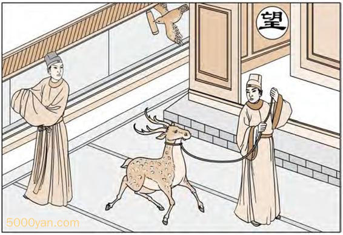

第一卦 乾为天

此卦高祖与吕后走在芒砀山卜得之，余人难压也。
图中：
鹿在云中，石上玉，有光明，人琢玉。月当空，官人登云梯，望月。
六龙御天之课 广大包容之象
万物皆成于天地之间，故天之高，地之厚德，皆为吾人所效法。圣人观天而知天之运行恒古不变，且永不止息，此天之道。干为万物之始，以象言其为天，为阳，为父，为君。
卦图象解
一、官人在梯上：平步青云象。
二、鹿在云中：作为行事心中不可求禄，则禄至矣。
三、石上玉有光明：示人才如玉之含光，吉也。
四、人磨玉：示人坚心不移，夕惕若厉，随时戒之。
五、工匠：有重立门户之象。
六、梯上官人：棺也。卜疾厄凶也。
七、官人望磨玉人：示人即平步青云须戒盛，且望下看，念中无妄，则升迁平安，如争位则旦夕而亡也。
人间道
乾：元、亨、利、贞。
元为万物之始生，亨为万物之成长，利为万物之遂成，贞为万物之坚心，此为乾之性，恒古不变，示人须有坚定不移之心志，万事乃成于此。
初九：潜龙勿用。
初爻为阳位，且阳居此，因爻理本无形， 圣人假借龙之物象来示人乾之初象如圣人始萌，如物之始端，若龙之潜隐，由于始生，未为可用之时机，当韬光养晦，以俟时之至。
九二：见龙在田，利见大人。
以个人而言，此时如舜之田渔，其德已着， 乃时之至，故利见大德之君，以行其道。以君王言，此时亦利见大德之人臣，以共成其功。 以天下百姓言，亦利见大德之人才，以受其恩泽。
九三：君子终日乾乾，夕惕若厉，无咎。
三爻位是在下卦之最上，虽为臣位，但未离下位，此时君子知朝夕不懈，随时警惕，即处危地，但因戒惕而无灾至。时今在下位之人，因德已显彰，民心将至，天下将归于他，试想其危惧之程度，故圣人设戒于此时，此易之论时也。
九四：或跃在渊，无咎。
或乃进与不进之时，圣人示戒进之时机，如时机不对，亦可不进，或之意也，无灾。
九五：飞龙在天，利见大人。
此乃进乎天位君位之时，天下利见有大德之人，来共成天下之大事，圣人居此位，乃知时之至矣。广纳天下大德之人共成之。
上九：亢龙有悔。
上九为位之极点，过此时太过也。圣人知此为时之极限，乃知进退存亡而终至无过,就不至于后悔也。
用九：见群龙无首，吉。
用九之道，即用鲍阳刚之道，须刚柔相济方为中道，如过乎刚，以至刚为天下之优先，此凶之道也。
彖曰：大哉乾元！万物资始，乃统天。云行雨施，品物流形。大明终始。 六位时成，时乘六龙以御天。乾道变化，各正性命，保合大和， 乃利贞。首出庶务，万国咸宁。
彖为一卦之义，吾人观读彖，有助于对卦之了解。开始即赞乾道之浩大，万物由此而生， 乾道因统天，故即为天道，万物生后，云行雨施，品物流形，此物之长也。六爻之卦位，各因时而成，此为天之运行，因天道之刚健而自强不息的运作，生育出万物，且各有分类，各有所性，各有所命。吾人言『天所赋为命，物所受为性。』自此常存此道，因天道生成之刚正，利于吾人坚心向道，果必吉。天之道首出万物而皆亨吉，人君之道遵循天道，以致四海顺从。
象曰：天行健，君子以自强不息。
象为解一卦之神，每卦皆有象，每爻皆有象，所有的卦皆以象为法则。此乾之卦象言，始终如一，永恒不变，人之行为能如此则至健，可以见天道也。吾人之自强不息，乃法天之则也。 此为天纪。
潜龙勿用，阳在下也。
阳居最下始生之位，犹植物之生于土中， 未出头，始萌之状。故君子如处此时，乃应进德修业，未为可用之时机也。
见龙在田，德施普也。
此时君子之德已普及各地，人民已感受其教化之力量也。
终日乾乾，反复道也。
此时居下卦之最上，要再进前，但又未脱下位之关系，进退动静，必依有道，且旦夕进修励德，此时之法则也。
或跃在渊，进无咎也。
或乃量可而进，待之以时，时至而动，动必以明，无灾。
飞龙在天，大人造也。
君子能进君位，而行其正道，天下大治矣。
亢龙有悔，盈不可久也。
满则溢，此天之道也，故易示人满必不可持久，太过必生悔矣。
用九，天德不可为首也。
用九，意为用刚之道也，天道阳刚，又用刚而为先，此之过矣。
文言曰：元者，善之长也；亨者，嘉之会也；利者，义之和也；贞者， 事之乾也。
易中唯乾坤二卦有文言，此乃补强乾坤天地之道。元，万物之始皆为善，天之生必有其用， 此为造化之迹也。亨者，乃其成长之嘉且美也。利者，任何行为必合于义也。贞者，万物之用， 必以坚心不移方可成矣。
君子体仁，足以长人。
分均，仁也，此仁之道大矣，君子体之，以仁普及教化，以所以长人也。
嘉会，足以合礼。
不合理则为非礼，合于理之生长，为美之至嘉也。故万般事物皆有一定之法则，吾人须体理之治，则发展合于天道自然。
利物，足以合义。
合于义，则能利于万物之遂行。后出，义也。能断后，则为义也。而今人类制造之物，无法完全回收，造成自然界之失衡，此不合于义之道也，不合于利物之理。
贞固，足以乾事。
因坚定不移之意志，则定以成事。
君子行此四德者，故曰：乾，元，亨，利，贞。
能行此四德，则合乎乾天之道。
初九曰：潜龙勿用，何谓也？子曰： 龙德而隐者也，不易乎世，不成乎名，遁世无闷，不见是而无闷，乐则行之，忧则违之，确乎其不可拔， 潜龙也。
乾卦之用，即用九之道。初九为阳刚之微现，如龙之潜隐，圣人居之陋侧，坚守其道不因世之变而改变，时不至，隐其行，不求为人知也，自信自乐，见可而动，知灾而避，守正道之心坚而不移，此真潜龙也。
九二曰：见龙在田，利见大人，何 谓也？子曰：龙德而正中者也。庸言之信，庸行之谨，闲邪存其诚， 善世而不伐，德博而化。易曰：见龙在田，利见大人，君德也。
因非为君位，但有中正之德，谨言慎行， 但求处于无过之地，遇邪道，但求存诚，德施普及，但不伐其恶，以诚纯一，虽不为君，但为君之德也。
九三曰：君子终日乾乾，夕惕若厉， 无咎，何谓也？子曰：君子进德修业，忠信所以尽德也；修辞立其诚， 所以居业也。知至至之，可与几也； 知终终之，可与存义也。是故居上位而不骄，在下位而不忧，故乾乾因其时而惕，虽危无咎矣。
位居下卦之上者，已近君位，又因有君之德显，为免招凶，故君子居此时，必求进德修业，终日谨慎言行，知进退之机，此义之道。 不以居上位或处下位而骄傲或忧虑，不予人有野心之戒，故虽处危地但无灾至也。
九四曰：或跃在渊，无咎，何谓也？ 子曰：上下无常，非为邪也；进退无恒，非离群也；君子进德修业。 欲及时也，故无咎。
或即进退须待时之意，时行时止，不可恒久不变。君子之顺时而动，犹影之随形，并非欲为邪吝之人，亦非欲离同类也。此位乃近君 恻之人也。
九五曰：飞龙在天，利见大人，何谓也？子曰：同声相应，同气相求, 水流湿，火就燥，云从龙，风从虎，圣人作而万物睹。本乎天者亲上， 本乎地者亲下，则各从其类也。
此有中正之德的人，居于君王之位，天下人皆归仰其德，上应于下，下从于上，故圣人做而万人皆明，因同德相感，故贤人出，各有其类，本为君位之人则亲和于君王，本为位低之贤， 则近于下位之人，此乃自然之水流湿，火就燥，云从龙，风从虎之义。故利见大人。
上九曰：亢龙有悔，何谓也？子曰：贵而无位，高而无民，贤人在下位而无辅，是以动而有悔也。
有阳刚之正德而居不适位，则动而必悔，因无民无辅，独力难成也。
潜龙勿用，下也。
居下位之时，即有中正之德，亦宜潜隐， 不可就用也。
见龙在田，时舍也。
因时而止，此利普施其德于一地，范围有限。
终日乾乾，行事也。
君子行事之法则，不居君位，则终日警惕， 进德修业，不求有大功。
或跃在渊，自试也。
处君侧，可自试时机为何，动静随消息而进或止，不可躁进，求凶之道。
飞龙在天，上治也。
有君王之位人，又有中正之德者，如龙在天，乃上上之治，其意如此。
亢龙有悔，穷之灾也。
因穷困之极，乃有太过之举动，此灾之至也。
乾元用九，天下治也。
用九之道，因天与圣人同知且同用，天下因治。
潜龙勿用，阳气潜藏。
方阳衰而潜藏之时，君子效此，亦晦隐， 不可用也。
见龙在田，天下文明。
龙之阳刚德性，见于地上，如此天下则见其文明也。
终日乾乾，与时偕行。
待时而动，不可分秒懈怠。
或跃在渊，乾道乃革。
因知进退之得宜，故能离下卦，而跃居上位，故曰上下之革。
飞龙在天，乃位乎天德。
正于君位，天德乃现，如龙升天。
亢龙有悔，与时偕极。
时之过，再居此时，则人与时皆过也。
乾元用九，乃见天则。
用九，乃天之则也，天之法则即为天道， 圣人禀道而行，得失吉凶立知于事之初，此为天则。
乾元者，始而亨者也。
用阳刚之天则，初始即可亨通也。
利贞者，性情也。
阳刚之性既亨通，须始终如一，则能生生不息。
乾始能以美利利天下，不言所利，大矣哉。
乾始之道，能使天下皆感其美，而天下因之而利，又不歌功颂德，将功归己，此则大矣。
大哉乾乎！刚健中正，纯粹精也；六爻发挥，旁通情也；时乘六龙， 以御天也；云行雨施，天下平也。
此言乾道之伟大，因纯之刚健中正，按步就班，顺时顺位而行之，则可以统御天下，阴阳和畅，天下则进入和平之道也。
君子以成德为行，日可见之行也。潜之为言也，隐而未见，行而未成，是以君子弗用也。
君子以行为而示人其德性，随时可见。初因方潜未为见用，故君子弗用也。
君子学以聚之，问以辩之，宽以居之，仁以行之，易曰：见龙在田, 利见大人，君德也。
圣人居下位，德已显，却未得位时，必求进德修身，不怪时之不与，但求身体力行此虽不为君，却是为君之德才。
九三：重刚而不中，上不在天，下不在田，故乾乾因其时而惕，虽危无咎矣。
因九三位为过中而又居下卦之上，属相位，上又未至君位，又为阳刚之性，故属危惧之地，圣人知戒，竞竞惕惕以防危，故虽处此时而无咎也。
九四：重刚而不中，上不在天，下不在田，中不在人，故或之；或之者，疑之也，故无咎。
九四为近君位，亦属危地，或进或退，但求平安耳，故可无咎。君子能曲能伸。
夫大人者，与天地合其德，与日月合其明，与四时合其序，与鬼神合其吉凶，先天而天弗为，后天而奉天时，天且弗违，而况于人乎？况于鬼神乎？
圣人先知于天故天与其同，后于天又顺于天，此合乎天道，故人与鬼神皆不能违，天为至大，存天地之间，道也。鬼神，造化之迹也。
亢之为言也，知进而不知退，知存而不知亡，知得而不知丧，其唯圣人乎！知进退存亡，而不失其正者，其唯圣人乎！
亢之义乃不知进退存亡之机也，圣人知亢而处此，凡事皆不失正道，故不为亢，唯圣人可为也。
地脉道
此卦出现，官人逢之举步青云，心想事成，发达时往往比平常快，且越级晋升。
商人逢之，为做生意当老板之人，财多禄丰，领导统御手段来自天生好手，能当机立断，掌握时机，成就不可限量。
对于家庭，有强烈之责任感，为一良好丈夫，贤能的父亲，但须切记，必须正名之人，即其正式负责人居之，乃可成此卦。如为未婚人，不可能出现此卦。所以在阳宅之出现时机必在婚后，居此位且坚心到底，必有大成就，例如总统也是由公务员做起，其特性在其始终如一在此路上持之以恒，方可达到，今人常变工作，终日忙于找寻适合自己的工作，结果必终身无成就。所以吾人在知晓此一真理之后，向求教之人说服其能居乾为天之卦位，则其心念必能成为一坚持到底之人，举凡世上有成就之人，其一生绝不轻易离开其位，坚守原则，认清自己的实力，知道自己要追寻什么，生命的意义，能一目了然，摆脱了财富名利之欲，人能无欲则刚，乃天经地义之事，加之深谋远虑，知所进退，当必有所成。
吾人之定位，其目的在让人能明了知所进退，存亡之机，读易不过如此，许多人知道且发表言论来提示人们如何拿捏的准，表示已了解到其重要性，但往往人性在听时煞有其事的似乎了解了，可是事情一来却什么都忘了，有的人天生好手，在后天培养之下，乃能做到，但并非每一人都可如此，所以我们利用阳宅来定位，就如同计算机锁定之后，其自然演生之过程，造成其为天生好手在事机之来时一举一动，都很适时的令自己不逾越已份，知所进退，其成就必能过于常人。
我常苦口婆心的劝人居定位，有时甚而疾声厉呼的要求，希望他好，但改位的动作，却不一定都会去做，只好看个人的福份了。总不能每一位上门求教的人，我都把易经八卦重讲一遍，使其了解到其重要性，可改变一生，使明天更美好，对不对？
第二卦 坤为地
此卦汉高袓与项羽交争卜得之，乃知身霸天下。
图中：
十一个口，一官人，坐看二串钱。一官人立受命，一马，金甲神人在台上乘云下， 绶文书与官，土堆上有四点。
生载万物之课 君倡臣和之象
卦图象解
一、十一口：吉也，陈姓人也。
二、一官人：倌人，丈夫也。公务员也。
三、坐看二串钱：欲拿不得，忧心忡忡状。
四、一马者：肖马人；指官贵；指调动也。
五、金甲神：示民心也。
六、授文书与官：授官封侯。
七、土堆上有四点：黑也，背有阴谋也。
人间道
坤：元、亨、利牝马之贞。
坤乃地之厚德，示人效地之性，如牝马之柔顺而健行也，贞示坚心，但与乾不同，乃坚心于柔顺之念也。
君子有攸往。
君子因行柔顺，且表里一致，合乎坤地之德性。
先迷后得，主利。
阴从阳也，即不了解但知须从阳刚之中正，如不知而欲进，则迷错，损失在己，须居于后， 则利，如君臣之道，柔顺乃臣之职也。
西南得朋，东北丧朋，安贞吉。
西南为阴位，东北为阳位，阴必从于阳，阳之正而阴亦正，由阳刚之中正，去芜存菁，故能成化育之功也。
彖曰：至哉坤元！万物资生，乃顺承天，坤厚载物，德合无疆。
坤之道大也，万物因乾而始，因坤而生，犹父母之道，坤之德厚，故能持载万物。
含弘光大，品物咸亨，牝马地类，行地无彊，柔顺利贞，君子攸行。
含弘光大此四者，用来形容坤道，含，包容也，弘，宽裕也，光，昭明也，大，厚且博广。圣人有此四德，故能成天之功，牝马因柔顺而能行，故健。
先迷失道，后顺得常。西南得朋，乃与类行；东北丧朋，乃终有庆， 安贞之吉，应地无疆。
因先迷而从阳刚之德，后必得理，西南为阴，同类而行，故得朋，东北阳方，离其类而丧朋，因离其类而从阳，故能成物之功也。终必吉，又因能安心坚守此道，则无所不可往矣。
象曰：地势坤，君子以厚德载物。
坤地之道至大，圣人体之，君子以地之柔顺且厚能载物之德处事。
初六：履霜，坚冰至。
圣人于阴之始生，知其将长，此时戒之， 犹人之履及霜，则知后必有坚冰，故小人始虽甚微，但絶不可使其长，长盛则凶也。
象曰：履霜坚冰，阴始凝也，驯致其道，至坚冰也。
阴始凝为霜，渐盛则至坚冰，故圣人戒小人于初，如任小人因循不阻止，则终至凶。故吾人须戒之于初，小人表面常有可怜，博人同情，示弱以求悯恤，实则内心有所图，今人不知济弱扶倾与姑息养奸乃一线之差，一昧以济弱扶倾为自傲，殊不知其姑息养奸，而至今小人才盛。
六二：直方大，不习，无不利。
圣人以地之直、方、大三德以尽地之道。直者，直来直往，不迂回作假。方者，原则不因局势而改变，且正。大者，容载万物之胸襟乃大也。不习，谓顺其自然，则无往不利。亦可云，因又直且方，气势乃大也。
象曰：六二之动，直以方也，不习，无不利，地道光也。
地道之光显，由其直且方大，人人顺其自然，则奸人何所遁形，无往不利。
六三：含章可贞，或从王事，无成有终。
六三居相位，为臣之道，如有含章之美， 即不居其功，将善归于君王，乃可因王无忌恶之心，终必吉。
象曰：含章可贞，以时发也。
处臣下之道，不当有功，免招君忌，但义之当为时，须立行之，此因不有其功，不失其宜，皆因时也。今人含而不为，皆不忠之人。
或从王事，知光大也。
圣人知含章之光大，故能养晦，小人有善唯恐人不知，此君子小人之分野。
六四：括囊，无咎，无誉。
六四为居近君之侧位，藏口而不露，则平安无灾，此沈默之功也。
象曰：括囊无咎，慎不害也。
能随时谨言，不妄言，此无害之因慎也。
六五：黄裳，元吉。
坤本论为臣之道，今臣居尊位，或妇人居尊位，须有黄裳之戒，应守中而居下，不可扬溢无节制，否则必有非常之变。
象曰：黄裳元吉 ，文在中也。
因黄裳之美，乃内积至美，执中不过，位高但谦居下，故吉。
上六：龙战于野，其血玄黄。
六爻为极盛之位，阴至极则阳至，故有抗争，因六又再进不已，故必战，战必有伤，故血色现，天之血色为玄，地之血色为黄。
象曰：龙战于野，其道穷也。
道因阴至极而无道，故有龙战于野之象现。
用六：利永贞。
此为用阴之道，如乾有（用九）之道同。阴道柔而难常，有朝令夕改之忧。故利在常而坚固。
象曰：用六永贞，以大终也。
圣人自此悟之，始终如一，坚心不变，必利，其终极必大。今人朝夕所思不同，自视甚重，角色不能认清，小人有太过之行为，常人从俗只见愚善，致小人极盛，积非成是，故积重难改。
**文言曰：坤至柔而动也刚，至静而德方。后得主而有常，含万物而化光，**坤道其顺乎？承天而时行。
坤之道虽柔，但如动亦须刚，坤之体至静，但其德也须方正。动而不违方正。再得同道之呼应，成万物光大之功，故坤道之顺大，皆因王时之至也。
积善之家，必有余庆，积不善之家，必有余殃。臣弑其君，子弑其父，非一朝一夕之故；其所由来者渐矣，由辨之不早辨也。易曰：履霜坚冰至，盖言顺也。
学者读此段，必可自悟矣。故圣人戒小人于初，其道大也。
直其正也，方其义也；君子敬以直内，义以方外，敬义立而德不孤，直方大，不习无不利，则不疑其所行也。
君子外敬内直，坚守义以方其外，故内敬直，外义方，其德之盛，顺其自然，不须装饰， 无人会疑其所行也。
阴虽有美含之，以从王事，弗敢成也。地道也，妻道也，臣道也，地道无成，而代有终也。
臣下之道，不表其功，含晦以为王行事，至终而不敢有其功，如地道代天终万物，而成功又归之于天，妻之道同此。今之妻如何，吾人试自问之？
天地变化，草木蕃。天地闭，贤人隐。易曰：括囊，无咎无誉，盖言谨也。
天地相交，则能兴发草木，天下因君臣相往而道亨。今天地隔絶，万物不成，犹君臣无道， 贤者隐退，此时易道为闭口含藏，虽无声誉，但无灾，皆因言论谨慎也。
君子黄中通理，正位居体，美在其中，而畅于四支，发于事业，美之至也。
君子知谦守下之道而通于事理，居君王位故美积其中，畅于四体，现于事业，此美之极也。此段乃示柔中有刚，乃至大至美，今人有柔善而无刚，或过刚而无仁，皆不足之美也。
阴疑于阳必战，为其嫌于无阳也，故称龙焉；犹未离其类也，故称血焉。夫玄黄者，天地之杂也，天玄而地黄。
中医之至道在此，阳大阴小，阴乃从阳，故经方派乃用阳药，如人间亦然。如令阴到极盛， 阳受阴盛而外走，此不相从必战，伤而见血，天地之色变，亦言伤之大也。
地脉道
此格在阳宅上出现，就如易之言地厚能载物一样，已婚女人才有，其包含寡居，且有子女同住，此局方现。
代表意义为婚姻主破散，孤军奋战，肩负一家之重任，夫宫不得志造成此果，如以事业上论，则官家掌权，商人赚钱易如反掌，女中强人型，其志过丈夫，无人能及，但缺点为到老孤单无子女愿居身侧，因个性会趋于孤僻。
婚破后，不再有婚，何时婚破须看命，运只有占一半并非全部。即令有对象出现，不过只能同居，而于婚姻，将不再有第二次，这是肯定的。
此卦禁忌在其出现后，公司行号必须正妻之名，即女人当家方有成就，很多人公司负责人为丈夫，惟乾卦可行，但却居坤位，始成破格，终必败的。故如有一女人家，只要事业，只要健康，对于婚姻因前次之失败，已无兴趣再婚者，此卦对其大利，终其一生成就很大，财禄无缺，到老平安，必无夫之牵挂，此时男人对她来说只是负担，终无所助。老来近于宗教，行善之人。
第三卦 水雷屯
此卦季布遇难，卜得之汉推其忠，乃赦其罪。
图中：
人在望竿头立，车在泥中，犬头上回字， 人射文书，刀在牛上，一合子。
龙困浅水之课 万物如生之象
云雷之兴，阴阳始交，而未成泽，故为屯，如成泽则为解，此卦动于险中，乃屯之义，如阴阳不交则否，此时机乃天下屯难，未亨泰之时也。
卦图象解
一、人在望竿头上立：此不明局势之屯难时也，不可妄动也。
二、犬上回字：乃肖狗之人，狗年，狄姓之人，果为哭之象。
三、车在泥中：进退两难之象。刀在牛上：解也，牛为贵人象。
四、人射文书：张姓，小人阻碍也。射：同音，色也，绯闻。
五、牛不顺道：背道而驰，反其道而为之，吉。
六、人望：人亡也。
七、人立：在位也。
八、盒：先成后破。
九、牛回头视犬：计无所出，待也。
卜得此卦：动于险中，先成后破也。
人间道
屯：元、亨、利、贞，勿用有攸往，利建侯。
此义处屯之时必贞固（坚心），须明非独力能成，必广资助，此利见侯之义。不可往，唯利建侯。
象曰：屯，刚柔始交而难生，动乎险中。
刚柔始交而未通畅，则难屯，难生，于此之时，如动即往，乃取险之道。
大亨贞，雷雨之动满盈。
此言屯有大亨之道，得阴阳交而和洽，则成雷雨，充满天地之间，此因贞固才能出屯。
天造草昧，宜建侯而不宁。
天时造出地上之草，乱而无序，此暗昧不明时，须建立辅助，可以有助矣，此圣人之戒。
象曰：云雷，屯。君子以经纶。
水未能成雨为云象，君子观屯象，知须立法规范来经营此时。
初九：盘桓，利居贞，利建侯。
初而阳爻居下，意乃刚明之才，当屯难之时，而居下位。此时未便往济，故盘桓。如遽进，则犯险遇难。此即示人处屯难时，须守正方是，现今之人，鲜少人于屯难之时守正。圣人戒之于屯时。
象曰：虽盘桓，志行正也。
圣人处屯时，虽有济屯之志，仍盘桓不动， 因时未至也。此居下位之念。
以贵下贱，大得民也。
初阳之刚健，居阴之下，此易以贵下贱之象。即处屯之时，阴柔不能存，唯一阳刚之才， 则众所归从也。更加此人能自处卑下，所以大得民心。
六二 ：屯如邅如，乘马班如，匪寇，婚媾，女子贞不字，十年乃字。
此阴爻之柔居屯世。受逼于初刚健之人， 故柔处屯时，无法自济，又受下之阳刚所逼， 为难为也。非理而至者为寇，柔守中正不苟合于初刚之意，须十年久久乃通。
象曰：六二之难，乘刚也。十年乃字，反常也。
此六二患难，因柔，又居屯时，又有下之阳刚所逼，此患难乃因柔而生，须十年，难久必过。如反其柔之常性，而与阳刚合，则省十年，十为数之终也。
六三：即鹿无虞，惟入于林中，君子几，不如舍，往吝。
此阴爻居三之阳位，此意柔居刚而不中正，则必妄动，贪于所求，必不足自济，此不安之源。如入山林射鹿，又无向导，此不安也。君子见事于微，舍而勿逐，如往取，徒取其咎也。
象曰：即鹿无虞，以从禽也，君子舍之，往吝穷也。
事因欲而妄动，此贪禽也。处屯之时，不可动而动，凶也。君子舍之不从，则无咎，如往必困穷也。
六四：乘马班如，求婚媾，往吉，无不利。
此以柔顺居近于君位，此得之于上者，而才不足以济屯时，须求贤自辅，则往而利矣。此即居公卿之位，己之才不足以济屯难之时， 若能求在下之贤人，亲而用之，则必平安有利。
象曰：求而往、明也。
知己才之不足，往而求贤，以济己之不足、此乃真明也。
九五：屯其膏，小贞吉，大贞凶。
五居尊位得正，当屯时，若有刚明之才为位，则利。如无，则屯其膏，此因无良臣，而施为有所不下于民，民未得其德泽，乃因威权不在己之故也。此屯因威权已去而妄想瞬间正回，此求凶之道。须以渐正之，方吉，如不为会因当屯时不改，以至于亡矣。
象曰：屯其膏，施未光也。
膏泽不下及，此人君之屯也，乃因威权不在之象。
上六：乘马班如，泣血涟如。
六此以阴柔居屯之终，此险之极而无援， 居之不安，动无所向，此穷厄之
极，若阳刚而有助，即屯至极，亦可平安互济矣。
象曰：泣血涟如，何可长也。
如于屯难穷极，而莫知所为，则至泣血颠沛，则必不长久。
地脉道
此卦为次子卦，时机在长子未婚，且同居一处，方可论之，一旦长子或本人结婚，此局立消，切记。
次子居此，则比长子早婚，比同时出生之人早二年结婚，但有禁忌，如肖狗或狄姓之人，主夭折，此卦大凶，又逢犬年加凶，肖牛人，必任妻摆布，背离家庭，不顾父母。所以如其他人成此局，只不过早婚而已，对犬、牛人主凶，不利。
屯卦有一运用，在家族事业，世代交替时，父必使次子继位长子失宠，其运如此，吾人观命时，必可发现，次子之事业必优于长子，才智能力超越长子多多，自然而然居此局，故吾人入宅如发现此局，反过来看，亦可得到很正确之结论，所以命运同参，方可了解同时生人之结果不同，即令同时生人都为次子，且长子属肖也同，但却不一定长兄生时皆亦同，差异即在此。
次子越位，志过长兄局已定出，个性上亦同。
第四卦 山水蒙
此卦王莽篡汉社稷卜得知，乃知汉家必有中与之主。
图中：
一鹿一堆钱，一合子，李树一枝子折， 二人江中撑船，珍宝填塞。
人藏禄宝之课 万物发生之象
艮为山，为止，坎为水，为险。山下有险，遇险而止，莫知所之，蒙之象也。
卦图象解
蒙卦有示吾人去蒙之道。反观之，如人以蒙蔽之法示人，势必有所图也。
图中：
**
**
一、满船珍宝：暗示人图财之象。
二、船在水上：乃离国他去象。
三、鹿在地上，示仍有小禄于内，鹿—禄也。
四、两串钱：乃忧心忡忡象，即意虽有禄，但仍令人忧心。
五、图中一碗：示此蒙蔽手段，必先成后破，因其乃不正之财，必不久远也。
六、李树子折：示人李姓人氏，且有子夭折之象，则成格。
人间道
蒙：亨，匪我求童蒙，童蒙求我。初筮告，再三渎，渎则不告，利贞。
儿童之蒙，其未发蒙，而志则专一，此为童蒙，因有童蒙，则告之。因其童蒙，故必至诚一意以求必中。而发蒙之道，必以贞正方吉。
象曰：蒙，山下有险，险而止，蒙。蒙亨，以亨行，时中也。匪我求童蒙，童蒙求我，志应也。
此因刚贤之才居九二爻位，处于下位。六五之童蒙，处于君位。九二之贤臣，必以时中也。时之义，必待其至诚一心之童蒙求问，方以告之，乃中与。如贤能之人处下，而自求为进，主动告以君，则必无被信用之理。故如方法正确，非二求于王君位，实为五之志应于下二也。此为「时中」也。
初筮告，以刚中也，再三渎，渍则不告，渎蒙也。
此言，如诚一而来求决其蒙，当以刚中之道开发之，如烦数不能诚一，则乃渎蒙，此时， 不当告。因告之必不能信受，徒以烦渎，无益矣。
蒙以养正，圣功也。
此申利贞之义，养蒙之法，必以正道，此时乃纯一未发之童蒙时，故养正于蒙，乃学之至善也。现今人类皆「教而后禁」，故难以教胜，故时风日下。
象曰：山下出泉，蒙，君子以果行育德。
此蒙之象也，如人蒙蔽，未知所适从状。君子此时，必以果决其行，使通行无阻。如始生而方法不对，则以养育其明德为教法。
初六：发蒙，利用刑人，用说桎梏， 以往吝。
初六之爻属最下位，此言，发下民之蒙， 须明刑禁以示之，使之知惧，从而教之。是故为政之始，立法居先，治蒙之初，威以刑者， 是以使民去其昏蒙之桎梏。不设法去其蒙之桎梏，即善教亦无法改变其蒙，故圣人使下民畏威以从，不敢任意其昏蒙之欲，然后才能渐知善道，此为移风易俗之唯一法门。但只有初爻之始可用之，如专用刑以为治，则蒙虽畏，终不能发。
象曰：利用刑人，以正法也。
此即用立法制刑，以教人之意，万不可不教而诛。后世之论刑者，不复知教化孕其中， 只一昧的论刑。
九二：包蒙吉，纳妇吉，子克家。
九二有刚明之才，与六五之君相对应，其志又一同，当其时，必广其包容，老人妇孺之见，皆包容，则能啓天下之蒙，功大矣。今人专持其明，漫用自任，致凶之道。是故古之尧舜，其圣功天下莫及，尚能请教下民，取合理之言，天下之民归之，就如儿子能治其家一样。
象曰：子克家，刚柔接也。
儿子之能治家，其因父之信任专一也。是故九二能成啓蒙之功，乃由五之信任专一也。此刚柔相接之义也。
六三：勿用，取女见金夫，不有躬，无攸利。
三爻之位阴居之，此时机正应上位不能远从近见，九二为群蒙所蔽，居此之时，无所往则利矣。犹女之嫁夫，当由正礼，如见人多金， 悦而相从，不可取也。
象曰：勿用取女，行不顺也。
此女不可取，因行不顺故也。
六四：困蒙，吝。
因六四之阴爻，离刚贤最远，无由来发其蒙，终困于昏蒙也，其永不足矣。
象曰：困蒙之吝，独远实也。
此义昏蒙之人，不能亲贤以致困，终不得明矣。实，阳刚也。
六五：童蒙，吉。
此示柔顺之人居君位，下应于二，乃示柔中之德，任刚明之才，如此能治天下之蒙，吉也。为人君者，如至诚用贤，以成功惠于百姓，此功亦犹如己出一样，何须顾忌手下，功高震主。
象曰：童蒙之吉，顺以巽也。
从人之言，只要合理，都能接受，顺也。降尊位下求，巽也。君能如此，天下治矣。
上九：击蒙，不利为寇，利御寇。
阳刚居蒙之极，爻之终，示吾人知，人之愚蒙至极，而为宼为乱者，当击伐之，故戒不利为寇。
象曰：利用御寇，上下顺也。
御寇之限度，上不过暴，下得撃去其蒙， 则上下皆得顺矣。
地脉道
阳宅上此局出现，必有三子居家中，且未婚，排行第三儿子，出此局其造成：
一、以蒙蔽之法欺家人，惟利是图。
二、本身愚昧，不知进退。
三、性刚不听兄长之言，独行独断。
四、较次子早婚，较长子晚婚。
五、比同时生人早七年婚。
六、常喜赌博性之钱禄，故往往求财遇险之象。
吾人入宅发现此局，当及早对其改局，惟有使他本人想通，方可助他，否则即令父母耳提面命，亦于事无补，成败在一念之间耳。
蒙之生，由已之念，俗言：二片叶子放在眼前，泰山也看不到了。可见一念之差，距离有如此远，更遑论可能误一世，待后悔后，已是百年身矣。抱持侥幸心理之人是最要不得的，你不会有第二次机会再来过的，切记！切记！
第五卦 水天需
此卦蔡顺遇赤眉贼，卜得知，乃知必脱大难也。
图中：
月当天，一门，一人攀龙尾，一僧接引，一墓。
云霭中天****之课 密云不雨之象
蒙之后须养，此需之时也，饮食之道也。云之上于天有蒸润之象，就如同饮食之于人一样， 此养之时，乃待也。乾之性健，必采进法，仍处坎险之下，故须待而后进，即外险内健，此卦之象，乃真养之义。
卦图象解
一、月当天：阴人居上位象，无担当也；清明无灾。
二、 一门：豪斗也，官府也。
三、一人攀龙尾：附于贵人，想进据其位也。
四、一僧接引：光头之人，柔而无欲之象。入空门可解。
五、墓：藏棺之地，有官与财象；置之死地而后生之象。
全意，即使如龙之力大，但动不以时，则有入墓之险，此动为求官与财。佛理亦同：『生死一线，无死焉大生』。
人间道
需：有孚，光亨贞吉，利涉大川。
以二卦体而言，乾以刚健，如上进而遇险，此未可进也。需待之。以卦之爻言，五爻阳居阳位，乃阳刚中正之德人，居君位，而诚信充实于内（内卦为乾），则光明而可进，必亨，故利涉大川。
彖曰：需，须也，险在前也，刚健而不陷，其义不困穷矣。
因险在前，未可遽进，须待而进，以乾之刚健，能待而不轻动，则不陷险中，则必不至困穷。时下刚健之人颇多，其动必躁，如能待时而动，则为至善之道。
需：有孚，光亨贞吉，位乎天位以正中也。
孚，中实之义。五位因刚实居中，此孚之象，此居天位而能正中，光明而亨通，且须贞正（坚心），吉也。
利涉大川，往有功也。
因中实（内之学问、操守）而贞正（坚心向道），即涉险阻，亦可有功也。故需之道在以乾刚之性而知待之道，何所不利。
象曰：云上于天，需，君子以饮食宴乐。
此自然之象，水上于天未成雨，为云。犹君子积蓄其才德，而未施于用也，怀其大才，安以待时，饮食以养身体，宴乐和其心志也。
初九：需于郊，利用恒，无咎。
初爻因最远于险，故于郊（旷远之地）， 故君子处于旷远之地，仍安守其常，则无咎灾也。如躁进犯难，则必灾至矣。
象曰：需于郊，不犯难行也，利用恒，无咎，未失常也。
君子处下野，不冒犯险难而行，复宜安处， 不失其常，保持恒静心亦不动，如虽不进而志动，则不能安其常也。
九二：需于沙，小有言，终吉。
坎为水，水近则有沙，此二爻之位近险， 故需于沙。君子知渐近于险难，虽未至于害， 已小有言矣。此示言语之伤，至小者也。二爻以阳爻居之，示人阳刚之才居阴柔位，守中正之德，虽小有言语之伤，而无大害，终也吉。
象曰：需于沙，衍在中也；虽小有言，以吉终也。
此寓，二位虽近险，而如以宽裕居中，即小有言语之伤，及终得吉。
九三：需于泥，致寇至。
泥，逼近于水也。因逼近于险，而致寇难之至，此居健体之上，有进动之象，苟非谨慎， 终致丧败也。
象曰：需于泥，灾在外也。自我致寇，敬慎不败也。
三位居上险之最近，故云灾在外。此寇致之因，实乃己之逼也。须敬慎小心，量宜而进， 则无丧败。义在相时机而动，戒之盛也。即盛时须戒之象。
六四：需于血，出自穴。
第四爻位以阴柔之质居于险，下又有三阳之进，必伤于险难。因伤于险难，必不可安居， 而失其居所，故出自穴。此顺时以从，不竞于险难，则不至凶也。又无中正之德，只以刚竞于险，此适足以致凶之道也。
象曰：需于血，顺以听也。
意为阴柔之性居近险之位，不能处，则退， 以顺从而听于时，不至凶也。
九五：需于酒食，贞吉。
此五君位，阳刚之人居中，只需宴安酒食以待之，所需必得也。坚心，必吉。
象曰：酒食贞吉，以中正也。
阳刚中正居五之君位，只需酒食，即可尽其道也。
上六：入于穴，有不速之客三人来，敬之终吉。
阴柔于六位，乃需之极限，须安其处，此入于穴之义。安而止居，则下之三阳必来。不速，不促之而自来也。此时须以至诚尽敬之心以待之，虽再刚暴，必无欺凌之理也，此因六位阴位，非三阳乾体之人，志在必夺，故敬之则吉。
象曰：不速之客来，敬之终吉；虽不当位，未大失也。
此不当位，意为以险而在上也。圣人明示阴宜居下而今居上，此不当位也。但如能谨慎自处，则阳再刚亦不能欺，终得其吉。
地脉道
此卦出现，代表其人智慧成长快速，势必超越同年纪同时生人多多，且个性刚烈，不受建言，须注意，如长兄一旦结婚，此局立消，局自长兄婚之日始，立变为雷天大壮收局。
需卦局所表现的意义如后：
一、婚事延后七年，且单岁婚。
二、如逢八字中，喜庆逢凶，必入宗教或不婚。
三、婚时，妻必为改嫁之人。
四、于事业上，必有大成，年少居权位，受重用，进退有据。
第六卦 天水讼
此卦汉高祖斩丁公，疑惑，卜得之后，果遭戮也。
图中：
口舌二字，山下有睡虎，文书在云中， 人立虎下，望口舌，柳树在旁。
苍鹰逐兔之课 天水相违之象
人之所需饮食也，因有所须，争讼之所由起。天阳上行，水性就下，其行相违，所以成讼也。卦义：外健内险之象，必有讼。
卦图象解
一、口舌二字：官司，纠纷，灾也。
二、山下有睡虎：入危地而不知象。三、虎：王姓，肖虎之人。
四、文书在云中：心想事不成，幻想也。
五、人立虎下：近险也，近险为脱险之道。
六、柳树：随风而动，虽大风而不断，此柳之性也。〔韩信之辱，即柳性〕
人间道
讼：有孚，窒惕，中吉，终凶。
讼之道，必中实，如中无有实，乃诬妄，凶之道也。讼，乃与人争辩，而待决于他人，虽有孚，仍会窒塞。故有得中实则吉，但终极其事则凶也。
利见大人，不利涉大川。
因讼者求辩曲直，故利见大人，如大人能以刚明中正决其讼，吉。因讼非吉事，须择安地而居，不可陷于险难，故不利涉大川也。
彖曰：讼，上刚下险，险而健，讼。
此内险外健，讼之所起。若健而不险，不生讼也。险而不健，不能讼也。犹如一人，只重外饰，内无真实材料，此为讼之源也。
讼，有孚，窒惕，中吉，刚来而得中也。
讼之，有中实刚健，但处讼之时，虽有中实，仍有阻碍而须惕惧，则吉。
终凶，讼不可成也。
因讼本非善事，乃不得已也，终极其事，则凶矣。
利见大人，尚中正也。不利涉大川，入于渊也。
如见中正之大人，吉。与人讼必先居于平安之地，任意行险，则身陷。
象曰：天与水违行，讼，君子以作事谋始。
此因天上水下，二卦体相违，讼之由也。君子观象，知人有争讼之道，故行事必「慎始」， 絶讼端于事之始，则讼不生矣。
初六：不永所事，小有言，终吉。
此阴柔居下位，必不可终极其讼也。若不终极其讼，虽小有言伤，而终得吉。
象曰：不永所事，讼不可长也。虽小有言，其辩明也。
此即于讼之初，即戒讼，因柔弱而居下， 不可长久。因既讼，必有小灾，应辩理之明， 终得其吉。
九二：不克讼，归而逋，其邑人三百户，无眚。
二爻与五爻为相应之地，九二乃将位，以刚处险，与五之君位为敌，知不可敌，归而避之，俭朴自处，则无过矣。三百户，乃邑之至小者，如处强大，此竞也，则必过也。
象曰：不克讼，归逋窜也。自下讼上，患至掇也。
因义不敌，故不能讼，须避去其所。自下讼上，义不正，且气势不足，此招祸患之至易也。
六三：食旧德，贞厉终吉。或从王事，无成。
阴爻居三阳刚位，乃阴柔居二刚之间，须知虽处危地，能知危惧，终必获吉。守原之本分而无所求，则不生讼矣。或从上而成，因从王事，故不在己也。讼乃刚健之事，故始则不永，三则从之，皆可使善也。
象曰：食旧德，从上吉也。
守其本分，顺从上之所为，非由己意，终也吉。
九四：不克讼，复即命，渝安贞，吉。
此阳刚居乾下，因不得中正，本必讼。故四爻刚位阳居之，虽刚健欲讼，而无与对敌， 则讼无由而兴。此即若能克制刚忿欲讼之心， 就于命，革其心，平其气，而变为安贞，吉矣。孟子云：「方命虐民，夫刚健而不中正，则躁动，故不安，处非中正，故不贞，不安贞，所以好讼也。」方，不顺也。
象曰：复即命，渝安贞，不失也。
能如上，则无失，吉也。
九五：讼，元吉。
九五居尊位，治讼得中正，则大吉而尽善。
象曰：讼元吉，以中正也。
此云中正之道，施必吉也。
上九：或锡之鞶带，终朝三褫之。
刚健之极，处讼之终极，人因其刚强，穷极于讼，取祸丧身，即使善讼能胜，即赏，亦来自与人仇争所得，其能保乎。终一日而见三次褫夺也。
象曰：以讼受服，亦不足敬也。
穷极讼事，即有受命之宠，亦不足以敬， 而可贱恶，祸患随至也。
地脉道
此局令人官司不断，诉讼缠身，或为好讼之徒。一旦离婚此局方破，否则你只好改变卧房位置，方可脱离此局之限。
一、官人居此局，升官慢五年，诸事不顺，即令不违法，亦受他人连累。
二、商人居此局，财禄不进，必须兴讼方可得财。
三、夫妻婚姻主破，诉讼离婚，此须看命，如命中有，则必成格；如命中没有，则不成格。
四、专业人士如医师，会计师等居此局，千万须防讼事来临，流年逢之，同时生人没事，而你必生事端，运气不好使然。
第七卦 地水师
此卦周亚夫将欲排阵，卜得之，果获胜。
图中：
虎马羊待命，将军台上立，一文一武绶印，人跪台上受印，棋盘在下。
天马出群之课 以寡服众之象
师之兴，因有争议也。此卦本体上顺下险之象，亦即地下有水，内外分即内险外顺，有行险之道如何顺行之义。水在地下必聚，如部队之集结，如九五为一阳，余为诸阴，则为天子之象，今九二为将位，统帅诸阴，则为将帅之象。此卦申明处师之时，内须戒慎警惕，不可掉以轻心，外须统一专权，命令如一，方能行顺之义。
卦图象解
一、肖虎、马、羊之人三合：可战。
二、文武二官绶印：得万人服之帅。
三、人立棋盘上：围棋愈下愈多，但须有谋略方可成事。
四、将军台上立：示有兵权也。生杀之专权也。武职大利。
五、羊回首：回阳也，病危之人卜之，有自阴间回阳间之象。
六、虎在马后：为马之靠山，马因虎威而动。故马回首视虎。
人间道
师：贞，丈人吉，无咎。
此言，师之道必有正名，因师之与，天下万民必伤，如不以正，则民心不从，致凶之道。丈人，即尊贵有众望之人，故出师必立帅将，此人必民所听从顺同，不能服众人，安得民心。如此则无灾。故兴师必有二道：正名与主将。
彖曰：师，众也；贞，正也，能以众正，可以王矣。
师为带众之道，必以正，如能使众人皆正，即可王天下。此用师之正道。
刚中而应，行险而顺。
出师之将帅，须得君王之专信也。此王者之帅，民心从之，虽有险必顺矣。
以此毒天下，而民从之，吉又何咎矣。
如从前面所论之师道下手，则虽因出师伤下之百姓，民仍从之，故吉而无灾。
象曰：地中有水，师，君子以容民畜众。
水在地下相聚，为众聚之象，君子之人须以包容民众，为使民顺从之法。
初六：师出以律，否臧凶。
师之出，必以诛乱制暴而动，行师之道， 须以律法，合于义理，如不按此法，即致胜亦凶。
象曰：师出以律，失律凶也。
师出必有律法，失律法，致凶之道。
九二：在师中，吉，无咎，王三锡命。
此言九二之道，为为将之道，君之事为人臣絶无敢专权，但出师作战之时，则将在外君命有所不从，君王须顺从其命，以专信任之。
象曰：在师中吉，承天宠也。王三锡命，怀万邦也。
人臣如无君之专宠，则不得专制之权，更何论成功。
六三：师或舆尸，凶。
舆尸，众人为主也。此言师旅之事，任当专一，须以刚中之才居上为信，乃得成功。如不这样，而以众之意见为主，凶之道也。
象曰：师或舆尸，大无功也。
如倚二三人以上，必误之时也，不但无功， 凶祸至矣。
六四：师左次，无咎。
左次，乃知不可进而退。此言，师之常法， 见可而进，知难而退，进退有据，平安无灾。六四为阴爻，主阴柔，而师必以强勇，中有阴柔，即兵家之风、林、火、山同义。
象曰：左次，无咎，未失常也。
言师之道，退亦未必为失道，退须得宜， 无灾。
六五：田有禽，利执言，无咎。长子帅师，弟子舆尸，贞凶。
五为君之位，此为兴师之主，此君主兴师任将之道。师之兴，必以生民受灾，蛮夷贼寇， 此正名以诛之。如禽兽之入于田中，害五谷， 于义宜猎取，则猎取之，如此之动，则吉。如无禽兽入田，则出不因禽，凶。此有禽之义。
象曰：长子帅师，以中行也，弟子舆尸，使不当也。
任将授师之道，必以长子帅师。此长子义， 非定为真长子，而示意为任用可信任之如长子者，可以为帅，以其专任后之权必大，故必有信：方可。若以众人主之，无主将帅之师，虽名正出师于义，亦凶道也。
上六：大君有命，开国成家，小人勿用。
师之终极，言功之成也。此时君主以爵位财禄赏赐有功之人，并任用之。但于军旅征战中，查觉出之小人，不能因其有功而任用之， 致凶之道。
象曰：大君有命，以正功也。小人勿用，必乱邦也。
君王有持恩赏之权柄，来表扬军旅之功， 小人虽亦有赏，用之必乱邦，史上小人持功而乱邦，有太多案例了 。
地脉道
此局大异其趣，吾人常见泼妇骂街，女人性刚，甚而与人殴打，其局如此，生人如此，亦为妙矣。
当你发现母亲如此，凶暴，易与人起争端，仇视外人，其皆由此局产生的，当须化解，方可平安。
一、对婚事必凶，有妻殴夫之象。
二、事业上，亦不得志，常生纠纷，男命女身。
三、独来独往，胆大过人。
四、从商主破婚，得财，尤利虎、马、羊三人，其商机、官运亨通，但婚则凶，各有利弊。
其与同时生之人或双胞胎大异其趣，各方面皆不同。
第八卦 水地比
此卦陆贾将说蛮，卜得之，果胜蛮王归也。
图中：
月圆当空，秀才望月饮酒，自酌自斟， 药炉在高处，枯树开花。
众星拱比之课 水行地上之象
师之后，师者众也，众聚有相比亲也。比，相亲也，有众则必有比，故次师也。物之相近莫如水与地，永远相比附，故卦体为水在地上，地上有水象。水为险，地为顺，故外险内顺为比卦。险犹战战兢兢，恐得罪人象，内心又持顺之地道，有坤厚之德性，此比之道也。
卦图象解
一、月圆当空：政治清明象。
二、三星拱照：得贤能刚直之人辅助。
三、秀才望月饮酒：示才智之人无忧也。(亦示：作秀之人，于政治清明时，无法出头〕
四、自酌自斟：无欲则刚象，孤独之象。
五、药炉在高处：无病无灾，故不需用药也。
六、枯树开花：晚发也。示心有诚，制度立，事必成。
七、酒：忘忧之物。
全卦：上位清明，三台辅佐，人将无忧，即使枯树亦能开花。
人间道
比：吉，原筮，元永贞，无咎。不宁方来，后夫凶。
比为吉之道。人相亲比，必有其道，须视可比而决定比之，不可比而比，凶。如果等到不能自保安宁之时，方开始求亲比，幸运的得所亲比，可得平安。但如仍独立自持，求亲比之想法不前反后，即使是丈夫之亲人，亦招凶矣。
是故君王亦怀柔天下，下位之人亦和亲其上，未能独立也，平日即须有此志，天地之间， 没有不相亲比而能独立生存的。
相比之道，须两志相求，如互不相求则为睽卦，故战国策〈中山策〕有同欲相憎，同忧相亲之理。所以好的制度，能使人有所依从，故能互相亲和也。
彖曰：比，吉也。比，辅也，下顺从也。
因相亲比为吉之道，有相辅相成之意。但求比之道，须如臣下顺从君上一样，即使地位相同，或上下有别，决不可因持于己之高位，而忘顺从之道，此乃真比之道。
原筮，元永贞，无咎，以刚中也。
元、永、贞为相比之道。元为君长之道，永为可以长久，贞谓得正道且坚其心志，人有此三德性，再以阳刚当君主之位，此为君之德也。如此之君主可以无灾矣。
不宁方来，上下应也。
上位之念，应知君不能独立，须保民以此为安。下民知己不能自保，须拥君以求宁，此上下相应之理。如以王之私而行为之，不求下民之附和，凶危立至矣。
后夫凶，其道穷矣。
若众人之志相和亲，则无有不遂，此天地之道，若人之和亲不行，则虽夫亦凶矣。
象曰：地上有水，比。先王以建万国，亲诸侯。
天地之间，物相亲比，莫如水在地上，圣人观比之象，以此建万国，近诸侯，亲近人民， 此比之极道。
初六：有孚，比之无咎。有孚盈缶，终来有它，吉。
此为比之始。孚为中信，故相比之道，以诚信为本，表里不一致，人谁近之。诚信充实于内，如于缶中之满，且外不加修饰（它，外也〕，至诚以待之，则无不信。
象曰：比之初六，有它吉也。
此即比之道在乎始也。始即能中实诚信， 终吉，始无诚信，终凶。
六二：比之自内，贞吉。
自内言主之在己也。得正道，而与君道相合，此吉也。即以中正之道，合于上位之所求， 乃曰自内。今人汲汲以求比者，非君子自重之道，乃自失之道也。
象曰：比之自内，不自失也。
坚守己中正之道，以待上求，乃不自失也。此易之戒。故士人修己，方求上进之道。降志辱身此絶非自重之道。吾人救天下之心，并非不急切，乃因须待礼遇之至方出也。
六三：比之匪人。
相亲比之人，如为不正当之人，即为匪人， 招凶也。
象曰：比之匪人，不亦伤乎。
相亲于匪人，必将得悔咎，伤之大矣，君子须深戒所亲比之人。
六四：外比之，贞吉。
六四之位，为近君之位。居此位之人，以柔性坤德向君主亲比，且坚心顺从，吉也。
象曰：外比于贤，以从上也。
六四之位从于五君之位，为外比。因五位刚明之贤为中正，故附从之，此从上之道，絶不可盲从。
九五：显比，王用三驱，失前禽，邑人不诫，吉。
人君亲比天下之道，须诚意以待物，恕已以及人，发政施仁，民之所好好之，民之所恶恶之，为民图利，使天下蒙其泽，此尽善也。则天下亦尽亲于上也。如表彰己之小功，展示自己的权力，违反道德人心，强力施为，致人心不信，社会浮华，人偷败亡，如此而求天下亲比是不可能的。就好比君王出猎，只围三面开一面，禽兽前去者，免矣，此曰失前禽，只取来者， 此王道也。邑者，居邑，诫，期约也。此意臣之效于君，竭尽忠诚，用尽才能，以彰显亲君之道，此为正道。至于用之与否，决定在君，万不可阿谀奉承，妄求君之亲比也。朋友亦然，须修身诚意待人，至于是否愿意与己相亲，在人而己，千万不可巧言令色，曲从苟合，以求人之相比。『此显比之道』。
象曰：显比之吉，位正中也。舍逆取顺，失前禽也。邑人不诫，上使中也。
故显比之所以吉，以其所在之位，得适中之法也。且比之道，须舍逆取顺，孟子收徒之道：往者不追，来者不拒也。三面围网，所失唯前禽，即言此来者抚之，去者不追之理。
上六：比之无首，凶。
上六乃比之终极处。凡比之首，其始善， 终亦必善矣。多数人皆有其始，而无其终，但从未有人没有开始，而有终善也。故此言，比之无首（首，始也〕，至终必凶矣。今天下之人，始亲和比之时不以正道，至终必有隔阂， 此类人居多数。
象曰：比之无首，无所终也。
此即始不以道，则至终必也凶矣。是故交友之道，你来我往，你不来，我何往。如我往， 必有求，须以正，否则终将隔隙，互相仇视也。
地脉道
此卦出现，须长兄为未婚，一旦长兄婚，此局立变为豫卦，须注意变局将如何，则看长兄之命，何时有婚，知何时生变局，此即阳宅上可见未来之象。
此卦有亲比之意。
一、性喜从母事，且任劳任怨，家事一手包办，与母连心。
二、适婚年龄到时，喜欢比自己年长于己之女人，如命中同时生人为二十八岁婚，但此局人婚必延后三年到三十一岁才婚，且娶年长于己之女人方合格，否则婚主破散，不出一年。
三、如命中主破，婚事不成，再居此局，则终身不娶，且与有婚或离婚之女有来往，终无果也。
四、事业上则居佐才之位，无法任职主管。
五、商场上亦为人工作，不为老板，同时生人有可能为很成功的老板，但命只居三才之三分之一，运的局影响，使其终身不得志，且与同时生人有不同之结果。
唯俟长子成婚后，局方可改变，如长兄居侧，或认干兄，此局势必难变。
第九卦 风天小畜
此卦韩信击取散关不破，卜得之后，再撃之果破也。
图中：
两重山，一人在山顶，舟横岸上，望竿在草中，羊马过河。
匣藏宝剑之课 密云不雨之象
比乃亲和，亲和之后必有所畜，因物相比亲则附于一处，为畜，此畜者，聚之来源也。同相亲和之人，其志必同畜。畜亦止也，止然后有聚。此体本乾为天，乃在上之体，今居风之下， 示意吾人如要聚止刚健之人，唯有巽顺为大，故世间再刚健之事与人，必为巽顺所止也。本卦一阴居第四位，为五阳所包，此得位乃因柔巽之道也。卦象『外柔内刚』，乃能以小畜大。
卦图象解
一、两重山：知有险阻于前，不妄动之象。亦为出字象。
二、一人山顶：孤立独行象。已至颠峰，将走下坡之意。
三、舟横岸上：准备出发，水未至而不行也。
四、望竿在草里：等待讯息象。草头姓人为贵人。望，亡也。
五、上有羊马：马引羊过河，马为贵人，肖马人，姓马人也，马亦为午时。
全卦：一人在顶颠，但有疑，前有二山所阻，只有等待消息，午年或午月、午日、午时或马人引羊至，不由水路而来也。
人间道
小畜，亨。密云不雨，自我西郊。
此言云之畜聚虽密，却不能成雨，犹人虽聚，却不能和之义。
彖曰：小畜，柔得位而上下应之，曰小畜。
小畜之卦，因第四爻阴，居近君主之位，以巽之柔顺本性，使上下之阳刚相互沟通，但只能维系，却不能强固，故曰小畜。
健而巽，刚中而志行，乃亨。
以卦象而言，内刚健而外能柔顺，虽为小畜，但能亨也。
密云不雨，尚往也。自我西郊，施未行也。
此言密云不能成雨，犹小畜无法成大也，其因下阳往上，上阳往下，二气不和。
象曰：风行天上，小畜，君子以懿文德。
以乾之刚健，风仍能在上而行，故刚健之性，唯柔顺能畜止之，君子以小则文章才艺，大则道德经纶之圣才，以此二道为所畜之才义。
初九：复自道，何其咎，吉。
初入之地为初爻，以其刚健之性，又得上位之同性，进必上，何来灾也。故初之阳刚， 乃因上位之阳刚性同，故无灾也。
象曰：复自道，其义吉也。
初爻与第四爻本为对应之位，故在畜时， 阴在四，阳在初，阴阳相应，故吉。
九二：牵复，吉。
九二居将位，因与第五爻阳爻相对应，同为刚健，虽中有四爻，但因同为阳刚，自古『同患相忧』〔同欲相憎〕，吉之道，此时为将时。
象曰：牵复在中，亦不自失也。
初爻为阳刚，复二爻亦阳刚，其势乃强， 但因此时乃居中位，将位，故即强亦不会过刚， 过刚乃失，此天道。故吾人须知居中而阳刚之美，因理正，故能强刚，君子持之以理，虽刚亦不为过矣。
九三：舆说辐，夫妻反目。(说即脱)
九三为下卦之上爻，最亲密于四爻阴位， 故乃阴阳之情相处也。犹如夫妻。阴本受制于阳，今居四位居阳之上，即反制阳，如夫妻之反目，故如车舆脱去轮轴，不能行也。妻为夫所惑，反制于夫，乃因夫不正道。未有夫不失道，而妻能制之也。
象曰：夫妻反目，不能正室也。
因阳刚位之夫，过刚而失自处之道，不能顾家室，以致夫妻反目。故为夫之道，须正室其家，方为正道。
六四：有孚，血去惕出，无咎。
六四乃处近君之位，其能畜君，使五位君之威严能因之而止其欲，皆因六四有孚信(孚， 乃内有诚信也〕而受其感也。
象曰：有孚惕出，上合志也。
因四位有诚信且外柔，使五之君位信任之，乃合同志。五因四位之人能与之合，众阳从之，故惕出则血去，不见兵祸矣。
九五：有孚挛如，富以其邻。
小畜之时，乃众阳皆为其中一阴所畜之 时。犹如一国之君，与臣下皆刚而不容（密云不雨〕，但近君侧之人，适得柔顺之人，而此人为上下沟通之管道，此时乃即小畜之时也。九五为君位，如以中正居至尊之位，又内有诚信，则所有皆附应之。就好像富人出其财力与邻共享之也。从此爻则知当君子为小人所困， 正人为艰邪所逼，此时如无上下正阳之互援， 则独力难助于此时，须有互助方可去小人也。
象曰：有孚挛如，不独富也。
是故君子处之艰危，唯其至诚，能得众力之助，则平安矣。（挛如即牵连使相从之。）
**上九：既雨既处，尚德载，妇贞厉。**月几望，君子征凶。
上九为此卦之终极，乃处畜之终。和而能止乃畜之道，阴柔之能畜刚，由累积而成，非朝夕可得，此戒之在平时，如专任以柔制刚， 不知止，如妇之坚守此道则乃凶矣，天下无妇制其夫，臣制其君，尚能安稳者乎？月满之时为月望，与日相敌状。若君子待妇将成敌时，动之必凶，不须戒也，故须戒之于月未满时。
象曰：既雨既处，德积载也；君子征凶，有所疑也。
此小畜之道积满而成，其象为阴将盛样， 君子动则有凶也。小人抗君子，必有害于君子， 制阴极盛之道，则为君子有疑而知警惕，不妄动，求其所以制君子之因，则不至凶也。
地脉道
此卦局，着重于事业，不重于婚姻，凡家有女儿皆易成此局，卦局之判读，请参阅录像教学带，此处不言。
一、女代父职，且能力强过男人，独立自主，不依赖他人。
二、事业企图心旺盛，早年为老板，事业有成。
三、婚事方面，须与命同参，如同时生人为二十八岁婚，而此阳宅局之人会提前二年结婚。如同时生人婚姻不成主有婚必破，此局之人必终身不嫁，全心在事业上发展，成为一女强人。
此局大利肖羊、马之人，但即令有婚，夫亦无力助之，全靠一己之力独撑大局。
第十卦 天泽履
此卦子路出行，卜得之，遇虎拔其尾也。
图中：
笠子下一女，文书破，手中有伞，军旗官人边坐，堠上有千里字，地上两点足印。
如履虎尾之课 安中防危之象
天地间万物由畜道而止之后，有礼生焉，履者，礼也，故畜之后为履。所有物之聚大小不同，高下不等，有美恶之分，是故物聚后必有礼。人到何处，必有礼也。卦体天在上，泽在下， 上下区分，尊卑立见，此理所当然也。此以柔藉刚，谦卑而顺，说礼之道也。泽有卑顺之意， 卦象『外健内卑』，礼之本也。
卦图象解
一、女人在笠下：妾也。
二、千里堠：远离外出封侯象。
三、文书破在地：凭证承诺无效象。四、伞下：有庇荫也。
五、军旗下官人坐：主有官司、诉讼、牢狱之灾象。
六、二点在地：践踏之足印也，示人处危之时，有礼之道，乃能行危而无殃也。
人间道
**
**
履虎尾，不咥人，亨。
有礼之道即入险中，如践虎尾，不见其反食人，乃因有礼也，所以亨也。故常言伸手不打笑脸人，同此。
彖曰：履，柔履刚也。说而应乎乾，是以履虎尾，不咥人，亨。
兑为泽，为悦，兑以柔顺之藉乾刚，与乾刚相乎应，又有礼于下，故践虎尾而不相害也。
刚中正，履帝位而不疚，光明也。
九五以阳刚又居君位，又得履道之善，此不病之因，乃得光明也。
象曰：上天下泽，履。君子以辩上下，定民志。
天在上，泽在下，尊卑有分，此天下之正理也。人之礼常如是，有礼乃行也。君子观履象， 以辨上下之区分，来立民志，民因上下区分明显而志定，自此乃可言治。立法复杂，民无所从， 治世将不再。是故人各安其位，此得其分内也，如占位又不进德，除之，由君子进任，士人进修学识，到一定程度而君子求之。士农工商各行业之人，因所享有限，而能有定志，则天下一心也。今人自下至公卿，日所志为尊荣，农工商人，日思于富侈，亿兆之心交相为利，天下皆如此，心如何一致？要它不乱也难矣！皆因上下无定其志也。君子观履，分区上下，使各当其位，用此以定民心之向也。
初九：素履往，无咎。
初处于下，阳刚之才可以进，但外则表现其卑下之位的素养，无咎。
象曰：素履之往，独行愿也。
安于有礼之往，因非为利也，乃各有其志也。如人有行道之心，又有名利之心，交战于中，岂能安履。
九二：履道坦坦，幽人贞吉。
二为阴位，阳居，即意其待人之礼坦荡荡， 平易之道也。因为阳进，故须有防人嗤之礼数之诽，是以安幽清静之心情处此时，则吉。
象曰：幽人贞吉，中不自乱也。
履之道(礼之道)在于安静，其因正，则所履安也，心中躁动，则不能安于礼道，此即有礼于人，必以心中安静，如以利欲交争于心中， 必自乱。
六三：眇能视，跛能履，履虎尾， 咥人凶，武人为于大君。
三为阳位，柔居之，乃志欲刚而体本柔， 不能坚心为履道。就如盲人之视而不见，跛人行路而不远，意乃才能不足，又处时之不顺遂， 则礼道非正，乃履于危地，因不善履道，入危地召凶，祸患立至，故咥人凶，就如武暴之人却居人上，又任意为之，不知礼，乃凶之道。
象曰：眇能视，不足以明也，跛能****履，不足以与行也。
阴柔乃才不足之人，视不明，行又不远， 今又居刚之上，灾难来矣。
咥人之凶，位不当也，武人为于大君，志刚也。
此凶之致，乃因才不足，以武人为喻，其居阳刚之位，但才不足，又强出之，则所履不由本道，属于志刚又妄动。
九四：履虎尾，愬愬终吉。
在近君之侧，知伴君如伴虎，愬愬，畏惧之貌，意如能畏惧，则终必吉。上位之阳刚， 虽近处，能敬慎畏惧，即入危地终亦必吉也。
象曰：愬愬，终吉，志行也。
畏惧之貌，入危而终吉，因本心在于能行己之志愿，故须居此位，故为行其志，而示畏惧之态，终得吉，其志遂行。
九五：夬履贞厉。
夬乃刚决之意，九五虽示君位之人，居此位，任意刚决而行之，即得正，仍危厉也。古之圣人，居天下之尊，仍纳众言，明足以照， 刚足以决，必以明而动，动则志刚，此之所以为圣也，若自以为刚明，决行不顾，即使行正， 亦属危道也。
象曰：夬履，贞厉，位正当也。
居正当之尊位，须戒刚决自任，否则招凶。
上九：视履考祥，其旋元吉。
人之礼，须视其终，若始终完备，善之至也。今人浅视人之表面礼遇，而不考证其始终， 礼之至善，其『始终如一』方是。
象曰：元吉在上，大有庆也。
人之所以履善终能吉，贵乎有终，始终如一，礼之至极也。
地脉道
**
**
女人无履，唯男人有之，此局可见男女之本性不同，女人外似柔弱但一遇进退两难之时，却往往比男人果决，男人外似刚强，但遇险事却往往踯躅不前，成履卦。
一、事业上常有欲进不得，退之又凶，居进退两难之局，其事势如此，而其性亦如此，其解常靠女人决定之。
二、官运不通，停滞不前。
三、商机不利，运气不佳，取舍之间，因时机已误，丧失良好机会，徒于事懊恼而已，于事无补。
四、婚事方面，妻能力过于己，故有在外娶妾之行为，以求恢复男人之自信心、自尊心，故于婚姻主凶。同时生人如命中婚姻不散则感情破裂，终而同床异梦，但如命中，主婚姻破裂，再加运上此局，则必主破散无救。此同时生人之不同处，流年不同之因也。
第十一卦 地天泰
此卦尧帝将禅位，卜得之，乃得舜而逊位。
图中：
月中桂开，官人登梯，鹿衔书，小儿在云中，羊回头，地下乱点。
天地交泰之课 小往大来之象
履之后（有礼而始终如一）则有泰，即履得其所，则舒泰而安也。故泰所以次履也，坤柔在上，乾阳居下，乃天地阴阳之气相交合，万物生成，故表通泰状。卦象外柔内健，此为致泰之道。
卦图象解
一、月中桂开：清明政治之时。
二、官人登梯：升迁顺遂之意，官人亦倌人，即丈夫也。三、鹿衔书：受天子恩赐禄位。
四、小儿在云中：少年得志象。得天官贵人助也。五、羊回头：回阳间也。亦杨姓人，发肖羊人成格。
人间道
泰，小往大来，吉亨。
阳气下降，阴气上升，阴阳和畅，万物生焉，此天地之泰。人间之泰，大则居上，小则臣下，君王推诚任下，臣尽诚以事君，上下同志，朝廷之泰。君子，小人亦如是，君子处君位， 小人居下位，天下之泰也。
彖曰：泰，小往大来，吉亨。则是天地交而万物通也，上下交而其志同也。
阴往而阳来，天地气相交，万物通泰。人则上下之志相同，互相交通，人之泰也。「内阳而外阴，内健而外顺，内君子而外小人，君子道长，小人道消也。」阳进阴退之时，故内健外顺，君子之道也，君子在内，小人在外，此所以为泰。
象曰：天地交，泰。后以财成天地之道，辅相天地之宜，以左右民。
此示人君须体会交泰之道而为法制，使民用天时之宜，辅助教育人民之功，使民有财，辅助于民，民则必赖君上之法制，因法治之宜也，得其生养。
初九：拔茅茹，以其汇，征吉。
刚明之才，居于下位，遇泰之时，志而上进，遇同志而行同道，因同类而进，吉。凡君子小人都须赖同类以助，未有人能独立而不须朋类之助。
象曰：拔茅征吉，志在外也。
同类相聚，如拔茅之根相牵连，同欲上进。
九二：包荒，用冯河，不遐遗，朋亡，得尚于中行。
九二为将位，以刚明之才，五为柔顺而得君位，上下之专信建立，此位乃治泰者，故治泰之道，主将位而能包荒，如人情放肆所为， 则政令缓，法度废弛，治此之道，必有包含荒秽之量，详密施政，去其弊端，则人安之。处泰之道，人之常情习于久安，惰于因循，不敢变更，用冯河，乃奋发改革之意，虽至小至微之事亦不可遗漏，自古立法治事，牵于人情， 卒不能行者多矣。如禁奢侈则害近戚，限田宅， 则防碍贵族之家，此治泰之难。遇治泰，须禀持公正之态度，即中行意。
象曰：包荒，得尚于中行，以光大也。
有包含荒秽之量，又配合中行之德，其道则明显光大。
九三：无平不陂，无往不复，艰贞无咎，勿恤其孚，于食有福。
三居诸阳之上，乃泰之盛时。圣人为之戒， 在下者必升，居上者必降，泰久而必否，故戒之。故当此时，不敢安逸，居安思危，则无灾。故处泰之道须能坚贞，可常保泰。自古以来隆盛皆因内失道而丧败下来。
象曰：无不复，天地际也。
阳降于下，必复上，阴升于上，必复下， 此示人明天地交泰之道不常存之理也，圣人戒之。
六四：翩翩不富，以其邻，不戒以孚。
翩翩，疾飞之貌，人富而从其类，为利也。不富而从其者；志同也。上三爻皆为阴，阴在上而失其中实之道，皆欲下从，故为不富而从， 此诚意相合也。如至六四位方戒已晚，居三为适中，知戒可保，四位则已过，必生变化。
象曰：翩翩不富，皆失实也；不戒以孚，中心愿也。
因三阴在上，失其实才，欲行往下，不待其人富而邻从，皆因失实故也。此已失乃方知戒之意，此时不待告诫而诚意相待，乃出于中心所愿也。
六五：帝乙归妹，以祉元吉。
为居君位，古之帝女皆向下嫁，帝乙制礼法，须降其尊贵，以顺从其夫也。今六五以阴柔居君位，对应之九二为阳刚，乃能信之，而任用其贤且顺从之，犹帝女之下嫁亦然，此成治泰之功也。
象曰：以祉元吉，中以行愿也。
其能任用刚中之贤，乃因已有中道与之合，志同相交也。
上六：城复于隍，勿用师，自邑告命，贞吝。
此致泰之终也，小人处之，行必否矣。掘隍土累积成城，如治道累积以成泰，今城土颓圮，又复返于隍也。勿用师，夫用师之道，必得民心，今民心不从，用师必乱，此时即自有天命任之，亦逄羞而凶矣。
象曰：城复于隍，其命乱也。
此意城倾圮，又回归隍土 ，即令命为正， 但乱已不可止矣。
地脉道
此名为泰卦，有否极泰来，安泰舒适之象。每逢有已婚女向本人求教之时，我都以此卦教之，令改，促进夫妻和睦乃吾道中人之一大职责，此功德无量。
此局大吉，无论于婚姻、事业、健康及教育子女上，都有卓越之表现，为一贤妻良母。
一、于婚姻，主一世夫妻，白首到老。
二、于事业，在家相夫教子亦为事业。在公事上，进退有据，受人重用，必不待言，其心想事成。
三、于健康主平安到老，一生无大病痛，凡未经指点，能得此局之人，必属大富大贵之人，福厚之人，一生无灾，常见命格好之人，自然居之，真所谓「福地福人居」实不为过。实务上，吾人可见命薄之人，不但无法居此，即使你告诉她有如此好，而她亦会因外在环境上之束缚，而无法改变自己，不知人与天争，即在此，祸福在一念之间耳。唯自求多福，但希望你真能自求而生多福，但须知世事常不尽人意，如能刻意成局之人乃属有福之人，其刚柔动静之间，必能掌握先机，事事快人一步，终必大成。
第十二卦 天地否
此卦苏秦将游说六国，卜得之，果为相矣。
图中：
男人卧病，镜破，人路上坐，张弓箭头落地，人拍掌笑，口舌。
天地不交之课 人口不实之象
上泰之终，六爻以阴柔（小人）处之，则为否之初。天地相交，阴阳相通，则为泰，今天在上，地在下，是天地隔絶，不相往来，故成否卦。
卦图象解
一、男子卧病：男子为阳，阳同佯，装病之象也。二、镜破：不可赴也。破镜难圆之象。
三、人路上坐：小人阻路，不让进也。
四、张弓箭头落地：鸟尽弓藏也。
五、人拍掌笑：幸灾乐祸之小人，做假攻讦两人感情得逞状，夫妻凶。
六、舌：主口舌，官司，謡言生害。
七、口上有四点：四点为黑，暗中诬陷之謡言，古人谓三口成虎，即意此。
人间道
否之匪人。不利君子贞，大往小来。
举凡天地之间皆为人道，今天地不交，不生万物，是无人道，故曰匪人。处此之时，君子不可坚心，因正道不行，小人道长之时。
彖曰：否之匪人，不利君子贞，大往小来，则是天地不交，而万物不通也。上下不交，而天下无邦也。内阴而外阳，内柔而外刚，内小人而外君子，小人道长，君子道消也。
天地不交，万物不生。上下不和，则天下无治国之道。治世乃上位施政来治民，人民拥戴君王而愿从命，上下相交，此治国之道。今君子居于外野，小人处于朝内，故为小人道长，君子道消之时也。
象曰：天地不交，否。君子以俭德辟难，不可荣以禄。
君子观否塞之象为外健内顺(柔)。处否之时，损俭自己，避开祸乱。千万不可荣居禄位， 恋栈不去。因小人得志之时，君子仍居显位，则祸必及己身。反之，仍居显位不放，乃真小人也。即内小人，外君子之意。
初六：拔茅如，以其汇，贞吉，亨。
否之在最下者，为君子也。因否而不能进者，君子也。处否而能进者，小人也。因在下位，又贞固其节志，同类而聚，虽不进升，但亦吉矣。
象曰：拔茅贞吉，志在君也。
君子处否时而居下位，冀得同类而进，如遇小人，则坚守其节，但心仍在天下。
六二：包承，小人吉，大人否，亨。
六二本阴爻位，今阴柔居之，以小人而言， 其心所包容的，皆承顺上位之意，以求本身之利，此小人之吉。大人处否，则以道之阳刚自勉，絶不枉屈正道，奉承上位，虽身处否，但道仍亨也。
象曰：大人否亨，不乱群也。
处否而守其正节，乃为大人，不与小人同乱为群体，形虽否，但其道吉，此道必大。
六三：包羞。
不中不正之人居否之时，位居相位，不能守道安命，极尽小人之能事，每日谋虑邪事， 无所不包，此羞耻之大也。
象曰：包羞，位不当也。
居否时，所为邪吝，羞于公正，居此相位而不适，此不可以为正道。
九四：有命，无咎，畴离祉。
居君侧之人，最忌有居功招忌之事，因否时君道不正，即令有济世之大才，亦不堪用。如能使事事出于君令，威柄皆归于上，则无灾而可实现大志。当君子道行，同类必同进同出为天下黎民福祉着想。小人亦同进退也。
象曰：有命，无咎，志行也。
凡事皆由君命而出，则无灾，且大志得行。
九五：休否，大人吉，其亡，其亡，繋于苞桑。
处否之时，惟有阳刚中正之人居君位，能去天下之否，即大人吉。如循环至泰，亦须戒盛警惕否之复来，此其亡，其亡之意。此戒须如同苞桑，桑为根深蒂固之物，苞乃丛生之物， 其固更强，此为安固之道。此为圣人之深戒也。系辞：『危者安其位者也，亡者保其存者也， 乱者有其治者也。是故君子安而不忘危，存而不忘亡，治而不忘乱，是以身安而国家可保也。』
象曰：大人之吉，位正当也。
因有阳刚中正之德才，又居君子之位，能去天下之否，故吉也。
上九：倾否，先否后喜。
物极必反，泰极则否，否极则泰，故否之极，即否道将覆，则泰矣，故曰后喜。
象曰：否终则倾，何可长也。
否之终必倾危，絶无永否之理，但反危为安，易乱而治，必有阳刚之才，乃能做也，故否卦之上九能倾否，如屯之上六则不能去屯同意也。
地脉道
惟男人有之，此男女本性之不同，亦可于此卦局窥见之，男人之性过刚于女，自尊好强之心，又显现无遗，往往天性上，有欲大力小之性而不自知，不知己之才能如何，妄度不知量进，乃终成否卦。
常见个性如此之人居否局，而不自知，仍自以为是，故终其一生必无成就，每日只知怨天尤人，叹时不利己，己不逢时而已。
一、于婚事主大凶，夫妻反目成仇，加上命格中如婚破，又在运宅上居此局，则势必无法挽回。
二、官家之人，必主否塞不通，终致无成，不但不升官，反招凶祸，乃致退休。
三、商家人，居此局，必生大耗，财耗家散，终致一败涂地。四、健康上亦凶，主大病缠身，如加上命中流年逢羊刃，血光必现，在数中难逃此大限之局。
第十三卦 天火同人
此卦刘文龙在外求官，卜得之，果衣锦还乡。
图中：
人捧文书上有心字，人张弓，射山上， 一鹿饮水，一溪。
游鱼从水之课 二人分金之象
天地不交则否，上下相同则同。遇否之世，必与人同力方能渡过。故次否也。以象言，天之性在上，火之性炎上与天同，故为同人。以卦体言，五为君位乾主，二为离位，阴柔居二爻。上下相同之义，天性刚健，火性明耀，即外健内明之象，吾人外刚健，内明道，则成天火同人， 此为大同之道。
卦图象解
一、人捧文书上有心字：得民心之象，同心协力之象。宁姓。
二、人张弓射山上：高中金榜。张姓人氏。
三、一鹿饮水：财禄滚滚而来。亦在野之贤人。四、一溪：平和安静状。
五、鹿之性，动则敏，静则顺，此刚健人之性，世间但闻虎食人，未闻鹿食人。
人间道
同人：于野，亨。利涉大川，利君子贞。
野即远与外之意，以天下大同之道，圣贤大公之心，使之无远不同。常人之同，以私意所合，此暱亲之情。故必于野，方可谓大同。天下皆同时，何险阻能阻碍？何艰困能致危？故利涉大川，君子须坚心于此。小人唯用私意，所亲比者亦为小人，朋党之始，其心不正也。
象曰：同人，柔得位，得中而应乎乾，曰同人。
二爻以阴居阴位，此为正位，得中正之德，应乎乾上，五为君位，以刚健中正，二以柔顺对应，上下同心同德，故曰：同人。
同人于野，亨，利涉大川，乾行也。
乾之行，必至诚无私，故可以涉险难，而吉。无私，天德也。
文明以健，中正而应，君子正也。唯君子为能通天下之志。
下体为有文明之德，上卦为刚健之性，此君子之正道。天下之志万殊且异，但理则一也。君子因明理，故能通天下之志。圣人视亿万人之心为一心，因只一理而已。文明能使人更明理， 故能明大同之真义，刚健必能克已，则必能致大同之道。
象曰：天与火，同人，君子以类族辨物。
天在上，火之性炎上，此为同人，君子观同人之象，以分类群族各以其性同来区分，如君子小人，善恶是非，物之外形固异，但事理皆同，君子能辨明。
初九：同人于门，无咎。
初进为刚健，此因无所偏私，出门在外因无私，而无咎也。
象曰：出门同人，又谁咎也。
出门在外，因同人之道而无私，同此道之人又广，无厚此薄彼之异，则无人归咎也。
六二：同人于宗，吝！
宗为宗党也，同于所派系，此有所偏，故可吝。故只用宗党之人则有偏私，此为鄙吝之人。
象曰：同人于宗，吝道也。
同人之道用于宗亲，乃有所私，因私比， 非人君之道，故此为吝道。今人皆如是，莫若太宗之用人。
九三：伏戎于莽，升其高陵，三岁不兴。
二以中正之道与君五位相同志，三以刚暴之人居二五之间，欲夺，然理不直，义不胜， 不敢发动，故只能藏兵戎于莽林间，时升高陵顾望，至三年之久，仍无机可乘，此小人之情状。
象曰：伏戎于莽，敌刚也；三岁不兴，安行也。
因三爻乃刚暴之人，其五君位为刚且正， 故畏忌而不敢与，即三年亦不与。
九四：乘其墉，弗克攻，吉。
九四乃阴位，阳刚居之，故以刚居柔位， 其近君位，知义不直而能复返正道，亦吉也。
三以刚居刚，故终其强而不可能反。此示人畏义能改则终吉。
象曰：乘其墉，义弗克也；其吉， 则困而反则也。
因同人乃一阴，而众阳所同欲也。今独三四爻有争夺之意，乃邪不胜义，其困穷乃因反于法则，故吉。
九五：同人，先号咷而后笑，大师克相遇。
人君当与天下大同，如独私一人，则非君道也。其同志为二爻，间隔有三四之刚，故未遇之前愤怒而号咷，即遇则大笑，故二人同心， 其利断金，中诚所同，无所不同，天下莫能离间，则无所不入，故圣人赞之曰：『同心之言， 其臭如兰』。
象曰：同人之先，以中直也；大师相遇，言相克也。
同人之先以中诚理直，故同心之力大，虽敌刚强，如大师相遇，由其义直理胜，终能克之也。
上九：同人于郊，无悔。
求大同之道，必相亲相与，即在外又远之地不同，但亦永无悔矣。
象曰：同人于郊，志未得也。
此申明同人之道，在外及远之地求同之志不成，即无悔，但非最善之道。
地脉道
此局在阳宅上亦妙不可言，学者切勿分辨错误，须仔细分详，以免误人而不自知。
一、官家人逢之，必主人和，手下得力，禄命九重来，平步青云。
二、商人逢之，财禄丰盛，但须二人合伙，方可成事，一人独资势必不成大器。
三、自由业、服务业居此局，必主名气大，声名远播，财禄亨通。
四、对妻不利，因此局出现，妻必成明夷卦，主妻有暗伤，血光难逃，故不如乾为天，地天泰吉，即在此，不利妻之处。
吾人常见夫妻一对，夫之事业如日中天，而妻子却病灾不断必为此局之阳宅也。
第十四卦 火天大有
此卦蔺相如送赵壁往秦，卜得之，果还壁归赵也。
图中：
妇人腹中一道气，气中二小儿，一药王，药有光，女人受药，一犬。
金玉满堂之课 日丽中天之象
同人之序卦，与人同者，物必归，此天纪也。故大有为同人之序，物归之后，乃大有也此卦，火在天上，火之处高，其明及远，能照万物，此为大有之象，一柔居尊位，众阳应和，此居尊执柔，物乃所归，上下相应，为天子之道。
卦图象解
一、妇人腹中一道气：妊娠之事；事萌于内也。二、气中二子：主双喜临斗。伯仲之间象。
三、一药王：平安之象。得病有救，遇良医也。四、药有光：药有名也，灾中有救也。
五、女人受药：女人为阴，示表面不信，但暗中仍听之。
六、一犬：乃狗年，戌月，戌日，此论时机也；或狄姓人士。七、犬：哭笑皆有象。
人间道
大有：元亨。
此乃以卦才而言，不言元亨利贞四德，乃恐与乾坤二卦相混淆，只言元亨乃尽元之义，元乃物之始，万物生成之初皆为大善，因必有功用。此为大善之初，易经唯四卦，大有、蛊、升、鼎有元亨。其不与乾坤同，在乾为首出万物，元始之象，在此四卦唯至善为大而已。
彖曰：大有，柔得尊位，大中而上下应之，曰大有。其德刚健而文明，应乎天而时行，是以元亨。
此卦之所以为大有，乃因五以阴柔居尊位，又处以中庸大中之道，为诸阳所依归，上下相应，此居尊执柔，有虚中之象，卦德内刚健而外明理，处事顺乎天应乎人，此所以元亨。事于成后，方可见成败，败非先现于事前也。故有得后乃有所失，非得则何言有失乎？
象曰：火在天上，大有，君子以遏恶扬善，顺天休命。
火因在天上，故能照见万物，君子观大有之象，故知治众之道，唯遏恶扬善，此能顺天命而安众民心，天子之道即如是。
初九：无交害，匪咎，艰则无咎。
以阳刚之性处卑下之位，因未至于盛，故不有骄盈之虑，因无交往，故无害。人之富有于财或才，鲜不有害，富有本无罪，但人却皆因富有而招害，乃因处富有而不知思艰戒盛， 则生骄侈之心，此所以生害也。
象曰：大有初九，无交害也。
此即在大有之初始，即生戒心，须时思念艰难之时，此居安思危之来源，故能如此，则交亦无害也。故与人交往，持富有而骄，必生害也。
九二：大车以载，有攸往，无咎。
此位以刚健之才，居于阴柔之位，而为六五君位所信任，故无灾。就如大车之材，强壮能载重物，可以任重行远，往而无灾。
象曰：大车以载，积中不败也。
大车能载重物，重物集中而不损败，言九二才力之强，能胜大有之重任。
九三：公用亨于天子，小人弗克。
九三居下卦之上位，为诸侯之位，诸侯虽享有土地之富，人民之众，但仍属天子所有， 此人臣之义。但小人居此位则专其富有以为私，不知奉上以公之道。
象曰：公用亨于天子，小人害也。
诸侯能守臣节，忠顺奉上，慎养其众，为王之征用。若小人处此位，则不知奉上之道， 以所有为私有，故小人居此位，则有大害也。
九四：匪其彭，无咎。
九四阳刚居大有之时，因近君位，如处之太盛，则致凶，彭为盛大之义，须谦损，方为吉道。
象曰：匪其彭，无咎，明辩皙也。
明智之人，处此大有盛大之时，戒在咎之将至，以谦损态度应之，不敢至于极满招凶之道也。故无灾。
六五：厥孚交如，威如，吉。
人君之位，以阴柔守之，以诚信待于下， 下亦诚信待上，上下相交，此人心易安，但若专以柔顺，则必生悔慢之心，故以威信，故君子柔中有威，使下属有畏，其吉可知也。
象曰：厥孚交如，信以发志也；威如之吉，易而无备也。
上下相交以诚信，互相呼应，上位如无威严，则下属易生毁谩，故君须戒无威。
上九：自天祐之，吉，无不利。
此位乃大有卦之终极，仍明之极意。人唯至明，故不居于已有，有极大之位，而不为已有，则无盈满之灾，君能至此，则合于天道， 得天之祐，则无往不吉。大同之世来矣。
象曰：大有上吉，自天祐也。
大有至极处，本有变化，但由所为皆顺天合道，此君子满而不溢，故天祐之。尊尚贤人， 崇尚信义，故为上吉。
地脉道
吾人常见有未婚之女，娇美如花，事业上功成名就，但婚姻不好，即此局之人。
一、性阳刚过人，倔强固执本性展现无遗。
二、不重视婚姻，也不在乎婚姻，唯对子女独有所钟，有未婚生子之象，且不在乎人言，且主得二子。
三、如遇命中婚姻顺畅，则比同时生人要早三年成婚。
四、命中事业旺，祖业大之人，再加上此局，势必为女承父业之象，兄弟无力。
肖犬之小姐居此局反之，必主大吉大利，智慧高，婚事吉，事业顺利，婚后有二子双生之象。
第十五卦 地山谦
此卦唐玄宗因禄山之乱，卜得之，乃知干戈必息也。
图中：
月当天，一人骑鹿，三人脚下乱丝， 贵人捧镜，文字上有公字。
地中有山之课 仰高就下之象
大有至终必不可盈满，故圣人受之序卦为谦。天之道盈满，则必损地道，此卦为亦谦之义， 以自然界喻之，外卦为地，内卦为山，即山居地下，山乃至高大之物，而今居地下，此处卑乃谦之象，亦示人有崇高之至德，而处卑下，乃尽谦之义。
卦图象解
一、月当天：清明之政，中秋时也。
二、一人骑鹿：才禄俱备。
三、三人脚下乱丝，隐于山后：小人不敢正面示人，惟隐山谦之后(即外饰谦为幌子)实则乱如麻，计无所出。
四、贵人捧镜：明镜高悬，执法公正光大。
五、文字上有公字：处事以公，得理也。
全卦：不知谦下自晦，果必招讼也。
人间道
谦：亨，君子有终。
有德而不居，为谦，人能以谦逊自处，无往不利。君子之志在达理，乐天命而无竞之心， 但求内充，退让而不衿持。能安于谦，终身不易。小人则有欲必竞，此种人见有德之人必攻之， 即令有人告之谦逊，但终不能宽行固守。故小人，必不能有终也。
彖曰：谦，亨，天道下济而光明，地道卑而上行。
君子明谦之道而能亨。天之道因其气能下济，故能生育万物，故道乃光明，故君子知谦而能使其道济天下万民，地之道亦同天，因自处卑地，故能上交于天，是故天地二者，皆因能卑降而终亨通也。
天道亏盈而益谦。
天之道有日月五星，其随时盈晦，故能降气于地，生养万物。
地道变盈而流谦。
地势如盈满，则必倾变而下陷。
鬼神害盈而福谦。
天地之道乃形而上之学，吾人可推理求之。鬼神人道乃形而下之学，吾人可亲而见之，世间万物必有其用，凡盈满者，必有祸害，能谦损者，必有福祐之，犹今之西医，其但知能如何除瘤用毒，不知损害之大，故后遗症之多，而自不见之。
人道恶盈而好谦。
人情必恶人之盈满，好人之谦损，故圣人戒盈而劝人为谦也。
谦尊而光，卑而不可喻，君子之终也。
君子之道因谦卑而光大，至诚之念如是而终。
象曰：地中有山，谦。君子以裒多益寡，称物平施。
高大之山在地下，故示人外卑下，内实高大乃谦象。君子有过则损之，不足则益之，以之用于事，使万物皆平衡也。
初六：谦谦君子，用涉大川，吉。
最卑下之位以柔态处之，又谦让也。能如是，君子也。即涉险难，必无凶也。
象曰：谦谦君子，卑以自牧也。
君子以谦卑之道，于初入世间而自处之。
六三：呜谦，贞吉。
二位以柔顺居中，谦之德至此，则须明倡于外，见诸声色，坚心如此，吉也。
象曰：鸣谦贞吉，中心得也。
因中心能自得，山至大又能知谦，故吾人须有高厚实力，乃真谦非勉力为之也。
九三：劳谦，君子有终，吉。
三为相位，以阳刚居之，上为君所任，下为民所从，能知劳而不居功，谦下待人，君子能行之至终，故吉。今上位掌权之人，尽皆示民其功勋为何，不知劳谦之美，此为小人之道长之时也。反之，能尽劳谦之道，必为君子。
象曰：劳谦君子，万民服也。
此劳谦君子，能服万民也。
六四：无不利，撝谦。
四体居近君主之位，此时因六五之君，以谦柔自处，九三之相位，又因大功德为上所用， 此当恭畏侍君，卑谦以让劳谦之臣，所有布施， 均为谦也，切不可不利于谦。
象曰：无不利，撝谦，不达则也。
六四因近君之位，又居劳谦臣之上，絶不可不利谦道，此得宜之法也。
六五：不富以其邻，利用侵伐，无不利。
富贵，众人之所向往，以财来聚人。今五以居尊之君王，不以富而能得人亲，皆因知谦顺，乃能得天下。然须戒君道，切不可专尚谦顺，必须威柔并济，才能服天下，故易曰：「利用侵伐」。威德并重，方为君道。
象曰：利用侵伐，征不服也。
君王之道，须用征伐，其用谦德所不能服者，否则不能治天下，则为谦之过也。
上六：鸣谦，利用行师，征邑国。
上六处谦之极也，因极谦反居高位，为太过于谦，为倡明其谦，只有用刚武之道，于已之私有地，征之。此因谦之太过而致如此。
象曰：鸣谦，志未得也。可用行师， 征邑国也。
因极谦又居上，其不适谦，故志不得伸， 则鸣，唯宜以刚武自治其国内。
地脉道
谦卦九三爻位，劳谦，君子有终，有劳谦之美。史上如周公，为其代表。常见妇人，任劳任怨，居无所苦，谦以让人，妇之贤德，表现无遗，且始终不变，即此卦局能成。
一、必为贤妻良母之人无疑，但夫卦为遯，主夫妻不利，感情退化，所以常见有贤德之妇人，往往尽心尽力为家操心，结果却无法挽回婚姻之善，但六十五岁以后不成此局。
二、身体小病痛不断，因劳成疾多有。
三、官家人逢之，主遇事公平处之，一丝不茍之人。
四、商家人得此局，必生财禄，但往往有股东不合，因分利不均而破坏。
五、同时生人，则有官带现，如命为公职人，但居谦卦局，有民选官之倾向，商家人亦有此倾向，会居国会殿堂之中。
第十六卦 雷地豫
此卦诸葛孔明讨南蛮，卜得之，便知必胜。
图中：
两重山，一官人，一禄一马，金银数锭，钱一堆者。
凤凰生雏之课 万物发生之象
人有大量而又能谦，必豫，豫者悦也，豫卦承大有及谦之序也。上动而下又顺，以象言， 阳之始，潜伏地下，及出于地，乃因动，即为雷，故雷出地上，有通畅和顺象。
卦图象解
一、两重山：出象，千里阻隔也。
二、官人在中：外出不任官象；丈夫外出从商。
三、一禄一马：从商之人，财禄丰盛。
四、金银数锭：纸钱锭，主丧服。
五、钱一堆者：内有忧心忡忡象。
全卦：此卦内有忧，外有阻，乃顺势而动，禄马来会，可去官从商矣。
人间道
豫：利建侯，行师。
圣人体豫悦之道，知兵师之兴，诸侯之封，必众心和悦方成，故能君临万邦，能群聚大众， 唯和悦可也，此豫之时也。
彖曰：豫，刚应而志行，顺以动，豫。
动之顺理，众顺而回应，其志乃行，故豫乃动而众顺。
豫顺以动，故天地如之，而况建侯行师乎。
顺理而动，天地之道亦如是，更何况立建诸侯，兴兵之师。
天地以顺动，故日月不为过，而四时不忒；圣人以顺动，则刑罚清，而民服。
天地之顺而动，吾人可视四季之行，日月运转永不为过，圣人禀此，而知因正而民相争于行善，刑清罚简，万民皆服。
豫之时义大矣哉。
圣人知豫而体用豫之道，故于时机之掌握大矣，此卦之下有十一卦，豫、遯、姤、旅，皆言时之义。坎、睽、蹇，皆言时之用。颐、大过、解、革，皆言时之大也。
象曰：雷出地奋，豫。先王以作乐崇德，殷荐之上帝，以配祖考。
雷动出于地而奋震，悦之象也。先王作声乐以褒扬功德，归之上帝、祖先，此言，豫之道， 能知，能体，则盛而至大也。
初六：鸣豫，凶。
初六乃下位，阴柔处之，是意不中正之小人，处豫时，为上所宠，志得意满，乃至于发声，小人之轻浅如是，必至凶也。
象曰：初六鸣豫，志穷凶也。
初六处下而骄鸣，虽外饰喜悦，实乃穷极而凶。
六二：介于石，不终日，贞吉。
豫悦之道，易流放纵，过则失正道，乃不合于时。此六二本阴位，今阴爻居位，乃处中正，为自守之象，君子处豫之时，独其能以中正自守，示出其节介如石之坚也，故吉。能见事于几微者，谓之神妙。君子之人上交不谄， 下交不渎，因能知微，吉凶之始，可先见于此也。守坚如石，则能不惑而明。
象曰：不终日贞吉，以中正也。
人能中正，且守坚，故能辨之于早，此君子处豫之道。
六三：盱豫，悔。迟有悔。
六三乃以阴而居阳位，为不中不正之人居相位也。如此动则有悔，盱为上视也，其动竟上视君侧之人，故不中不正，悔之始也。是故君子明处身不正，进退皆有悔矣。处已之道， 在正本身而已，以礼制心，即处豫却不失中正， 则无悔矣。
象曰：盱豫有悔，位不当也。
因自处不当，失却中正，造成进退有悔， 处不当位也。
九四：由豫，大有得，勿疑，朋盍簪。
九四乃君侧之位，动则众阴悦顺，此豫之义。豫悦之由，以阳刚而任此位，大行其志， 而天下皆悦。人能尽诚则无疑，上下因至诚而信，合而聚之，簪，乃聚髪之物。
象曰：由豫，大有得，志大行也。
志得大行于天下，乃皆由聚所悦也。
六五：贞疾，恒不死。
六五为君位，当豫悦之时，阴柔有沉溺之象，故乃柔弱不能自立且耽于酒色之豫道，受制于专权之臣，因受制于下，故有疾苦，古今人君致危之道很多，但以纵情于乐居多，岂有不死乎？
象曰：六五贞疾，乘刚也；恒不死， 中未亡也。
君位有疾，乃因侧位专权之人压制也，如能不死，乃因侧位之刚为中正，方不致于亡。
上六：冥豫，成有渝，无咎。
豫之极，而以阴柔居之，乃圣人示意，凡人之失，苟能自变，则亦可以无咎，此乃为君子。如昏迷不知反省，必招凶。
象曰：冥豫在上，何可长也。
昏冥于豫悦，乃至于终极，灾难至矣，不可长久，君子当速变。
地脉道
成此卦局之男人，必有因禄远行之象，大利肖马之人。
一、居家中为母助，家事琐碎，巨细靡遗，有男人能做一手好菜即此局之人。
二、事业财官双美平步青云，惟与六亲远离，母有先丧之象。
三、婚姻延后，此同时出生之人晚五年婚。
四、事业上为良佐之人，任何老板或主管任用之后，都将得幸有此人相助。
五、婚事有娶二婚妻之象，或年长于己之小姐。
第十七卦 泽雷随
此卦孙膑破秦，卜得之，便知必胜也。
图中：
云中雁传书，一堆钱，朱门内有人坐， 一人在门外立，地上一堆珠。
良士琢玉之课 如水推车之象
豫悦之道，人必皆随之，故豫之后有随。震为雷，兑为泽，雷震于泽中，泽随雷而动，此随之义。以阳而下阴，阴乃随阳，此阴阳不易之理。『外悦内动象』『下动上悦象』。
卦图象解
一、云中雁传书：飞来喜讯象。
二、一堆钱：财聚也。
三、朱门内有人坐：君王之象，必见君面也。
四、一人在斗外立地：乃士人求仕，受尊重之象。
五、串钱在地：有用利不行之象。
六、乱珠聚盆：先聚后散之象。
全卦：礼仪得体，有见速喜之象。
人间道
随：元，亨，利，贞，无咎。
随之道，可以致大亨通。君子之道，众人所随，又遇事择所随，随能得道，必致大亨。今人君之从民意，臣下之从君意，人人随从义，利在坚守随义，随因能正，其道必亨。小人群聚， 此随失正，岂不招凶乎。
彖曰：随，刚来而下柔，动而说，随。大亨，贞，无咎，而天下随时。
雷为刚今居柔下，是以尊贵而对下随，为随之义。臣君关系，以上悦下动，以动可悦，为随之道，如是则亨通而无灾。
随时之义大矣哉。
君子之道，随时而变，因时制宜。今世昏蒙不明，凡事皆表明里暗，是故民之所随，未能适中，常受謡言、外饰所惑，随而必枉，受奸人利用。
象曰：泽中有雷，随，君子以向晦入宴息。
泽随雷震而动，君子昼则自强不息，夜则入居内安其身，起居作息随天时，乃宜也。礼云：君子昼不居内，夜不居外，此随时之道。
初九：官有渝，贞吉，出门交有功。
官为守也，因所从随为正，故吉。出门交往多所亲爱者，因人心所从随也。常人之情， 爱之所见皆对，恶之所见皆非，小人皆以私情而随从之，不合正理，君子出斗交不以私，故所随皆有功也。
象曰：官有渝，从正吉也。出门交有功，不失也。
所随从之道，须从正则吉。随从不正，招悔咎也。因交非因本身之私，其交必正，故不失。
六二：系小子，失丈夫。
六二为阴柔位，阴乃顺从，柔顺之意，但如顺随的对象为小人，则必失却君子之人，此因不能固守，圣人戒之。
象曰：系小子，弗兼与也。
人因所顺随为正道，邪恶必远也，但须戒， 人若从于正，须专一，不可兼与。
六三：系丈夫，失小子，随有求得，利居贞。
六三居相位，所固守本身之正，求上之随， 有求必得，乃上上随也。如背是求非，舍君子从小人，为下下之随也。故君子之随，首先固守本身之正。
象曰：系丈夫，志舍下也。
随之至善即在此，舍小人而从君子，人人如此，小人无所遁也，常自省而人之性乃从善如流，故将无小人矣。
九四：随有获，贞凶，有孚在道以明，何咎？
因四位乃臣之极位，如随而有获，即正亦易招凶，皆因天下之心随于己。为臣之道，应使恩威出于上，众心能随于君，如让人心从己， 致凶之道。故君子居此，唯诚正于心，所动皆合于道，则可无悔。小人位极，用君王权，遂行其志，得民心又不归功于上，位极而逼上， 势强而专权，随之过大矣。君子虽功大震主， 但由于其正而心诚，故主随从而信之，何有灾？
象曰：随有获，其义凶也，有孚在道，明功也。
近君之位，因追随而有得，虽有凶戒，但有中正之诚，则无灾，明哲保身也。
九五：孚于嘉，吉。
此君位之人，得中正而固守，动随于善， 大吉也。故此，从人君到平民，随道之吉，唯随善耳。
象曰：孚于嘉，吉，位正中也。
处中正之位，又中诚所随，必吉矣。
上六：拘系之，乃从维之，王用亨于西山。
此柔顺而居随之极也，柔顺之随至极虽有过之失，但如人心皆随，因有得民之随，仍有王道王业之成也，故能得民心者，得天下也。
象曰：拘系之，上穷也。
随之道至此，乃穷尽也。
地脉道
此卦现代人最多见，吾人常见街上有女孩，女扮男装或粗壮过一般女人之小姐，即此局之人。
一、有女同性恋之倾向，其心念一直认为自己为男人，且不屑自己为男人，且不屑一顾周围之男人，喜与女孩同出同入。
二、全心于事业，为达目的不择手段，有时位高且居天子或董事长之身侧。
三、如同时生人，命中婚姻吉祥，再加此局势必嫁入富贵人家，且比同时生人，早婚四年，如对方不富有，终必散。
故学者如此，必须天文地理合局，方可确知同时生人之不同在何处，同时亦知如何可解。比方遇此卦局之人，命中婚姻又凶，吾人事先探知，利用巽为风卦，即可解开此局生成之祸端。
第十八卦 山风蛊
此卦伯乐疗马，卜得知马难治，见三蛊同器皿也。
图中：
孩儿在云中，雁啣书，一鹿、一钱，男女相拜。
三蛊食血之课 以恶害义之象
因喜而随人者，必有事，无事何喜何随？故蛊以次随也。山下有风，风在山下，遇山而回， 使物乱，是为蛊象，蛊者，坏乱也。长女下于少男，长幼无序也，其乱可知。此卦象言成蛊之因，卦才专言，治蛊之道。
卦图象解
一、孩儿在云中：有天官促成也。不求名利之人。
二、雁啣书：有消息至。
三、一鹿：有大利也。
四、钱在空中：此心中图利之象也。
五、男女相拜：男女相合，此为利而结合，非正婚也。
人间道
蛊：元亨，利涉大川。
蛊之大者，乃时之艰难险阻，能有治蛊之才，则必亨通。
先甲三日，后甲三日。
甲为十干之首，意言事之始也。先甲三日，乃言治蛊之道，应先思其事之原，再思其事之后，乃知救弊之道。亦强调虑之深，推之远也。能善于救者，则前之弊可革，能善亲备者，则后利长久。此圣人之治蛊道。今人不明圣人先甲后甲之诫，虑浅而事近，故劳于救乱，乱不革， 功未及成，弊已生矣。
彖曰：蛊，刚上而柔下，巽而止，蛊。
以卦而言，男虽少但居上，女虽长而在下，尊卑得正，上下顺理，治蛊之道也，故以巽顺之道治蛊，是以元亨。
蛊，元亨，而天下治也。利涉大川，往有事也。
自古治乱者，能使尊卑上下之义正，在下为巽顺，在上有才能安定万事，如此则天下大治。如正遇天下坏乱之时，持治蛊之道而往济之，利也。
先甲三日。后甲三日，终则有始，天行也。
有始必有终，终之后必有始，此天道也。圣人体始终之道，故能于事之始而探究其所以然， 能于事之终而备其将然，此先甲后甲之虑，故能治蛊而天下亨。
象曰：山下有风，蛊，君子以振民育德。
山下有风，风遇山而回，致物皆散乱，故为有事之象。君子观有事之象，在己则养德，在天下则济民，君子所事此二者为最大。
初六：干父之盎，有子，考无咎， 厉终吉。
庶民之道，即子干父蛊之道。子能居其位而知正，则无灾，不然，则为父之累，故必惕厉为戒，终吉。初六为最下之道，故言子与父之关系。
象曰：干父之蛊，意承考也。
子干父蛊之道，意在能承担父事，常怀惕厉，只敬其事，尽诚于父，则终吉。
九二：干母之蛊，不可贞。
妇人本阴柔，若子只顾强伸己阳刚之道， 反逆之，则伤恩，所害大也，唯有屈下己意柔顺将成，使之身正而事乃治，故曰不可贞。如同阳刚之道辅柔弱之君，须尽诚竭忠致使其于中道即可，不会有大做为的。
象曰：干母之蛊，得中道也。
居臣位，不过刚，乃得干母蛊之道完整者。
九三：干父之蛊，小有悔，无大咎。
九三乃以阳刚之才居相位，克尽所事，虽以刚过而小有悔，但终无大灾，但如以事亲之道，则并非善事亲之人也。
象曰：干父之蛊，终无咎也。
此因刚而明断之才，虽刚因不失正，故终无灾。
六四：裕父之蛊，往见吝。
此柔顺之才而以正道处事，只能自守其道而已，若遇非正之事，因柔顺之本质，而无法矫正，故不能而招罢斥。
象曰：裕父之蛊，往未得也。
柔顺之才，守于寛裕之时可以，如要前行， 则不可得也，再加其任务，必不能胜任之。圣人知柔顺之才可以守成，但不可用于发展，委之重任，必不成也。
六五：干父之蛊，用誉。
此君位之人但质柔，但下应九二阳刚之位，意其能用阳刚之才为臣，但因本实阴柔， 故可为承其旧业，而不能为开创事业之才。自古创业之事，非刚明之才不足以成事。不能用刚贤之人，只可以守旧袓业而已。
象曰：干父用誉，承以德也。
阴柔之君主，能承下阳刚之才，以在下位之贤而能用之，乃因此而声誉显。
上九：不事王侯，高尚其事。
上九乃居蛊之终，乃无事之地，处事之外。此应贤人君子不遇于时，应高洁自守，不可曲道以遁时，此进退合于道者也。
象曰：不事王侯，志可则也。
不臣事于王侯，因知无法施其志，此乃贤能之人，此可以为法则也。小人皆可曲道而顺行，背己逆天，只图权力名位，此不可法也。
地脉道
三虫聚一盘中，互相争食，此成蛊象，吾人常见几位女性同居一桌，东家长西家短的议论他人，此虽生是非之地，但并非成蛊卦，此卦在阳宅上惟见之于男人，此又男女之不同，女人之蛊，吾人可以立见，男人之蛊在心中，表面上不易看到。
一、此局男人图利野心至大，为达目的，往往不择手段。
二、主发科甲，读书考试成绩必超人一等。
三、有早婚之象，比同时生人提前四年婚，且二位兄长尚未娶妻，自己先娶。
第十九卦 地泽临
此卦蔡琰去和番，卜得知，必还故国也。
图中：
妇人乘风，一车上有使旗，人在山顶， 虎在山下坐，一合子，人射弓。
凤入鸡群之课 以上临下之象
有事之后乃有可大之心，临者，大也，故序卦为临。为卦泽上有地，乃岸也，因与水相近故曰临，天下之事最近临者，唯水与地，故地上有水，为此卦，泽上有地，为临；临，即临民临事，凡所面临的，皆有临之道。
卦图象解
一、妇人乘风：外援为阴女，美人也。
二、一车上有使旗：出使之象，以谋略可解灾，谋之对象为女人也。连姓、车姓人。
三、人在山顶头：盛极将衰，招困也，即将下坡也。
四、虎在山下坐：人受虎困之象。五、一合：先成后破象。
六、人射弓：张姓人士，夷狄之人，以弓射猎，故外族入侵象。
故自古天下安治，未有久而不乱者，皆因不能戒盛而已。
人间道
临：元，亨，利，贞。
言临之道，可致大亨也。
至于八月有凶。
二阳才刚生于下，圣人戒之于方盛，方盛而虑衰，则可以防自满，图其永久，衰而后戒， 无及也，此乃戒盛之道。今人富而多骄，为安乐而坏纲纪，忘祸乱而任小人奸邪，皆因不知戒盛。
彖曰：临，刚浸而长，说而顺，刚中而应，大亨以正，天之道也。
刚中得正道，而有应助，故能大亨。天道，能化育生万物，皆因其刚正而和顺而已。以此道来临事，临人，临天下，莫不大亨通也。
至于八月有凶，消不久也。
此乃圣人知戒于盛时，不以自满，则凶不至也。
象曰：泽上有地，临。君子以敎思无穷，容保民无疆。
地与水之临近为至近，君子以此知临之道乃亲民如此，才能教导人民。有宽容保民之心， 才能广大无穷的包容。
初九：咸临，贞吉。
初为卑下之位，而以正道与四位感应，为所信任而得行其志，故吉。
象曰：咸临贞吉，志行正也。
阳刚之志在于行正，志正也。
九二：咸临，吉无不利。
九二居将位，能以阳刚之心临人，临事， 不愧于人，吉无不利。
象曰：咸临，吉无不利，未顺命也。
九二乃应于五之尊位，因以刚德之长，又得中道，此至诚相感，而得吉，并非因顺上之命而得吉也。
六三：甘临，无攸利，既忧之，无咎。
三居相位，柔阴居之，此居上位又不以中正临下，此失德也，不利。如能忧于此而立改之，则无灾也。
象曰：甘临，位不当也，既忧之，咎不长也。
阴柔之人，处临人事不以中正，又居下之上，乃不适其位，如能知惧而忧之，则必自改其灾不长也。
六四：至临，无咎。
此临之至也，临道乃由近而生，此位居上之下，又切临于下，乃处近君之臣位，守正任贤，如亲临于下，则无咎。
象曰：至临无咎，位当也。
居近君之臣，阴柔对之，为得正道，与下之刚贤相应，故能无咎。
六五：知临，大君之宜，吉。
以一人之身，君临天下之广，若皆以自任， 必不能周于万事，如自认为皆知者，正明示其不知也。唯有能得天下之善，用天下之智者， 则无所不周，这就是不以自认皆知，故其知乃可大。
象曰：大君之宜，行中之谓也。
君臣合道，皆因同气相求，君能倚任刚中之贤，则能成临之功，此知临之意。
上六：敦临，吉，无咎。
此位乃临之极位，以坤顺而居此位，乃意尊而应卑，高而从下，尊贤取善，此为敦厚之极也。皆因其能敦厚于顺刚，是以吉而无灾。
象曰：敦临之吉，志在内也。
内心敦厚笃实，志顺于阳刚，其吉可知。
地脉道
母居此局，因对象之卦为履，故有难为之象出现。已婚妇人居此由于夫宫必无力，产生以下数种状况：
一、夫业受困，乃因妻之过刚，为求功心切，招致如此，请参考履卦。
二、妻为委曲求全，而以力大居小，顺从于夫可也。
三、子女逢母如此，任何事皆有母来做主，以致母过烦忧，发展权限过大，终致子女反弹，背逆其意行事，其招致如此，乃因母亲无安全感，全心寄托在子女身上而成此特殊之心理状况。其结果大家痛苦，而无法解决。
四、肖虎人居此局，婚事凶，主破，但于事业却能力争上游，成就非凡。
第二十卦 风地观
此卦唐明皇与叶静游月宫，卜得之，虽有好事，必违也。
图中：
日月当天，官人香案边立，鹿在山上， 金甲人执印秤。
云卷晴空之课 春花竞发之象
临者，大也，万物之成大，乃有可观，故观所以次临也。凡观视于物，即为观也。人君上观天道，下观民俗，为观之道。风行地上，遍触万物，乃周观之象。以阳刚在上，为群下所观， 故观亦有仰之义。
卦图象解
一、日月当天：政治清明，普照大地，父母双全。
二、官人香案边立：倌人，丈夫也。蔡姓人士，神人共明之象。
三、鹿在山上：得高禄之象。
四、金甲人：君侧之人也，护卫也。
五、执印秤：提印信而来授权也。
人间道
观：盥而不荐，有孚顒若。
人于祭祀之始，求神之时，心念最专精之时也。居上位者，正其仪表，以为下民之观，当始与终，皆能令民之观如初始之专精，则尽观之道也。今人至君位后，礼数繁多，致令人心散， 精一不如初始也。
彖曰：大观在上，顺而巽，中正以观天下。
五居尊位之人，能以阳刚中正之德，始终如一，为下所观见，则必能精一也。
观，盥而不荐，有孚顒若，下观而化也。
处观之道须严守如始之精一，则下民必至诚瞻仰而从教化，不荐为不使诚意少散。
观天之神道，而四时不忒，圣人以神道设敎，而天下服矣。
天之道至神，故曰神道。圣人观天之运行四时，从无差错，其神妙如此。圣人体神之道而以设教，故天下服也。
象曰：风行地上，观。先王以省方、观民、设敎。
风行地上，能触万物，圣人体之，知巡省四方，观视民俗，设为政教，例如见奢则约之以俭，见奸则矫之以正，则民将观之。
初六：童观，小人无咎，君子吝。
处最下之位，又为阴柔之本质，离阳刚过远，是故其观浅如童稚，故曰童观。小人观阳刚之道，不识君子之道，于观之初，反而无灾， 如见君子亦昏浅如是，则可羞也。
象曰：初六童观，小人道也。
此所观不明如童稚，此实小人也，故言小人之道。
六二：闚观，利女贞。
观，乃少见而无甚明也。二居将位，而不能明见阳刚中正之道，则如女子之道，即见之不甚明，又能顺从者。将位之人，能如女子之顺从，则不失其正，故利。
象曰：闚观女贞，亦可丑也。
此即君子之人不能观见阳刚中正之大德，虽能顺从，乃同女子也。亦可羞也。
六三：观我生，进退。
柔质居相位，处观之时，其进退之道，乃为己者，虽非正，.亦不为过也。
象曰：观我生进退，未失道也。
观己知生存之道，而以之进退，此未失道也。
六四：观国之光，利用宾于王。
四虽阴柔居君侧之位，能观见国之光辉盛大，可见人君之道德也。此因九五君位为圣明之人，致令才德之士 ，皆愿进朝廷辅佐，以济天下。反之圣君因能用敬才德之人，则人才聚之。
象曰：观国之光，尚宾也。
君子怀才自守，乃因无明主也。既观见国之盛德光华，则志愿登进王朝，以行其道。
九五：观我生，君子无咎。
九五君位之人，体观之道，其视天下之俗而知己，若天下之俗，不合乎君子之道，则是己之所为，政治必不佳，不可不怪自己。
象曰：观我生，观民也。
人君欲观己之施政良否，当观于民，民俗善，则政化必善。此意即王弼云『观民以察己之道』。
上九：观其生，君子无咎。
上九为不当位之人，以阳刚处之，如同贤人君子不在其位，而道德为天下所观仰，能如此，皆君子也。
象曰：观其生，志未平也。
吾人观其生存之道，常不失于君子，虽不在位，则亦不失人所望之教化也。
地脉道
观卦之精义在以静观可以洞悉周围之事，黄帝之阴符经云：
「聋者善视。」即此意。但亦有缺失，岂不闻古言：「水至清则无鱼，人至明则无徒」此卦唯长女可见，婚后局消。
一、其明在过明，而产生以财富论定是否愿意嫁人，造成如遇未有事业之男人，即使再爱也不愿结婚，宁可做有钱人的偏房，不婚。
二、如逢命格婚姻有凶，则有嫁二婚夫，且对方有子之人，但须比同时生人再加六年方成正式婚姻。
三、未婚前，女儿代母职，掌理一家大小之事，有姊如母，即此局之人。
四、如遇命中为僧道命之人，则主终身不嫁。
第二十一卦 火雷噬嗑
此卦苏秦说六国，卜得之，后为六国丞相。
图中：
北斗星，妇人烧香拜，忧字不全，喜字全，一雁食稻，一钱财，一鹿。
日中为喜之课 顺中有物之象
观之后而有来合者，所合者，噬嗑也。故为观之序。卦才中有一刚居，意为口中有物隔其上下，不得嗑状，必咬之则得嗑，故称噬嗑，以此理推而天下事，如天下有强梗或谗邪阻隔其间，使天下事不得合，当用刑法。小则惩戒，大则诛戮以除去，使天下得治。古今万物皆合而后遂成，如未合必有间阻，若君臣、父子、亲人、朋友有怨隙者，因谗言在其间也，除之则合， 是故间隔为天下之大害。圣人体噬嗑之道，知此为天下之大用，能去天下之阻间，唯刑与罚。此卦二体明照而威镇，乃用刑之象。
卦图象解
一、北斗星：君王也，夫君也，公职也。
二、妇人烧香拜：妻于人事无助，乃求助于天。
三、忧字不全喜字全：乃无又喜象。
四、一鸡食稻：果被食，无果也。
五、一钱财、一鹿者：于财禄事忧心忡忡也。
六、禽：字解为『离多会少』之象。
人间道
噬嗑：亨，利用狱。
此即天下之事不能亨通，乃因有间阻，非刑狱何以除之。
彖曰：颐中有物，曰噬嗑，噬嗑而亨。
如口中有物阻，必用力嗑之，乃能亨通象。用狱之道，所以察情伪，得其情，则知为间之道，而后可以设防与致刑。知噬嗑之道，乃知去间之道，而天下亨通。
刚柔分，动而明，雷电合而章。
此卦才有刚有柔，分而不杂，为明辨之象。察狱之本即明辨，以明而动，上震下离，其动因明也。照与威并行，为用狱之道。人能照，则无隐情，有威则无人不畏，故照与明并用也。
柔得中而上行，虽不当位，利用狱也。
此言治狱之道，如全刚则伤于严暴，过柔则失于宽纵。以仁而居刚得中正，则得用狱之道。
象曰：雷电，噬嗑，先王以明罚敕法。
雷威而电明，圣人观雷电之象，效法其明与威，而立刑罚法令。法之精神乃在教明事理而设防也。
初九：屦校灭趾，无咎。
最下位，下民之象，为受刑之人，用刑之始，罪小刑轻，以木械伤其趾，则不敢进恶矣。此即因小惩而有大戒。小人之福，即在此。
象曰：履校灭趾，不行也。
因小罪而小用木械伤其趾，则因惩而不再进为恶也。
六二：噬肤灭鼻，无咎也。
二居中而得正，是用刑得中正象。如此罪恶易服，然遇刚强之人，刑之必须深痛，故致灭鼻而无灾。
象曰：噬肤灭鼻，乘刚也。
此用刑于刚强之人，不得不深痛，乃有戒也。
六三：噬腊肉遇毒，小吝，无咎。
本身不正又用刑于人，则人不服而怨对反驳，如食腊肉遇毒，反伤于口。此虽有小议， 但无大灾也。
象曰：遇毒，位不当也。
受刑之人难服，乃因其用刑之人位不当也。今之他国人在本国犯罪，即见之。
九四：噬乾胏，得金矢，利艰贞，吉。
九四乃居近君之位，乃意愈大，则用刑必重。至此得刚直之道，可克艰其事，又因贞固本身操守，且执意行之，则无咎。
象曰：利艰贞吉，未光也。
此时，乃有不足，故虽坚心，但仍未光大也。此贞亦艰也。
六五：噬乾肉，得黄金，贞厉，无咎。
因五乃居君位，至尊故势大，以此刑下， 较易如吃乾肉，故为君之道，时天下之间阻物大，须得中而刚，心怀危惧，持续下去，方吉。
象曰：贞厉无咎，得当也。
当正位，以刚而能守正又虑危，故无灾。
上九：何校灭耳，凶。
受刑之极，乃起因于恶之积也，其凶可知。小恶不惩，必成大恶。
象曰：何校灭耳，聪不明也。
人之为恶不悟，积其恶以致极大，至此何教之？今之人聪而不明，不知止恶于初，教正以刑，乃至大恶。
地脉道
成此之局法，请观录像带说明，于此不累述。吾人常见有女孩小时即喜欢咬人，劝之不听，乃生噬嗑之象。
一、此女性刚，报复手段常用咬的，平日唠叨不停。
二、婚姻对象为阴柔之男人。
三、本身想法动作一如男人，且主少年有成，故常见年轻之影剧圈出身小姐，名气很大，少年得志，都属此局。
四、婚事延后六年，故同时生人如为二十六岁婚，则此局人加六年，成为三十二岁婚。
五、事业非常顺利，但如为肖鸡之女性逢之，其果必坐吃山空，吾人常见的有未婚妾成此局，也有离婚之女成此局，但须与寡母同住一起，方成此局。为何如此，学者须看录像带说明。
第二十二卦 山火贲
此卦管鲍卜得之，果获全，彼此相逊，终显名义也。
图中：
雨下，车行路，舟张帆江中，官人着公服登梯，仙女云中执珪。
猛虎靠岩之课 光明通泰之象
物之合后则必立文，文乃饰之意。贲者，饰也，故为之序。人因合聚则有威仪上下，物之合聚则必有次序行列。此卦山下有火，草木百物聚于山处，下有火，则能照见草木百物，且增益其光彩，有贲饰之象。
卦图象解
一、雨下：满也，润泽也，成也。
二、车行路：前往任官象，行走四方也。
三、舟张帆在江中：此行顺风大利也。
四、官人着公服登梯：升迁在外地象。任公职主官外调象。丈夫从公职升官也。
五、仙女云中执珪：受阴人提携象。
人间道
贲：亨，小利有攸往。
物有外饰而后有立，但须有内实而加外饰，则可以亨。因文饰之道可以增加光彩，故必利于小进。
彖曰：贲亨，柔来而文刚，故亨。分刚上而文柔，故小利有攸往，天文也；文明以止，人文也。
贲之道能亨，实由饰而来，饰之道，须来往以柔，求文饰以刚，名须正，故利小吉。贲饰之道，并非能增其内实，只外加文彩而已。今人但求外饰，不求内实，富侈表面，内无实才， 比比皆是，上位者所用皆富有之人，此败亡之初始象也。
观乎天文以察时变，观乎人文以化成天下。
天文，为日月星辰之错列，四时寒暑之变化。人文为人理之伦序，观人文以教化天下，此圣人用贲之道也。
象曰：山下有火，贲。君子以明庶政，无敢折狱。
山下有火，草木为其明照而有光彩，此贲饰也。圣人观此明照之象，以修明庶政，成文明之治，无敢于用文饰，掩饰实情，枉法不顾，故君子以用明为戒。
初九：贲其趾，舍车而徒。
初九乃君子有刚明之德，居于下也。因其无位，无法施济天下，唯求贲饰自己而已。君子修饰之道，在正其所行，守节处义，凡不正则宁不与同行。
象曰：舍车而徒，义弗乘也。
于义不可同行，宁舍车而步行。
六二：贲其须。
外饰于物，无法改变其本质，须因其本质如何加饰，乃贲之道。
象曰：贲其须，与上兴也。
须贲之道，须与上随，随上而动，动静归依于所主。
九三：贲如濡如，永贞，吉。
贲之盛，须戒永正，则吉，因永正之心及行，很难维持。
象曰：永贞之吉，终莫之陵也。
如饰之变化多且非正，人所陵侮也，故戒之永正则吉。
六四：贲如皤如，白马翰如，匪寇婚媾。
贲外饰为白色，白马亦为白色，但志不同， 由外饰同，而终有婚遂相应也。今人之求门当户对也。
象曰：六四当位，疑也；匪寇婚媾， 终无尤也。
四与一为应爻，六四当位时，中离间隔二三位，故疑也，但因一与四为正应，理直义胜， 终必无灾也。
六五：贲于丘园，束帛戋戋，吝，终吉。
此虽君位，但本质阴柔，不足自守，但求外贲于设险守国，田园近城，山丘在外，据险而守，即令阴柔之质，受人裁制其外，虽君子吝之，但终平安。
象曰：六五之吉，有喜也。
君能从人以成贲之功，此吉有喜也。
上九：白贲，无咎。
贲饰之极，则失于外伪，唯能质白于贲， 则无过饰之灾。故尚质素，不失其本真，千万不可外饰过于华美而失其本质，此戒贲也。
象曰：白贲无咎，上得志也。
处贲之极，则有过华伪失实之虑，故戒之， 以质素则可无灾，饰不可过也。
地脉道
贲卦为求外饰之道，其之于人事，惟男人居此局中成格。诸君试想一位堂堂男子汉，如果要外饰，其目的何在呢？因为有真内实之人，其心但求充实，必舍外饰之道，不会花心思刻意去修饰。君不见真正有钱，有高智慧之人，其外观往往很零乱，甚至衣服反穿而不自知，其原因在他根本不想花心思在这方面，你有同感吗？
一、男身女态之象，性喜夸张矫作之服饰。
二、个性好动，不耐静守，又刚烈主见强，性易怒。
三、婚姻延后，三十岁以后进退失据，吾人常见空服人员及影剧圈人士居此局中而不自知。
四、此局以科甲，声名，故利考试。同时生人会考试成绩不同，有人名落孙山，地理之格局影响深远矣。
第二十三卦 山地剥
此卦尉迟将军与金牙斗争，卜得之，不利男子。
图中：
妇人床上坐，风中烛，葫芦在地，山下官人坐，冠巾挂木上，一结乱丝。
去旧生新之课 群阴剥尽之象
尽贲饰之道，而后可亨。但饰之终，不戒，则必剥，故为之序。卦体为五阴一阳，乃意阴始自下生，渐长至极盛，群阴皆受剥于阳也。天地之间，山乃高大，但仍附于地上，此为颓剥之象也。外止内顺，招剥之象也。而顺且止，为处剥之道。
卦图象解
一、妇人床上坐：必有暗灾，阴人得势，阳道衰弱，小人为主官。
二、烛在风中：险也。
三、葫芦：医药无救也；有暗计也。四、缫丝：事务繁冗。
五、山下官人坐：有靠山，但阴人为祸。
六、冠巾挂木上：求去之象；又有乐之象。
人间道
剥：不利有攸往。
剥乃群阴长盛，剥削阳时，同众小人剥丧君子，故君子不利往。
彖曰：剥，剥也，柔变刚也。不利有攸往，小人长也。
剥，落也。柔盛而刚剥，阴盛阳必退，此阴阳之道，小人道长盛，君子消退也。
顺而止之，观象也；君子尚消息盈虚，天行也。
君子处剥之时，知不可往，顺时而止，乃因能观剥也。故此卦有顺止之象，为处剥之道。君子之人见事于始，凡事之始皆有理，君子视其盈亏消息，而知处之道。顺时则吉，逆时则凶， 故君子事天。小人反之，不见事始之作为如何，不论事理之盈亏如何，一昧迎随奉承，故小人事人。
象曰：山附于地，剥，上以厚下安宅。
山再高大仍依附于地，圣人体此，知人君与上位者，视剥而知厚固其下位之人，以安居也， 下者为上之本，从未有基本固而能剥者也。故上如有剥，必自下。故安养人民以厚国本。书曰『民惟邦本，本固邦宁』。
初六：剥床以足，蔑贞，凶。
因剥之始皆自下，故曰剥足，阴自下进， 渐消亡正道，凶之至也。
象曰：剥床以足，以灭下也。
正道之侵灭，必由下而上渐进。用剥之道即在此。
六二：剥床以辨，蔑贞凶。
此阴渐进，为将者已受剥也，凶益甚也。
象曰：剥床以辨，未有与也。
小人之侵剥君子，若君子有对应，则小人不能为害，如无对应，则有被灭之凶。
六三：剥之，无咎。
众阴在下剥阳之时，三之相位独刚应之， 则可无灾，但因势孤弱，虽可无灾，但未必能大亨。
象曰：剥之，无咎，失上下也。
为相之人居剥之时，无灾之因乃同类而相失，不与同道，故也。
六四：剥床以肤，凶。
剥之及身时也，其凶可知。乃因不知始剥于下，以致进盛至此。
象曰：剥床以肤，切近灾也。
象为剥及皮肤，因四为君侧之人，如君之肤，示灾祸之近身也。
六五：贯鱼，以宫人宠，无不利。
剥本及于君，凶可知，但圣人于此，知人性之从善如流，以示宠方式，使群阴如鱼之贯序，则可无所不利。此宠如对妻妾之同态也。
象曰：以宫人宠，终无尤也。
于剥之及身时，能以宠妻妾之方式对待， 则终无灾。
上九：硕果不食，君子得舆，小人剥庐。
果之大者，如不食，则有复生之理。阴道盛极，天下大乱，但乱极则必思治，故众人之心，必愿载君子，故如得舆。此阴极生阳也。若为小人于此，则必无安身之地。
象曰：君子得舆，民所载也；小人剥卢，终不可用也。
因正道消剥至极，则人必思治，上九为阳刚之君子，为民所载也，小人处剥之极，终不可用也。
山地剥
剥有耗尽之象，有人家财万贯，但出一子耗尽家财，所谓富不过三代，其因何在？有时见三老人，居老人院中，本是安养天年与世无争，三人结拜兄弟后，长幼有序分列，此时如剥卦现，则其中一人必散尽三人之财务，终至引发自杀或仇杀事件，其因皆为财，世人但知为财杀，却永远无法深入了解，为何贪财如此？为何年至古稀，仍无法摆脱财利之惑？皆不知卦局之影响，乃能深入人心，使当事人蜕变而不自知，终致晚节不保，学者须戒之，一旦发现此
局已成，必极尽人事破坏此局，免生大害，徒呼奈何？
一、家有剥卦，主耗破家业，伦理丧失，伤风败俗。
二、性毒暗生，害人而人不知。
三、婚事不成，同时生人即令流年红鸾星动，亦无法成婚。
四、科甲不顺，考试必败。
五、身体灾病多，折损阳寿。
此局大凶，学者须能于事初即可判读出，必可趋吉避凶，乃至大吉，功德无量，同道须知，助人于无形，受助人不自知，无法察觉到你的功劳，此其功德也，即阴德。今人捐募善款，为穷人洗衣、做饭、只是阳德，并非真功德。圣人治世，天下百姓，只知平安，无乱，无法感受到圣贤的功劳，庸才治世，天下大乱，其派人平乱后，人民见此，即认定其功劳很大，所以本书之出世，有警世教民之无知功效，同道共勉之。
地脉道
剥有耗尽之象，有人家财万贯，但出一子耗尽家财，所谓富不过三代，其因何在？有时见三老人，居老人院中，本是安养天年与世无争，三人结拜兄弟后，长幼有序分列，此时如剥卦现，则其中一人必散尽三人之财务，终至引发自杀或仇杀事件，其因皆为财，世人但知为财杀，却永远无法深入了解，为何贪财如此？为何年至古稀，仍无法摆脱财利之惑？皆不知卦局之影响，乃能深入人心，使当事人蜕变而不自知，终致晚节不保，学者须戒之，一旦发现此
局已成，必极尽人事破坏此局，免生大害，徒呼奈何？
一、家有剥卦，主耗破家业，伦理丧失，伤风败俗。
二、性毒暗生，害人而人不知。
三、婚事不成，同时生人即令流年红鸾星动，亦无法成婚。
四、科甲不顺，考试必败。
五、身体灾病多，折损阳寿。
此局大凶，学者须能于事初即可判读出，必可趋吉避凶，乃至大吉，功德无量，同道须知，助人于无形，受助人不自知，无法察觉到你的功劳，此其功德也，即阴德。今人捐募善款，为穷人洗衣、做饭、只是阳德，并非真功德。圣人治世，天下百姓，只知平安，无乱，无法感受到圣贤的功劳，庸才治世，天下大乱，其派人平乱后，人民见此，即认定其功劳很大，所以本书之出世，有警世教民之无知功效，同道共勉之。
第二十四卦 地雷复

此卦唐太宗归天，卜得之，七日复还魂也。
图中：
官人乘车，上两只旗，堠上东字，一将持刀立，一兔一虎。
淘沙见金之课 反复往来之象
万物无剥尽之理，故剥极必复来。复为之序卦。此卦一阳生于五阴之下，有阴极生阳象， 如同冬至极寒，则必生阳，亦同。雷在地下，有复生之象，外顺内动，此为复之始。
卦图象解
一、官人乘车：使节也；车姓、连姓也；军队也；官大也；调职也。
二、上两只旗：斗也；将、帅也；一方之主也。
三、堠上东字：猴发木形人。东：有心约束，十八日至。十日来人封侯象。
四、一将持刀立：武威之人，司法执行人。
五、一兔：肖兔之人，刘姓之人。六、一虎：肖虎之人，王姓之人。
此卦云：君子之道，既消而复，始复必不能力胜小人，必待其朋类渐盛，协力致胜可也。
人间道
复：亨，出入无疾，朋来无咎。
万物既复则必亨，如君子之道将复，虽微，但同类将渐进，故亨且盛矣。故复之时至，并无法立胜小人，必待其同朋相继，则协力能胜也。
反复其道，七日来复，利有攸往。
此为消长之道，易之论数，以立准则，小有七日乃复，大有七年方复，此复之道也。
彖曰：复，亨。刚反，动而以顺行，是以出入无疾，朋来无咎。
此以卦才来论，复之道，阳刚因消弱至极而反来，其法动而取顺行法，是故出入皆无灾， 朋之来，亦因顺而动来也。
反复其道，七日来复，天行也。利有攸往，刚长也；复其见天地之心乎！
复之返来，顺天之运行，故言七日。因君子道长，故利前往，阳复生于下，乃是天地生物之心，以为动之始也，故外见动，而始生于内也。
象曰：雷在地中，复。先王以至日闭关，商旅不行，后不省方。
以卦象而言，如雷乃阴阳相搏而成声，时阳之微，未能发也。如圣人顺天之道，于日阳之始生，安静养之以闭关，使商旅不得行，人君不视四方，此顺天也，于人亦以此安养其阳为复原之道。
初九：不远复，无祇悔，元吉。
有失而后有复，此复之始时，因失之不远， 故复必不至于悔，故吉。
象曰：不远之复，以脩身也。
此即知不善而速改，为君子修身之道。学问之道即在此，知不对立改，为君子也。
六二：休复，吉。
二为切近初阳之位，君子道始生于下，若二位志向于阳，今阳在下从之，故能下之道为仁。吉。
象曰：休复之吉，以下仁也。
仁者天下之公，善之本源，能体会而近于下之仁，乃休复之美。
六三：频复，厉，无咎。
从复之道，又频复履失，致危之道也。故须厉，即戒此可无咎，频失致危，其过乃在失而不复也。今人迷途不知返，比之皆是，又知返而不戒又入迷，凶也。
象曰：频复之厉，义无咎也。
戒之在屡复，复而又失，失之过，故坚心于复不失，无灾殃也。
六四：中行独复。
四于众阴之间，能自处于正，但因力弱， 不足克济，此言独复，不一定无灾。
象曰：中行独复，以从道也。
以独复于小人间，如从阳刚，君子之道也。
六五：敦复，无悔。
君王于复之道，能敦笃而行之，但臣下均阴柔之辈，因无助，但能无悔而不能无灾，君子戒之。
象曰：敦复无悔，中以自考也。
五以阴居尊位，能敦笃善道，以中道自成， 此可无悔也。
上六：迷复，凶，有灾眚，用行师，终有大败，以其国君凶，至于十年不克征。
阴柔居复之终，乃意终迷不复者，大凶。招凶，皆因己之迷而不返，动则必有过失，以之出师必大败，以之为国君，大凶。迷于道，而终不可行也。
象曰：迷复之凶，反君道也。
人君居上而治天下，当从天下之善，如迷于复，反复无常，皆招凶也。
地脉道
吾人常见已婚之妇人，婚事不佳，独立支撑家运，允文允武，属木兰型之人，必为复卦之局。
一、有女身男人性格之征。
二、此卦局尤利发武官，即军、警、法、外交等工作之人。
三、代夫出征，丝毫不让须眉。
四、此局发官人，不发商人，尤以肖虎、兔人大吉，更旺。
五、与夫之对应局为无妄卦，故夫妻必不和，其因乃生于妻志过丈夫，丈夫无法与其匹配，屋漏偏逢连夜雨，加上夫有官司是非缠身，所以对婚姻来说是加凶。
第二十五卦 天雷无妄
此卦李广，卜得之，后凡为事皆不利也。
图中：
官人射鹿，鹿啣文书，钱一堆在水中，一鼠一猪。
石中蕴玉之课 守旧安常之象
因复于道，合于正理，则无妄，故复之后受以无妄。卦乾上震下，此言动以天则为无妄， 如动以人欲则生妄矣。故无妄之义大也。
卦图象解
一、官人射鹿：自乱阵脚。
二、鹿啣文书：财讯至也。
三、钱一堆在水中：得财遇险之象。险中求财，忧心忡忡也。
四、一鼠一猪：遇子、亥年吉，肖鼠人阴谋，肖猪人黑心。
又可以子、亥为孩，亦即孩无子为亥，缺子象。又六字不全，亥月凶，无尾凶，不足六岁，为五岁凶死。
天机象：犬、猪、牛、羊：叱之即去。鸡、鱼、鹅、鸭：欲用则不生。
人间道
无妄：元，亨，利，贞，其匪正有眚，不利有攸往。
无妄即至诚也。至诚为天道。天能化育万物，生生不息，且各正其性，此无妄也。人如能合于无妄之道，则能与天地合德，故大吉，君子行无妄之道，能致大吉，须戒在坚心，如失贞， 则致灾。今人本无邪心，但如不合正理，则妄亦邪心也。
彖曰：无妄，刚自外来而为主于内。动而健，刚中而应，大亨以正，天之命也。
动以天则无妄，今人动以人欲。刚自外而入主于内，乃以正去妄之象。上健而下动，内动而外健，其动乃刚，理正气壮，道乃大亨，此天道也。今人动之以欲，而无法示诚于外，不够刚明，乃因内不实，此致妄矣。
其匪正有眚，不利有攸往，无妄之往，何之矣。天命不祐，行矣哉？
无妄，即正也，小失于正，乃妄。入于妄，不知复，乃更往，则必悖天理，为天道所不容， 不可行也。
象曰：天下雷行，物与无妄，先王以茂对时育万物。
雷行天下，阴阳和而成声，生发万物，各正性命，其发而无妄，先王观此象，体天之道， 养育人民，使各正性命，乃对时育物之道也。
初九：无妄，往吉。
初进阳刚在内，以无妄之天理行之于外， 故往吉。
象曰：无妄之往，得志也。
无妄乃诚也，人之至诚，物无不动，君子以之修身则身正，以之治事则得理，以之待人则人化，无往不利也。
六二：不耕获，不菑畬，则利有攸往。
人之欲即妄，理之自然者，非妄，今以耕获喻之，农耕后之获，乃理之自然也。田一岁为『菑』，三岁曰『畬』，有耕而有获，有菑而有畬，圣人顺时而作，乃为圣也，读易之人， 能知时顺势，得易之道矣。
象曰：不耕获，未富也。
心念于始耕菑之时，乃为求畬，此所以为富。心有欲而为，则妄。故易言人之行但求合于自然，不为人欲所动，故能胜己之欲为大勇也。
六三：无妄之灾，或系之牛，行人之得，邑人之灾。
人之妄动，由己之欲也，妄动有得，亦必有失，阴柔居相位，动乃因妄，失之大在欲， 故妄得之福，灾亦随之，妄得之得，失亦来之， 皆非真得也。
象曰：可贞无咎，固有之也。
坚心守无妄之道，刚而无欲，则无灾。
九四：可贞，无咎。
四位刚而居之，刚则必无私，永不生妄。
象曰：行人得牛，邑人灾也。
有得有失，不足言得。圣人之得，乃无欲而得，不言有失。
九五：无亡之疾，勿药有喜。
九五为尊位，以阳刚应之，下又以阳刚中正顺应，则致善也。即令有小疵，不须去治而自愈，如持之以恒，则平安无灾，戒之在动， 一动生妄，故人君之无妄道即在此。
象曰：无妄之药，不可试也。
人有妄必改，则致无妄，今反以药治之， 反成妄矣。故不可试。
上九：无妄，行有眚，无攸利。
此位为卦之极，无妄已至善，人至无妄， 又复行，理必过也。过于理，则生妄。
象曰：无妄之行，穷之灾也。
无妄已为极点，今又复加进，乃生妄矣， 故穷极而生灾也。
地脉道
此名无妄，犹无妄之灾意，居此局之丈夫成此格，即令已离婚但有子女同住，只要象存在，其局不变。须注意此点。
一、必须为从商较吉，但须防阴人暗客，有得财遇险之象，肖猪肖鼠人成格，主大财入，但皆有阴谋其中。
二、如为公职人，则易流于利欲而挺身走险。
三、求财招险事，住满第二年，局再不动，必见之。
四、性刚固执，不听人言，故生小人，自乱阵脚。
五、须防子灾，故同时生人，有人无子，有人有子，但主夭折或叛逆，此其真因也。因强住长子位，致令长子无宫位，故生祸害。
二十六卦 山天大畜
此卦昔神尧，卜得之，果登天位也。
图中：
一鹿一马，月下有文书，官人凭栏， 盆内苍发茂盛。
龙潜大壑之课 积小成大之象
无妄则至善，可以积畜，故大畜为序卦。畜为止，又为聚，止而后聚，此卦天至大，而在山中，有所畜至大之象。外止内健为畜象，吾人视万物外则无欲，即止也。内则运行不断，必有大积畜于其中。
卦图象解
一、一鹿一马：禄马交驰，大富之象。
二、月下有文书：明而有往，中秋时节，文书在空中尚未到手。
三、官人凭栏：无事状，遥望所失之国度。又栏为木，人靠木，休也。棺也。四、花在盆中：有限也。
此卦求官不利，求财大利。
人间道
大畜：利贞，不家食，吉，利涉大川。
大畜于人亦同，人之畜在学术道德充积于内，乃至大之畜，若为邪端异说畜又何用？今人重大畜于钱财，不重视学术修养，所畜何用？不为大畜。
彖曰：大畜刚健，笃实辉光，日新其德。
人须能刚健笃实，其畜乃大，又因充实而光辉，德必日新。
刚上而尚贤，能止健，大正也。
居尊位能刚明用贤，又能持之永恒，此大正之道。今之君王刚而不明，用人乃因私欲，而不以贤能为基准，故非大正之道。
不家食吉，养贤也；利涉大川，应乎天也。
大畜学术道德之人，施其所畜，利于天下，因而不在家食，乃吉。能涉大川而无险，乃应乎天地也。
象曰：天在山中，大畜，君子以多识前言往行，以畜其德。
君子观天之至大而畜山中，故知人之能畜大，乃由学而大，学之道在多闻古圣贤之言行， 取长为己用，察言以求其内心，乃大畜之真义。
初九：有厉，利己。
初爻为阳刚，必上进不已，则有危厉，此时，利在己之畜而不进，待与上合志乃动。
象曰：有厉利己，不犯灾也。
此即不度局势而进，不利己，乃灾至。戒不可犯危而行。
九二：舆说輹。
二为六五位所对应，虽阳刚但亦不可力进，进则如车轮脱轴，不得行也。
象曰：舆说輹，中无尤也。
至善为刚中，柔不可过柔，因位居下，仍不足以进。易之道，乃知所进退也。
九三：良马逐，利艰贞，曰闲舆卫， 利有攸往。
三为相位，以刚健之才，能与上位合志而同进，就如良马之驰，速也。唯虽速，但须切忌不可持才之健，而忘戒备与谨慎也。
象曰：利有攸往，上合志也。
因能与上合志，故往而利也。
六四：童牛之牿，元吉。
此言近君位之人，须上畜止人君之邪心， 下畜止天下之恶。凡人之恶能止于初始，则易如童牛加桎梏。俟恶盛而后禁，必相隔而难胜。故圣人止恶于初。
象曰：六四元吉，有喜也。
大畜之道在止恶于初，此大善而吉，必能不劳而易治。
六五：豶豕之牙，吉。
猪之去势，则虽有牙，而刚躁必自止。君子体之，知天下之恶，不可力制之，须査其根本，不靠刑法严峻而能止恶。圣人教修政教， 使人人足用，知廉耻之心，方为至善。
象曰：六五之吉，有庆也。
在上者止恶有道，乃天下福庆也。反用强力严刑与民为敌，伤又无功矣。
上九：何天之衢，亨。
大畜之道，能如行空中，横行无阻，必散之天下，吉也。
象曰：何天之衢，道大行也。
道路空旷，而能大行，乃大畜之极也。
地脉道
君不见有子为家不顾一切的工作，处处为家着想，甚至放弃婚事亦在所不惜，固然此象不一定在三子身上发生，但大畜卦必现于三子身上。
一、代父之职守，负担一家之生计。
二、节俭至矣，绝不招待花钱买奢侈品，故颇有积蓄。
三、有婚也短暂，必不足三月而破，比同时生人提前二年结婚。
四、此局不利公职发展，必困于工作，堆积公文如山。
人言有积乃大，诚不欺人也，许多人在婚前极尽节俭，往往婚后无法忍受妻子之奢侈浪费，终致离婚，故积的观念产生在自己身上而不自觉，乃致婚后，硬要加诸于对方身上，终于破裂，吾人当于始时，即已察觉知晓，方不愧为习易之人。
二十七卦 山雷颐
此卦张骞寻黄河源，卜得之，乃知登天位也。
图中：
雨下，三小儿，日当天，香案，金紫官人引一人。
龙隐清潭之课 迁善远恶之象
万物畜聚之后，必有所养，无养不成，故颐者，养也，次大畜之序卦。上艮下震，乃上止而下动，外实中虚象，如人颔颐物于口中象。人之口所以饮食，乃能养人之身，此为颐。此论颐养之道，大至于天地养万物，圣人养贤，人之养生，养形，养德，养人，养才，皆属颐养之道。
卦图象解
一、雨下：受恩泽也。
二、三小儿：乃合心之象，有德之国也。
三、日当天：君明之象。父全。
四、香案：求取之象。
五、金紫官人：天子身侧之人。
六、引一人：提携，推荐也。
人间道
颐：贞吉，观颐，自求口实。
颐之养人，君子观之，自求口实之道，乃养君子。口不实又不知养，小人。
彖曰：颐，贞吉，养正则吉也，观颐，观其所养也，自求口实，观其自养也。天地养万物，圣人养贤以及万民，颐之时大矣哉！
吾人所养之人及养生之道，皆不外自求口实，皆以正则吉。圣人养贤，使之为天位，使之食天禄，为求贤才施惠于天下。此养贤即养万民也。
象曰：山下有雷，颐。君子以慎言语，节饮食。
以象言，雷震于山下，万物根动而萌芽，此天地养之象。君子知口所以养身，故慎言语以养其德，节制饮食以养身。
初九：舍尔灵龟，观我朵颐，凶。
龟之性，能咽息不食，可以不求养于外， 故为灵，即明智，而人口腹之欲既动，则必失所养，故凶。
象曰：观我朵颐，亦不足贵也。
人之动为欲，即使有刚健之才，再明智， 终亦必失，故不足贵也。
六二：顚颐，拂经，于丘颐，征凶。
养之道正，在以上养下，天子养天下，养臣子，臣食君禄，皆以上养下。今女不能自处必从男，阴不能独立必从于阳，此二爻不能自养反求下之阳刚，故为颠倒，拂违常理，故不可行。丘即上九，为在外而高之物，故往而必凶，此即意示人之才不足以自养，见在上位势足养人，即非同类之君子，妄往求之，取辱必矣。
象曰：六二征凶，行失类也。
征而从上，又非其类，故人求非同类，必得凶矣。
六三：拂颐，贞凶，十年勿用，无攸利。
邪柔又动之不正，违反颐之正道，故凶。十为数之终，故终不可用，无所往而利。
象曰：十年勿用，道大悖也。
此戒之终不可用，凡人邪而柔，又欲动， 反正道大也，此戒之。
六四：顚颐，吉，虎视眈眈，其欲逐逐，无咎。
阴柔居大臣之位，阴柔不足以自养，如何养天下？今如与初阳刚相应，而柔顺于初阳之贤正，吉。故如己之才不足以养天下，但知求在下之贤而顺从之，亦可吉也。但须养其威严， 眈眈如虎视，以免因己才之阴柔不足养，而受人轻视，造成犯上。但亦须注意所须用者，必逐逐相继而不缺，若唯取于人又不能继，困穷至矣。
象曰：顚颐之吉，上施光也。
吾人能颠倒求养而又吉者，皆得自阳刚以济应其事，故能施光明于天下。
六五：拂经，居贞吉，不可涉大川。
君位乃养人者，但其质如阴柔，即才不足以养天下，而能顺从于阳刚（师）之贤，赖其以济天下，必须有居安笃信之心，全般信赖， 则可辅其身，德泽天下，故吉。但此种状况可依赖贤能之人于平时，不可于有困艰生变故之时，否则招凶。
象曰：居贞之吉，顺以从上也。
居上位之吉处，乃因能笃信委任刚贤之人，来养天下。
上九：由颐，厉吉，利涉大川。
此以阳刚之德，任师之职，君位从而笃信， 天下得养也，但须夕惕若厉，戒慎恐惧，方能济天下之危，故利涉大川。
象曰：由颐厉吉，大有庆也。
若上九之大任能谨言慎行，安居已位，不妄图权利，则必福庆至矣。
地脉道
颐有饮食养身之意，如何养人？如何养正？如何知养之正确与否？何时可养？这些零碎复杂的问题，如要一一解释，不一定全部都能知道了解，八卦之入宅变局，就是取自然颐养之道，使萌生之始念，由己之所需要，人之性在其认为极需要之时，你提供所需方可真正受用，如果他本身不想要，即令是你的亲人也无法改变他，只造成热脸贴到冷屁股的结果。故吾人能参透易经，用阳宅方式，自然而然的大幅改变，其本人而不自知，相信是最有效的方法。此卦现则可见：
一、少年得志，早来兴发之象。
二、身体健康平安，故同时生人如身体差，吾人可利用此局来化解，协助他吸取自然之精华，并能包含其情绪在内。
三、婚姻当较同时生人提前五年，有早婚之倾向。
四、如不经吾同道之人指点（属易派象术宗），自然居此，有时甚至于为其他风水地理师所改，皆主同父异母之人，反观之，为同父异母之人，却居此局中，屡见不鲜。
二十八卦 泽风大过
此卦姜太公钓渭水，卜之，至八十方遇文王。
图中：
官人乘车上，插两旗，旗上有喜字， 入朱门，门外贵人立，文书在地，一合子。
寒木生花之课 本末俱弱之象
颐者，养也，万物养而后能成，成而后动，动则有过，故大过次颐也。大过乃论过失之大与过人之大事也。举凡世间事之大过于常者，皆是也，古圣人尽人道非过于理之正，如今之行过乎恭，丧过乎哀，用过乎俭，皆过之也。过人之大事，本不常见，故非常人能为之，如尧舜之襌让，汤武之放伐，即立不世之功，乃过人之大事。
卦图象解
一、官人乘车上插两旗：车至官来，必有官司诉讼，军人象。
二、旗上有喜字且分开，乃喜有破损象，舍去婚姻象。
三、入朱斗：乃豪门世家相请，或朱姓人。
四，门外贵人立：被弃于外象。
五、文书在地：合约，契约，不成之象。六、一合子：先成后破之象。
人间道
大过：栋桡，利有攸往，亨。
小过与大过之分，乃小过为阴过于上下，大过乃阳过于中，上下皆弱，故有栋桡之象。此卦四阳居中，乃栋象，能任重也。即君子盛而小人衰，故利有攸往可亨。
彖曰：大过，大者过也。
犯过之大与成大过于人之事。
栋桡，本末弱也。
本末为阴而中为重阳，故为楝桡。
刚过而中，巽而说行，利有攸往，乃亨。
虽因阳刚有过，但处不失中道，巽顺和悦，无以私心，必利攸往，所以亨。
大过之时大矣哉！
人能立非常之大事，立不世之大功，乃真大过，处之时得宜乃大哉。
象曰：泽灭木，大过。君子以独立不惧，遯世无闷。
泽本润养于木，今至灭没于木，此过之甚矣，为天地之象。君子（人才）观大过之象，以立其大过于人之行，其所以能大过于人者，乃其能独立不惧，天下诽之亦无动其心，举世不见知而不悔，隐世而不忧闷，如此方能自守，此为其能大过于人也。
初六：藉用白茅，无咎。
此以阴柔而处卑下，易藉用茅为至薄之物，但用之亦很慎重，此为敬慎之至也，故可以无灾。
象曰：藉用白茅，柔在下也。
此示意阴柔而居卑下，过于敬慎之意，此至慎之道。
九二：枯阳生稊，老夫得其女妻，无不利。
二为柔位，阳刚居柔，是过刚之人而能以中自处，与柔相济，其功如老夫之得女妻，则亦能成生育之功。
象曰：老夫女妻，过以相与也。
老夫少妻之配，虽过于常份，但老夫能悦少女，而少女能顺老夫，亦无灾。
九三：栋桡，凶。
九三以太过之阳刚自居，又不得中道，此刚过之甚，其动必违和于中，拂逆众心，故即以栋梁之才，而无人自辅，安能当大过之任乎？故凶。君子居大过之时，立大过之功，非刚柔适中，得人之辅，则不能也。
象曰：栋桡之凶，不可以有辅也。
此即刚强之过，必不能取于人，人亦无法辅之，此其凶也。
九四：栋隆，吉 ，有它吝。
此近君之位，又当大过之任，以刚处柔则能相济，是吉也。但如有异志，则刚必失中， 此加累于阳刚，虽不致有大害，但亦可吝也。
象曰：栋隆之吉，不桡乎下也。
栋能隆起则吉，不可曲桡就下。
九五：枯杨生华，老妇得其士夫，无咎无誉。
君位处大过之时，下无助援，就如枯杨不生根而生外表，其表秀虽可见，但却无益于枯也。犹如老妇之与士夫，此虽无咎，但非美也， 其可丑乎。
象曰：枯杨生华，何可久也？老妇士夫，亦可丑也。
枯阳不生根而生华秀之外表，必不能长久。老妇得士夫，必不能成生育之功也。
上六：过涉灭顶，凶，无咎。
此阴柔又处过之极者，乃小人过之极也， 小人之大过，并非能做大过于人之事也，而是过越常理，不体恤危亡，犯险闯祸而已，如涉水而至灭顶，必凶。此自取其辱，无所怨尤。
象曰：过涉之凶，不可咎也。
过涉水以至于溺水，皆咎由自取，无可抱怨也。
地脉道
大过之卦，于人事上分二解，一为犯下大过，二为立下大过于常人之功。地脉道比较偏狭，往往见到小妹最早嫁人，也嫁的最好，必为此卦。至于何时为大过，如何用大过之道，其进退之机，读者可参看人间道部份，此不详述。
一、比同时生人早婚三年，且嫁夫有长十岁以上之状况。
二、身进豪门世家，享尽荣华富贵。
三、性过刚，任意而为，婚前婚后都一样。
四、如婚之对象，年纪相近，必主凶，易破。
二十九卦 坎为水
此卦唐玄宗避禄山，卜得之，果身出九重也。
图中：
人在井中，人用绳引出，一牛一鼠，人身虎头。
船涉重滩之课 外虚中实之象
大过之后，过至极必陷，坎者，陷也。重坎即重险，险中有险，此卦专论处险之道，如何用险等。
卦图象解
一、人在井中：官司，牢狱，陷入险地象。
二、人用绳引出：责人出手相救状。
三、一牛：劳苦也，春夏凶，秋冬吉，亦肖牛人。
四、一鼠：肖鼠人，阴谋暗害者，暗藏也。
五、人身虎头：有权威之人，贵人也。
人间道
习坎：有孚，维心亨，行有尚。
阳实在中，乃中有孚信，惟心诚正一，则能亨通，俗谓：至诚可以通金石，入水火，有何险难不可亨？故出险之道在于诚一而行，否则常居险中也。
彖曰：习坎，重险也，水流而不盈，行险而不失其信。
习有重覆之意，上下皆坎，即险中有险，水流而不盈，即动于险中仍未出险之时，吾人行险须不失其信，乃可吉。
维心亨，乃以刚中也。行有尚，往有功也。
以刚中之道，抱持至诚之内实，天下何所不通，若止而不行，则常居险中也，故坎险以能行为功。
天险不可升也，地险山川丘陵也，王公设险以守其国。险之时用大矣哉！
天之险乃因高不可升，地之险为山川丘陵，诸王公观坎之象，知险不可陵越，故设高墙深地为险，以守其国，保其人民，此用险之时也。人间亦然，凡知人之学，分尊卑，分贵贱，区分小人与君子，皆为用于杜絶灾殃，限隔上下，此都是体悟了险之用也。
象曰：水洊至，习坎，君子以常德行，习敎事。
水势就下，由小而大，历久不变，君子观坎水之象，取其有常，不变其德性为真。如人之德行常变，则伪也。政治上发令行教，必使民熟于闻，人人皆从之，故有谓三令五申，即此意。
初六：习坎，入于坎窞，凶。
初以阴柔居坎险之下，因无援，处不当， 不能出险，唯益陷深而已，故凶。
象曰：习坎入坎，失道凶也。
由险中而加陷入险，乃失正道，加凶。
九二：坎有险，求小得。
二爻位，乃阳陷二阴之中，即至险而有险状，但其本为刚中之才，故虽未出险，亦可自救，不至于愈险，故君子处艰险而能自得，皆因刚中而已。能刚则有才，能执中则动不失所宜。
象曰：求小得，未出中也。
此即虽有小得，虽不致于陷险，然亦未能出险状。
六三：来之坎坎，险且枕，入于坎富，勿用。
六三位在坎险之时，以阴柔居而处不正， 走下则入险，向上则重险，故有进与退皆遇险， 居又有险，枕乃处不安状，此时唯戒勿用方是。
象曰：来之坎坎，终无功也。
以阴柔又处不正，动则唯益险，人出险须有道，如失道，但为能求去，只益增困穷而己。
六四：樽酒，簋贰，用缶，纳约自牖，终无咎。
此言大臣当险难之时，唯有至诚于君，不可停交往，而又能打开使君能明之心，则可保无灾。人欲求上之笃信，只有求质实而已，如多礼仪而尚服饰，反凶。一樽之酒，二簋之饭， 以瓦缶为器，乃求质实之意。再处明之地以明君之心，如此方能入君心，即令艰险，亦可无咎。自古以来，只求刚直攻讦直言不讳之人， 多忤逆君心，而属温厚明辨者，反而能入君心， 改变君主。
象曰：樽酒簋贰，刚柔际也。
但求实质，又刚中有柔，必平安。君臣之交能长久，不外乎诚实而已。
九五：坎不盈，衹。既平，无咎。
此即九五之尊，有刚中之才，可以济险， 但下无助，独依君之力无法济天下之险，则有咎，必待盈平，方可无咎。
象曰：坎不盈，中未大也。
刚中之才得居君位，时天下险难，但未至全险，其未能平险，乃因君臣无法协力相济之故，故此君道未能救济天下，乃因无臣，故曰不称其位。
上六：系用徽纆，寘于丛棘，三岁不得，凶。
此意阴柔而深陷险中，圣人以牢狱比喻， 缚以徽缠，囚置于丛棘之中，其不能出，至少三年不可免，其凶如此。
象曰：上六失道，凶三岁也。
上六以阴柔而处险地，乃因其失道而成。其灾延三年不得免，意久也。
地脉道
本坎卦有险之象，位居正北，罗经上是子位，吾人常见四合院宅式，皆坐北向南，入宅后以中心点为准，其正北宫常设祖先牌位，神明所在或大厅所在，不居人，其因就是此位有险，故以神明续之，今人不知，无意之间此局现，则成次子格，可以发现：
一、儿子喜欢冒险，诸如赌博、毒品等举凡惊险刺激都有兴趣。
二、唯肖虎，肖牛人住吉。
三、如此子肖鼠，又成此局，则暗中生害，为祸家人，母亲必首当其冲。
四、婚姻较同时生人，延后二年。
五、此格之人，常犯官司，牢狱之灾。
解此局惟水火既济卦可成，可令其脱胎换骨。
第三十卦 离为火

此卦朱买臣被妻弃时，卜得之，知身必贵也。
图中：
人在虎背上立，官人执箭在岸上立，水中有船，二人分立两岸。
飞禽在网之课 大明当天之象
陷于险难之中，必有所附丽，理之自然，离者丽也。离为火，火体中虚而能明照，故能丽于物而明也。人之明，必经险难，大风大浪过后，其经验之累积，而后能明，此犹可人。
今人虽历灾险，但仍不能明，吾人教授易经，其目的即希望世人，不须付出血的代价，亦能明，此中虚之广义。
卦图象解
一、人在虎背上立：行危不惧；难下也。
二、 一船在江心：口舌相争，无所适从也。
三、官人执箭岸上立：在位之人，欲杀之象。此卦夫妻破散成仇，兄弟分家各自为王之课。
人间道
离：利贞，亨，畜牝牛，吉。
天下万物莫不有所丽，其形即丽。人之所丽，必得贞正，得正可以亨通，人能附丽于正， 必能顺于正道，从善如流为人之性，如牝牛之吉，牛之顺道，由养而成，人之顺德亦同，既附丽于正道，当有养以成其德也。
彖曰：离，丽也。日月丽乎天，百谷草木丽乎土。
附丽状，如日月丽于天，百谷草木丽于土 ，天下万物必有所丽，无丽之物，人必视何丽方正，则能亨通也。
重明以丽乎正，乃化成天下。柔丽乎中正，故亨。是以畜牝牛吉也。
上下皆离故曰重明，乃意君臣皆有明之能，又处事中正，故可以教化天下成文明之俗也。人又能柔顺于中正之明德如牝牛之顺吉，乃更能将明德发乎光大，衬托明德之丽。
象曰：明两作离，大人以继明照于四方。
此卦若云两离，则只见明，而不知继明之德。君子观离明相继之象，知本身之明德能济天下，为使以明德中正永传后世，则须有进一步继明之能，能明于选择何人能承继，乃继明之义。如尧之择舜，汉之萧规曹随等即是继明之用。
初九：履错然，敬之，无咎。
初爻阳居之，乃言初进有阳刚之才而进又躁动，却因动之非宜，已失居下位之分而得咎， 但因为人才，只须知守义而戒慎之，则不至于有咎。
象曰：履错之敬，以辟咎也。
能知履动之躁进为错而敬慎之，因居下位，但求避之可也，不致有灾。吾人有阳刚之才，仍须有明之能，能刚不能明，则因妄动生灾也。
六二：黄离，元吉。
以柔居中乃得正位，黄为中色，人能文明而中正，则美之至极也。又有六五文明之君以顺其德，其能明如此，乃大善之吉也。
象曰：黄离元吉，得中道也。
能成文明乃由中之虚明，故元吉之因，是由其得中之道也。
九三：日昃之离，不鼓缶而歌，则大耋之嗟，凶。
易有八纯卦，唯离为火于人事之义陈述最细。今九三吾人居下卦之终乃意前明将尽，后明当继之时，人之有始，必有其终，此常道也。智虑通达之人，以顺理为乐且常持之，如不能如此，则有将尽之悲，而日夜恐于死亡，故君子乐天，小人终日恐惧，此处易论生死之道也。
象曰：日昃之离，何可久也。
日已倾，不可久也，能明之人，能求人以继其事，知退而修其身，则可长久。
九四：突如、其来如、焚如、死如、弃如。
九四位，乃言继明之初，承继之意，但阳爻居之，有刚躁但不失中正之意，此非善继者， 能知善继之人，始继必有谦让之诚，知顺承前贤之道。今突如其来，已失善继，又刚势凌主， 气焰高张故焚如，必招祸害致死，故死如，以众所弃之，故果为弃如。
象曰：突如其来如，无所容也。
诸君试想，人之凌其君，而不顺所承继之前贤，必众弃，天下不容也。
六五：出涕沱若，戚嗟若，吉。
出涕戚嗟，皆形容人忧惧至深。君位以阴柔之才居之，又受于阳刚之在左右，此居尊位之明，能知忧且畏，故能吉。今若自持己才之不足，全然不知惧，必不能得其吉也。
象曰：六五之士，离王公也。
居上位之吉，乃在明察事理，且以畏惧忧虑之心以持之，可以为吉也。
上九：王用出征，有嘉。折首，获匪其丑，无咎。
阳刚之才居离之终，有刚明至极之状。此方式乃适用之于君王出征时，明则足以察邪 恶，刚则能断事，施以威行，如此则能去天下之邪恶，此有功也。世上事至刑不足以阻时， 必用征伐方法解决，此之时也。去天下之邪恶， 如明断之极，则必无所宽宥，此时必取其魁首， 始作俑者方是，赶尽诛灭，必有暴残之后悔也。
象曰：王用出征，以正邦也。
君王用此德，则能治其邦国，此刚明至上之道也。
地脉道
此局常见，离卦本示人中虚为明，今人但以为自己很明，其实一直都没进步，屡错不改，茫然不知，皆肇因于不明，易经提出之中虚为明，就是随时把自己变成空杯子，那才可以真明。家中有女，天生好手，明事理，知进退，必为此局，读者须注意要知利用此局方是，不知运用，空言易经，吾所不耻。
一、此女必心在迁移外地，不喜在本地。
二、命格上如二十八岁婚，则宅局如此，必然不出二十八岁婚。
三、天生明理而不惧。
四、不守财禄，不重利之人。
五、科甲高中，往往都是第一志愿。
第三十一卦 泽山咸
此卦汉王昭君，卜得之，知和番不回也。
图中：
空中有一拳，钱宝一堆，贵人在山顶， 女人上山，一合子。
山泽通气之课 至诚感神之象
易经上经乃论天地万物之本，有天地后有万物，圣人观其间象，以巨视之角度来体察出天道。咸卦之始，为易经下经，其论夫妇人伦之始，较重于人道。咸之为卦，兑上艮下，乃少女少男之意，表示世上男女相感之深，莫过于少男少女，童稚之间无隔阂，人人皆以平常心处之， 男女相悦又无所求，互相以诚及悦相处对应，此时之感，即咸之深意。
卦图象解
一、空中有一拳：贵人提拔，凭空而得。
二、钱宝一堆：求财得财。
三、贵人在山顶：孤立状，即将下坡，退休状。
四、女人上山：夫妻吉，阴人卜之知走马上任。
五、合子：先成后破，因诚感方吉，物感必凶。
人间道
咸：亨，利，贞，取女吉。
咸，感也，举凡君臣上下，夫妇、父子等皆有感之道，人人能以少男少女之童悦相感以诚悦，即以平常心相待，则必有亨通之理。今人皆以媚说，上下之位处以邪僻，皆感之不正也。艮为止，泽为悦，乃外悦内止之意，以此之意近女，乃得正而吉也。
彖曰：咸，感也，柔上而刚下，二气感应以相与，止而说，男下女，是以亨利贞，取女吉也。
阴阳相交，乃男女相感之义同，男女之交，男以笃实至诚之心，女以喜悦之心相应，此男女之感于正道，故能亨通得正。
天地感而万物化生，圣人感人心而天下和平，观其所感，而天地万物之情可见矣。
感之道到极限时，圣人能以至诚之心感亿兆人之心，使天下和平，其情之伟大可见，但须知感通之理，须以默而观之，不可道破，此感方可久矣。
象曰：山上有泽，咸；君子以虚受人。
泽在山上有渐润通澈状，此感之道。君子观山泽通气知须虚其中方能受人，凡人之心能中虚必可受，实则不能入矣。
初六：咸其拇。
初与四相感，初之时感必未深，不能动人， 如拇指之动，不可进也，须识势而为。
象曰：咸其拇，志在外也。
感应之志虽动，但未大，不足以进。初志之感与四相应，故曰在外。
六二：咸其腓，凶，居吉。
腓，足肚也，人之动，足必先行，足肚自动也。二位无法守道而妄求于上，故凶。进退之道乃安居其位，以待上求，此吉也。
象曰：虽凶，居吉，顺不害也。
阴居二位，其得位中正，在咸之时，因质本柔，必戒以先动，求之必凶，守居不动吉。
九三：咸其股，执其随，往吝。
股在身之下，足之上，不能自主，随身而动。九三阳刚之才，感于所动而随其动，如此已失其正道，其动必羞也。
象曰：咸其股，亦不处也，志在随人，所执下也。
人有阳刚之质，却又不能自主，反随于人而动，此所执者必卑贱甚也。
九四：贞吉，悔亡，憧憧往来，朋从尔思。
人之所动皆因感也，九四在中，乃当心臓之位，为心感之主，感之正则吉，不正则凶。今人以私心感人，所感狭小也。天地万物各有不同，事亦变化万千，能殊途同归，此感之极至，必以公正无私方可行。人之向往，必有屈求，人之来至，必因有信，此屈信相感，利之所生处。
象曰：贞吉悔亡，未感害也。憧憧往来，未光大也。
人能正则必吉，事皆以私，则生害也，互相往来以私心相感，此感之道狭，必未光大也。
九五：咸其脢，无悔。
居尊位之人，必以至诚感于天下，脢，背肉也，其与心相背，目所不见状，此意能背其私心，感于非所见而能悦者，以人君可以无悔。今人不知，皆感于所见而悦，所不见而仇视之， 此感不正，招自凶亡也。
象曰：咸其脢，志未也。
人感于所不见而生戒，其必浅也，此私心之用也。
上六：咸其辅，颊，舌。
上为感之极位，阴柔居之，此即不能以至诚感物，唯求于口舌之间感人，乃小人女子之常态，必不能动于人，故云颊。
象曰：咸其辅颊舌，滕口说也。
世间唯至诚能感人，如靠口舌说话之才， 感人必不能长久。
地脉道
此卦局过去常见，今人不多，但读者亦明了，其变化如后：
一、婚成于媒妁之言，并非自由恋爱。
二、婚事先成后破，凶。
三、对象必为豪门世家，比同时生人早一年婚，逢单岁婚。
四、财禄事业顺利，工作野心大，但科甲不兴。
第三十二卦 雷风恒
此卦宋王夺韩朋妻，卜，得之也。
图中：
日在云，凤啣书，官人行路，道士手指门，鼠下两口，墙挡路。
日月常明之课 四时不没之象
恒，乃论夫妻之道，终身不变者，前『咸』为少女少男之感，今『恒』乃长男长女之往， 男尊在上，女卑在下，此夫妇居室之道，男动于外，女顺于内，此人伦之常，此恒久之道。
卦图象解
一、日在云中：昏暗之象，君主不明象。
二 、凤啣书：喜讯至，金榜题名也。
三、官人行路：将至也，贵人至。官人，倌人，丈夫也，人傍为倌也。
四、道士手指斗：入空门也，闪也。
五、鼠下两口：阴谋在后之象；两口，回也，吕姓也。
六、时机：在春末，日为春之末尾也。
此即持之以恒，则有拨云见日之喜也。
人间道
恒：亨，无咎，利贞，利有攸往。
恒为常久之道，人能恒之于善，此道可恒，君子之道。小人之道，乃恒于恶，已失可恒之道，故恒之道能常久，乃因所恒为正，恒不正，招凶也。
彖曰：恒，久也。刚上而柔下，雷风相与，巽而动，刚柔皆应，恒。
恒久之道，在于上刚下柔，君刚臣柔，夫刚妇柔，雷震风兴，风中有雷，相互交应，助长其势，天地之间能恒久不已，乃因能知顺动而已。
恒，亨，无咎，利贞，久于其道也。
恒之道，可以令亨通，且无灾，但须注意所恒为正，吉也，所恒不正，则反招辱。
天地之道，恒久而不已也。
人如能恒持可恒之道，则合于天地之理。必可长久。
利有攸往，终则有始也。
万物之动，必有始终，今动而能恒，其间变化必多，能知随时变易其外，神在内不变，此得易之神也。
日月得天而能久照，四时变化而能久成，圣人久于其道而天下化成，
观其所恒，而天地万物之情可见矣。
日月得天之道，能久照不已，四时往来生成万物，也因得天，故常久不已，圣人用恒之道， 行之不已，能化成天下，成其美俗。观天地之恒常，得天下常久之理，此圣人之道所以能常久也。常人孰能知。
象曰：雷风，恒；君子以立不易方。
人才君子观恒之象，以恒久之德性，持立于中道，永不易其立足之道。
初六：浚恒，贞凶，无攸利。
初六以柔暗之人初进，只知守常却不度势而为，但求上之眷顾，又坚守此向，致凶之道也。因其心志在求上眷顾，必不能安居其位， 故凶也。
象曰：浚恒之凶，始求深也。
但求上之眷顾，不知度势而行，安居其位， 失恒之道于始也。
九二：悔亡。
恒能居其正位，常道也。今阳居阴位，处非其位，虽中正之才，不知轻重之势，造成有悔。人能知所轻重，易之义即此。
象曰：九二悔亡，能久中也。
人能知恒久于中道，知所轻重，必可常久。
九三：不恒其德，或承之羞，贞吝。
得位乃可久，但于须持久时不知持之以恒，朝令夕改，人无所适从，反招羞辱矣。
象曰：不恒其德，无所容也。
不知恒之道的人，终至无处容身也。
九四：田无禽。
田猎又无获禽，徙劳无功也，九四阴位而阳居之，处非其所，恒又何益？人之动必有道， 持之以恒则有功，不得道，即久亦无功也。
象曰：久非其位，安得禽也。
处不适位，虽久何益，犹徙猎而无功。
六五：恒其德，贞，妇人吉 ，夫子凶。
柔居刚位，又得九二之阳刚助应，此即居中正又有应乎中正，恒此以久，吉之道。妇人之道以顺从为恒，此顺从于妇人则吉，丈夫为刚阳，如以顺从之道持恒，反致凶也。更何沉人君之道，君道切不以柔顺为恒也。
象曰：妇人贞吉，从一而终也，夫子制义，从妇凶也。
柔而顺从于妇人则吉，乃从一而终也，君王之义，从妇人之顺从，招凶。
上六：振恒，凶。
此恒之极位，乃振恒，即守之不常也，居上而动无节宜，再以此为恒，凶至也。故吾人动之必以正理，不逾矩，动如失正，又不及复， 反持恒下去，果致凶矣。
象曰：振恒在上，大无功也。
居上之道，躁动不安，必无所成，此言持恒，知恒，用恒之重要性，人不知此即，令再大之劳亦无功也。
地脉道
今人最常见此局，化解局式，如雷地豫卦等都吉。
一、易从宗教信仰，但不是正道之宗教。
二、比同时生人晚婚一年。
三、智慧被压抑，常不知取舍，失去坚持。
四、肖鼠人有吉，阴谋不生。
五、官运不佳，商场不顺，惟科甲旺，利教职自由业人。
第三十三卦 天山遁
此孟尝君进白狐裘，夜渡函谷关，卜得知， 果脱身也。
图中：
一山，一水，酒旗上文字，官人踏龟，月半云中，幞头上树，树下人独酌。
豹隐南山之课 守道去恶之象
恒者，久也，久不动则有去意，遯乃退也，故遯所以继恒也，此卦天下有山，天阳向上， 物虽上陵但止而不进，以阴阳之道论，二阴居下有上进之势，阳将消退，故此时乃论小人渐盛， 君子退避之时，此遯之义也。
卦图象解
一、一山：阻也。二、一水：险也。
三、酒旗上文字：酒为忘忧之物，文在旗上，受人提携也。
四、官人踏龟：归，鬼也；玄武自来，水上求财。
五、幞头上树：求去辞官也。
六、月在云中：主半清半浊象，事未明晰。
七、人在水边：等待平安状，莅临也。
八、树下人独酌：休也，无事也，萌生退意状。
人间道
递：亨，小利贞。
遯，乃君子潜藏之时，君子退而伸其道，人退道不屈，则可亨，虽无大力，但仍有小吉， 因知时避退，此善之道也。
彖曰：遯亨，遯而亨也。刚当位而应，与时行也。
君子处遯之道，知退生吉，退所以为伸道。故虽退之时，君子处之，未必真遯，当随时消息，有可以致力，当不避之，以扶持其道，并非于遯时，藏而不为也。
小利贞，浸而长也，遯之时义大矣哉！
小人之道长时，不可求大功，但利于小功，君子之人能察于其微，始即深以戒之，退而伸道，不使道消，此处遯之时意义之大处也。
象曰：天下有山，遯；君子以远小人，不恶而严。
山在天下，由下起而上止，天上进分之相违，此遯之象，因违和而须遯。君子远小人之道， 若以恶声厉色，只增其怨忿而已，唯用庄严威色，使其敬畏，小人自然远矣。
初六：遯尾，厉，勿用有攸往。
因遯本即退去，故初爻为往退之初，反为其尾，此时以柔处遯，不可往，往则有灾。
象曰：遯尾之厉，不往何灾也。
退处之时，居于尾者，此危也，唯晦藏于下或末端，可得吉，因往有晦不若不往，故晦藏可免灾也。
六二：执之用黄牛之革，莫之胜说。
二与五位相应，居正而相亲合，其交之坚， 若牛革之繋，不可言语。
象曰：执用黄牛，固志也。
二与五位用中正之道相结，且坚心其志， 犹牛革之坚也。
九三：系遯，有疾厉，畜臣妾，吉。
遯退之道，其贵在速及远，如有事累，则不速，于遯时则有危也。此爻即言，人之亲， 若以女子小人而言，其皆怀恩而不知义，亲爱之则忠，犯错而严厉时，则生暗害，此小人之道。然君子之道非如是，待之以正，即令有拖累亦不有灾，如君王有危而不弃黎民，虽危亦可无咎，古之前例多矣。
象曰：系遯之厉，有疾惫也，畜臣妾吉，不可大事也。
系遯之道，于养臣妾亲暱人时可吉，但不可以担当大事，待人取中正之道，不以私心而生偏，取诸于公，则可行大事矣。
九四：好遯，君子吉，小人否。
君子之人亦有所好，处退之时，必去而不疑，以道来制欲，故为吉，而小人反之，其不能以义处之，唯私欲之所好，即令身陷亦不能自制，故于小人则否。故君子必易出难进，小人则易进难出。
九五：嘉遯，贞吉。
君王处得中道，动静间必以时，故嘉美， 终吉。今人却动静皆以私欲，表里不一，不以中正之道处，知进不知退，此凶也。
象曰：君子好遯，小人否也。
君子知时而退不疑，小人则无法克制私欲，以至于凶也。
上九：肥遯，无不利。
此退之极致，退求远且无累于他人，此退之有余，无往不利矣。今人即令退，亦追求有所牵累他人，其动不正，唯自苦而已，小人自招之累也。
象曰：嘉遯贞吉，以正志也。
内心正则动必正，此退之美也，今人不以退为美，只动之以欲，因志不正也。
象曰：肥遯无不利，无所疑也。
退之求其远，且无所拖累，此退之道至极， 必无不利。且刚决而不疑，君子之遯道，虽退， 因得道，却能无往不利。
地脉道
吾人常见一家之主终日咳声叹气，中年即无斡劲，且工作上付出劳力很多，却往往功给他人，仕途原地踏步，毫无进展，必为此卦而所约束也。
一、萌生退意，肇因于该升不升，有无力感。
二、夫妻感情退化，终致离婚。
三、事事回归原地，必须重新出发。
四、身体亦有退化现象，中年即得老年病。
第三十四卦 雷天大壮
此卦唐玄宗避安禄山乱，卜得之，乃知不久亨通也。
图中：
北斗星，天神执剑，一官人烧香拜， 一猴，一兔，一犬。
羝羊触藩之课 先曲后顺之象
君子之退而伸道，多数君子之退且聚合，而成大壮之势，壮有进且盛义，阳刚而震动此以刚而动，乃大壮之象，犹雷威震在天上也。
卦图象解
一、北斗星：帝君，老板，主事之人。
二、天神执剑：民意归向，人心也。
三、一官人烧香拜：拜求于天，而不求人，凶。
四、一猴、一兔、一犬：侯，刘，狄姓，在野之人。
五、猴回头：回吼。
六、兔回头：回吐。七、羊回头：回阳。
此卦示意过刚必招凶，而猴、羊、兔为三贵人，和中近易为处之道。
人间道
大壮：利，贞。
大壮之道利在正，理正而势正，如不得正而壮，只强猛无理而已，非君子之壮。
彖曰：大壮，大者壮也，刚以动，故壮。
大且壮为大壮，乾之至刚而动，外动内刚状，名壮。
大壮利贞，大者正也。正大而天地之情可见矣。
天地之道可运行而长久，乃至大至正始然也，此道之至大能如是。
象曰：雷在天上，大壮，君子以非礼弗履。
君子观雷震威在天，此之壮大，而行大壮之道，知唯克己复礼最大。能自胜之人为天地之最壮者，能赴汤蹈火，此唯武夫之勇也。君子能和而不流，大立而不倚。
初九：壮于趾，征凶，有孚。
初爻在下，而阳刚居之，乃初进而用壮， 必凶，吾人居上用壮，犹须正方可行，初进而刚壮，必招凶辱。
象曰：壮于趾，其孚穷也。
在下位而用壮，即令行可信，亦必招穷困阻滞也。
九二：贞吉。
二位属阴位，阳刚居之，乃示人刚柔得中也，人能识得时义之轻重，则必吉。
象曰：九二贞吉，以中也。
能得中正，而坚持守之，也吉乎，此意中而不失正。今人中立而为己，已失正道，犹墙头之草，可叹也。
九三：小人用壮，君子用罔。贞厉， 羝羊触藩，羸其角。
小人尚力，只用其壮勇，而君子用罔，因其志刚，无视于非正之事，无所忌惮也。万物莫不用其壮，犹羊之壮于首角，一遇藩篱，亦受困也，故用壮，不可强力进，须持之正道， 无忌惮于邪吝，方为真罔。
象曰：小人用壮，君子罔也。
小人用其强壮之武力，终困，君子志气刚强，无视邪恶，无所忌惮。
九四：贞吉，悔亡，藩决不羸，壮于大舆之复。
时方道之长盛时，如有小失，则必害进之势，犹大车其轮轴必壮，乃利于行，如轮轴不强，以致大车之不行也，有如藩篱之决开而不复其困也。
象曰：藩决不羸，尚往也。
四位未至极，以当盛之阳，又用壮以进， 无能阻之，即令藩篱隔而不困其力也。
六五：丧羊于易，无悔。
羊性喜群行又互触其角，犹诸阳并行，如以力制，则必难胜有悔，唯其平和得之，则无所用其刚，使其壮失于和易之道，可以无悔。
象曰：丧羊于易，位不当也。
柔居尊位，位不当也，犹人君之势不足， 下又壮进，才有所谓『治壮之道』，治壮之道不可用刚，须以平易近人待之，可化壮也。
上六：羝羊触藩，不能退，不能遂，无攸利，艰则吉。
阴柔又处壮极，犹羊角之触藩，进退不得， 必无所往也，阴柔处壮时，一遇艰困，必不能守，往即凶也。吾人须居艰困时而处柔，必吉。此壮之极，须变义也。
***象曰：不能退，不能遂，不详也。*艰则吉，咎不长也。
此因自处不详不慎，以致进退不能也。以柔处艰时，即有咎，亦不长久。
地脉道
此卦局也常见不鲜，吾人须知何局为大壮局，如何利用大壮局，何时可用大壮为最利。何时须离开此局。
一、性刚为一家之主，有越居父位之象。
二、家庭责任感重。
三、不婚，与同时生人不同。
四、如有婚，必为猴，兔，犬三肖属之人，但常不足三月婚破。
五、事业独立自主，自由业人可为一方之主，声名远播。
第三十五卦 火地晋
此卦昔司马进策，卜得之，后果为丞相。
图中：
文字破，官人掩面，球在泥上，鸡啣秤， 枯木生花，鹿啣书，一堆金宝。
龙剑入匣之课 以臣遇君之象
继壮盛之后，则必进，晋，进也，明出于地，升而明，故晋，此论进之道，离，中虚为明， 乃明出于地上也。
卦图象解
一、文字破：官事不成，退位象。
二、官人掩面：无颜见人，悲象。
三、球在泥上：所求必陷险也。
四、鸡啣秤：鸡，酉也，肖鸡人也，落日之象。秤：示公平，称心也。五、枯木生花：晚发也。
六、鹿啣书：禄与命到也。
七、一堆金宝：财禄丰收之象，占疾厄，则有焚金纸之象。主丧服，二人去一也。
八、人立水边：恐泣之象，主丧服。
九、三点在石上：心象，示人心在石上，不动念，坚心也。
人间道
晋：康侯用锡马蕃庶，昼日三接。
有能治安之诸侯，名康侯，其因能明，下体顺附，承王之象，则见众多之马驾，有重赐， 乃宠遇之至也，此上明下顺，乃进盛之时。
彖曰：晋，进也。明出地上，顺而丽乎大明，柔进而上行，是以康侯用锡马蕃庶，昼日三接也。
晋乃明进而盛，此外明内顺，故能包明至大明，如顺德之良臣，附丽于明主也。柔居君位， 能明而顺，上附于君，下顺于民，故为康侯，此为诸侯之道也。
象曰：明出地上，晋，君子以自昭明德。
君子观明出地上，近明为晋，故知惟昭明德于已，求己之明且有德，为晋之道。
初六：晋如摧如，贞吉，罔孚，裕无咎。
初爻乃晋之始时，始进而求快升，必不遂其意，因上位未能遽信，必当自守安位，宽裕不求，以待上位之信方可。小人始进而求上信， 则必伤于义，皆招咎悔。此君子方知进退之道。
象曰：晋如摧如，独行正也。裕无咎，未受命也。
进退之间，惟君子能独行正道，唯义之所趋，方可出仕，未受命时，皆宽裕无求。若能信于上，忠职守，却反失去职务，则君子一日不居，必退而远之。
六二：晋如愁如，贞吉。受兹介福，于其王母。
进退之间守正道，当吉，二爻之位虽无援， 因能守正，日久彰显，自得上六五君位之人相应，上位自当求之，因德同也。
象曰：受兹介福，以中正也。
虽居下位之人，能永持中正之道，久必有亨。更加有明君在上，虽位远，但必因同德受福。
六三：众允，悔亡。
柔居刚位，又不中正，此乃居不适位时， 必有悔咎，惟居此时，能明谋从众，顺应天心， 吉。
象曰：众允之志，上行也。
能顺从众志，居下位之上，又上从明君， 合于众志。
九四：晋如鼫鼠，贞厉。
阳刚居阴位，非适其位而居之，乃贪据其位，贪而畏人者，范鼠也，近君之位又不适， 下位又求上进，居此时生畏忌之心，必生危矣。
象曰：鼫鼠贞厉，位不当也。
不正又居高位，时怀贪而惧失之心，坚守此不放，招危险也。
六五：悔亡，失得勿恤，往吉，无不利。
柔居尊位，乃不正位，本凶。但用大明之德而上下皆附顺，故反吉。因下之顺附，必能尽诚委任众人之才，以济天下。明君不患其不能明照，患其用明之过于察察，有失委任之道， 自任其明而以私意偏任，天下必无法为公。
象曰：失得勿恤，往有庆也。
有明明之君，下又上附顺，能推诚委任， 必能成天下之大功，往必有福也。
上九：晋其角，维用伐邑，厉吉， 无咎，贞咎。
阳刚又居最上，如角之象，此言进之极， 过刚则易失于躁急，本刚又急于求进，必有失也。此惟有用于治内(伐邑〕可以无患。但如用其治外，反凶。观人之自治，能刚之人守道必固，求进燥急之人必迁善益速，唯须合中正之道，可无咎。
象曰：维用伐邑，道未光也。
尽善之道，能安内攘外，今维用伐邑，能治内不能治外，其道未光大也。
地脉道
此局之现，读者可以立判出。
一、性柔有母爱之人。
二、婚姻常晚，约四十岁以后。
三、守财不花，性极节省之人。
四、偏房之人，同时生人有婚为正房。
五、婚嫁对象若肖鸡，则大吉，但大年长多多。
第三十六卦 地火明夷
此卦是文王囚姜里，见子不至，卜得知，果子殁也。
图中：
妇人在井中，虎在井上，钱破，人逐鹿， 堠上有工尺，珠聚。
凤凰重翼之课 出明入暗之象
物进不已，必有所伤，故明夷为序卦，夷者，伤也，此卦坤上离下，乃明入地中之象，为晋之反卦，故义亦反，晋为明且盛，上明君下群贤并进之时。明夷乃暗君在上，明者见伤之时， 日入于地中象。
卦图象解
一、妇人在井中：女人招灾，或颈部灾，家内有灾。二、虎在外：外人虎视眈眈。
三、钱缺：财伤也。
四、人逐鹿：财失也，争相为禄，逐鹿中原。五、堠在人鹿中：猴作梗也。
六、「：尺也，工匠独有，匠，将也，武官人。七、堠：不动也，尊位也，姓侯，肖猴。
八、鹿回头：回禄也，火灾。九、人手上木枝：休象。
见此课，必伤且凶矣。
人间道
明夷：利艰贞。
君子处明夷之时，须知时之艰难，必求不失正道，方为君子。小人则阿谀奉承，唯利是图， 顺附势而为，不顾正道。
彖曰：明入地中，明夷，内文明而外柔顺，以蒙大难，文王以之。
君子处明夷之时，知明者必见伤，故求内明外顺之态势，应对大难之时，如此可内不失明， 外又可远祸患。易之妙即在此，卦之德本亦卦之解也。
利艰贞，晦其明也，内难而能正其志.箕子以之。
处艰难时，能知晦藏其明，不知藏晦，必生祸患，不能守正，必非贤人。
象曰：明入地中，明夷，君子以莅众，用晦而明。
君子观明入地中，明夷之道，乃知不极其明察而用晦之道，于莅众之时，如此必能容物和众，众亲而安，犹水至清则无鱼，人至明则无徒亦然。
初九：明夷于飞，垂其翼。君子于行，三日不食，有攸往，主人有言。
明夷之初，乃见伤之始，暗君在上，阳刚之人不得上进，犹鸟飞而伤翼，小人害君子皆害其所以行。君子之人能见事于微末，始见伤， 则避之，即令困穷亦退避之，取适之位而往， 絶不以世俗之见而迟疑所行也。常人无法见伤于始，不知退避，至伤于己时，已不能退也。
象曰：君子于行，义不食也。
义之所至，即令困穷，亦不所为不正，故君子能安之于苦闷。
六二：明夷，夷于左股，用拯马壮， 吉。
六二乃阴居阴位，得中正之德，顺时知处， 乃至善也。但处明夷之时，亦不免有所损伤， 但须如马之壮，可获免伤而吉，如自处之道不壮，则伤之深矣。
象曰：六二之吉，顺以则也。
顺处且有原则，合于中正之道，故必能处明伤之时，而能保吉也。
九三：明夷于南狩，得其大首，不可疾贞。
因上卦暗极，而又正居明之极，明即将与暗冲突之时也。居此，君子必前进除害，以获之魁首，为要务，至于旧疾败俗，必不能立刻改变，须知渐进之道，教其渐改，如求剧革必令不安，非上策也。
象曰：南狩之志，乃大得也。
用下位之明，来除上位之暗，唯求目的在除害而已，如不然则为背乱之事也。
六四：入于左腹，获明夷之心，于出门庭。
此爻意阴邪之小人，处近君之位，乃以柔顺附于君主时，为保其固交，乃以柔邪之法， 隐敝之交而结于上。而君本阴邪之人，必受蛊惑其心，而行之于外。故君必求明，守正道， 而不为小人所煽动，所利用也，即此。
象曰：入于左腹，获心意也。
此以邪恶之阴道惑于君心，而逞其私欲， 君为小人，必始终不悟也。
六五：箕子之明夷，利贞。
此爻言暗伤至极，乃谓明见伤之主，若于此时显示其明，必见伤害。要如箕子之知晦藏， 则可免于难，若不知晦藏其明，则害大矣。
象曰：箕子之贞，明不可息也。
箕子知晦藏其明于暗伤之时，且能不失意志，同与阴暗之人合污，其明必能不灭，小人若受祸患所逼，必失其节守也。
上六：不明晦，初登于天，后入于地。
明之至高而又伤于此时，本可远照，今伤于明，必不明反昏悔，反失其道也。
象曰：初登于天，照四国也，后入于地，失则也。
始登于天，能明照四方，今伤于昏暗，反失其道。
地脉道
此卦很凶，宅局逢之，必主母先亡，且生前血光连年，希读者遇之必力求其变局，功德无量，人不知其功，乃所谓阴德也。
一、妻生隐疾不好告人。
二、破财且诸事不顺。
三、易受小人言，招人暗害。
四、一旦见血光，必终致凶。
五、唯肖虎人，可平安渡过。
第三十七卦 风火家人
此卦董永丧父卖身，卜之。后感得仙女为妻。
图中：
一人张弓，一带在水边，云中文书， 贵人拜绶，妇人携手。三点。
入海求珠之课 开花结子之象
人之伤于外而必后返于内，故家人次明夷为序卦，此卦专论家内之道，父子、夫妇、长幼尊卑之伦理与恩义的家人之道。外风内火，乃风自火出，火愈炽则风生，有自内而出之象，故处家之道，有内明外顺象。圣人之谓人能立于家，则必能施于国，以至天下大治。故治天下犹治家也。
卦图象解
一、一人张弓：暗算，破坏也。
二、一带在水边：事滞也，弃官也。
三、云中文书：突而来之喜讯也。四、贵人拜受：绶命也。
五、妇人携手：家和之象，此卦卜婚姻大吉。
人间道
家人：利女贞。
家人之道，利在女正且坚，女能正，则家道正矣。
彖曰：家人，女正位乎内，男正位乎外，男女正，天地之大义也。
家人之道，正位且坚心，男主外，女主内，其有尊卑有道，乃合乎天地阴阳之道。
家人有严君焉，父母之谓也。
父母为一家之君长，无尊严则无人孝，无大小，则伦理废，故君严则家正。
父父子子，兄兄弟弟，夫夫妇妇，而家道正，正家而天下定矣。
父母兄弟夫妻各适其位，则家道正矣。能治家道，其道亦可推而治天下。
象曰：风自火出，家人。君子以言有物，而行有恒。
君子观风自火出之象，知正身之道，皆由内出，故言必有物，行必有恒，身正而能治家。
初九：闲有家，悔亡。
家人道之始为初九，须以阳刚立家道，如无法则度量，则终至人情流放，必悔。
象曰：闲有家，志未变也。
闲即预防之法则也，闲必于始初而立。在正志未流散之前，变动而法规之，因始立规之时，必不伤恩，不失义，如于志变后再思治， 则多有伤，必有悔。
六二：无攸遂，在中馈，贞吉。
常人处家，唯骨肉亲情，故常以情胜礼， 以恩去义，偏私之人多矣。独有能刚之人不以私爱而不顾理。今以阴柔之人治家，必无可为， 唯妇人之道可以柔顺，如能处正，居中协调， 则必能吉。
象曰：六二之吉，顺以巽也。
今以阴柔居中，能顺从而动其心，此为妇人之正道。
九三：家人嗃嗃，悔厉吉，妇子嘻嘻，终吝。
嗃嗃乃严厉约束意，家人之道如约束过严，必有悔，然能令人心敬畏，也比让妇人之放肆，喜乐无节，终至家败而来得好。同理， 人能刚立，必知忠义，喜爱玩乐必不能正伦理， 知恩义也。
象曰：家人嗃嗃，未失也；妇子嘻嘻，失家节也。
虽过严厉伤恩，但犹未失家人之道。但令妇人喜节无度，失家之道，必乱矣。
六四：富家，大吉。
能有其富，于家道大吉，保有富之人，而能保其家，此吉之大也。
象曰：富家大吉，顺在位也。
以巽顺之道而能保其家富，此家之大吉也。
九五：王假有家，勿恤，吉。
能刚又处君位，位尊而中正，又能顺应内， 此治家之至正至善。是故修身来齐家，家家能正，则天下大治，此不须忧劳而天下自治矣。
象曰：王假有家，交相爱也。
尊位又能有家之道，不但能使其顺从而 已，必使其能从内心而化合。丈夫能爱内助， 妇能爱其威治于家，此交相爱，为家之至道。
上九：有孚威如，终吉。
此言治家之道，非至诚之心不能也。己能守其规如常则人自化，如己不能守，况于他人乎？家之患必在礼法不足，下犯上，上凌下。如能守正礼法，又有威严，则必能吉。
象曰：威如之吉，反身之谓也。
此即言治家之道，以正身为本，当先严其身，后有威望于人，则人能服。此反身之意。
地脉道
今日常见之卦局，读者可知如后：
一、从官职必无法升职。
二、科甲功名无虑。
三、婚延后五年与同时生人不同。
四、与家人相处和睦，且非常顾家。
五、多妇人病。
第三十八卦 火泽睽
此卦武则天聘尚贾至精魅成，卜此除之。
图中：
人执斧在手，文书半破，牛鼠，桃开斗掩，雁飞鸣。
猛虎陷井之课 二女同舟之象
家之道到穷途，则生乖违离散，故睽卦为之序。此卦上火下泽，二体相违，此睽之义，二女三女同居一室，但所归各异，乃因志之不同也。
卦图象解
一、人执斧在手：求快也，行刑之人，执法之人，有权柄也。
二、文书半破：无望象，毁约也。
三、牛鼠：秋冬吉，春夏凶。四、桃开：逃开也。
五、门掩：牢狱之灾，闭也，隔也。
六、雁飞鸣：悲也，孤单也，报凶讯也。
人间道
睽：小事吉。
睽违之道于小之事，可言吉。如与不良之人乖离，与不正之事违背也。
象曰：睽，火动而上，泽动而下，二女同居，其志不同行。
睽，以卦才言火在上而动，泽在下位，此二物性反，其义犹二女三女其本志同而共处，及长所归各异，其志不同也。
说而丽乎明，柔进而上行，得中而应乎刚，是以小事吉。
内悦顺而又应乎外明，丽明居上，以柔求进，又能得中正之道相应，处睽之时虽无法去天下之睽，但于小处则吉矣。
天地睽而其事同也，男女睽而其志通也，万物睽而其事类也，睽之时用大矣哉！
天上地下虽睽然天阳下降地阴上升而成万物，其事本同也。男女之质不同，但互相求之志却同也。天下万物不同是暌，然皆禀天地之气而成，则相同也。是故物虽异而其本同，圣人用睽之道，能令天下不同之群众，合而为一，故其事大矣哉。
象曰：上火下泽，睽，君子以同而异。
火在上，泽在下，二物之性相违，为睽象，君子观睽而知于世俗所同者，有时须独异于世人，中庸曰和而不流，即义此也。
初九：悔亡，丧马勿逐，自复；见恶人，无咎。
卦之初，即睽之始时，于睽时又刚动于下， 其悔可知，于此时因不能行而丧其马如勿逐则马自复回。因睽时小人必众，若弃之，则必天下而仇己乎？就会丧失坤德之含弘功能，乃致凶地。不但无法使之化善，更遑论能合之，故有必见恶人之议，所以自古以来能化奸邪为善良，去仇敌而为臣民者，皆因不拒絶见之。
象曰：见恶人，以辟咎也？
于睽时人情乖违，为求和合，若因其恶人而避之，则生众仇于君子，故见恶人乃为避免怨咎之悔也。
九二：遇主于巷，无咎。
睽违之时乃阴阳不合，且刚戾相对，即令为阳刚之中臣，当以委曲而婉转之善道将就于主，期使之合，絶非求附君主而屈道相向也。
象曰：遇主于巷，未失道也。
此意即当以至诚以动君心，使明义理而能求相合，不可屈道迎逢，乃真未失道。今之小人明知不正，然于乖违，之时，只知迎合奉承， 为求己利，枉顾正道，故因时局而恋志之人乃真小人也。
六三：见舆曳，其牛掣，其人天且劓，无初有终。
三爻位为下卦之上，本离下卦而求进于上，今逢四之刚为阻，而下二爻之阳刚于后， 处此之时又逢乖违不和，犹牛车之行具，牛受掣阻于前，后有车舆在后，如以此状况，又求力进，则必重伤于上，宜刚守中正之道与其对应，待睽终极之时必合，方为善处之道。
象曰：见舆曳，位不当也，无初有终，遇刚也。
见车牛之负掣后拖曳而行，知位所不当， 圣人知理顺行，知时而守，待遇刚而能合。
九四：睽孤，遇元夫，交孚，厉无咎。
四爻近君位，君不与应，乃睽乖之时，故为孤，唯求与同德之人相合，且至诚相与交往， 能如此，虽处危，但仍可无咎也。
象曰：交孚无咎，志行也。
睽乖之时，上下至诚相交，不止无咎，且其志必可行，故救睽之道，唯君子以阳刚之才， 至诚相辅，何所不能济也。
六五：悔亡，厥宗噬肤，往何咎。
阴柔又居尊位，于睽时，其危可知，然有九二阳刚之贤相辅，可以悔亡，且阳刚之贤又能成党，且深入之，则往而有庆也，如刘襌之庸，有孔明之辅，乃成中兴之态势。
象曰：厥宗噬肤，往有庆也。
人君之才不足，如知信任贤辅，使其道能深入于己，亦可为也。今人不知己之才不足， 以为博士就是好的，不但不能成事，且造成乖违之势愈烈，果必凶。
上九：暌孤，见豕负涂，载鬼一车，先张之弧，后说之弧，匪寇婚媾，往遇雨则吉。
睽极之时，必反复正道，犹人见污浊之豕， 且全身烂泥，又车载一群恶鬼，心厌恶之乃欲张弓射之，后思之如动必反，而弗射，化仇寇为婚媾，阴阳交合而成雨，故始因疑而睽，睽至极因不疑而合，犹天地阴阳上为雨，往而遇之，则吉也。
象曰：遇雨之吉，群疑亡也。
雨之成，乃因阴阳之和，故所以合和能成， 乃因疑虑尽消亡也。
地脉道
我们常见有小女孩，背离家人，自顾自私，使父母深为苦恼，而无法改变，只有任其任性而为，终致一生皆凶，坎坷，实因自内生。
一、性刚僻倔强，任性胡闹，以致家无法容。
二、肖牛肖鼠人见之，更凶。
三、科甲不兴。四、婚姻不成。
五、招凶事，官司，灾祸连连。
六、有同性恋倾向。
第三十九卦 水山蹇
此卦锺离末将收楚，卜得之，乃知身不王矣。
图中：
日当天，旗一面上有使字，鼓五面中有一鹿、堠上千里字。
飞雁啣草之课 背明向暗之象
睽，乖违也，乖离必生难，蹇即难也，因时之乖违，必有蹇难，故蹇次睽为序卦。此卦坎上艮下，坎，险也，艮，止也，前有险而止不进，为蹇之意也。
卦图象解
一、日当天：君明之象，吴姓。
二、旗一面只有使字：出使，和平之象，使—二人一口，示单人也。
三、鼓五面者：时为五更天，占五面地，王为君王，一方之主，有多国或多岛之象。
四、中有一鹿：携财福至，旅客带财来状，商人至也。
五、堆子千里字：行西南，千里封候，候姓也。
六、千里为重：有第二次方吉。
人间道
蹇：利西南，不利东北，利见大人，贞吉。
西南为坤，坤体顺，东北为艮，艮体险止，此言于蹇难之时，利处平易之地，不利止于危险，今人遇险而止，不知因险而止，乃更险也。
彖曰：蹇，难也，险在前也。见险而能止，知矣哉！
蹇有险阻之难也，因险在前，止而不进状。处蹇之道，乃能见险而止，此知蹇难也，此止非真止也，乃不犯险而进之意。
蹇：利西南，往得中也：不利东北，其道穷也。
蹇之时，唯利处平易之地，乃得中正之位，东北为山，险阻在前，犯险而进，道必穷。
利见大人，往有功也，当位贞吉，以正邦也。蹇之时用大矣哉！
蹇难之时，唯圣贤能济天下之蹇，故用贤人能往求而成功，在位之人坚心执意如此，必能正家邦，此即知蹇之时任用贤人，适时而动，量险而行，使至正之大道能济天下之蹇。今之为政者，不知蹇之时难，乃因不知古圣先哲之智慧也。
象曰：山上有水，蹇；君子以反身修德。
山已为险阻，上又有水，故有上下险阻状，为蹇，君子观蹇象，知此时乃反求于己修身进德，故必省自身，以待时之至也。
初六：往蹇，来誉。
此蹇之初，以阴柔无助而求进，蹇之甚也， 是知止而不进，乃因知进退而成誉也。
象曰：往蹇来誉，宜待也。
于蹇之初，进必愈蹇，宜见几而止，待时而进，不可燥进。
六二：王臣蹇蹇，匪躬之故。
二爻为阴位，阴居之为正位，乃意为中正之臣，又与上五君同德而受信任，此即王臣， 今处蹇难时，即令中正之人，以阴柔之质，不能胜任，故有蹇中之蹇状，因为中正之人，其所为必忠于君，非为私己，故即令不胜，亦因其能忠而可嘉勉。
象曰：王臣蹇蹇，终无尤也。
中正之臣所为必为其君，不为私，故于蹇难时，虽未成功，但终无过也。
九三：往蹇，来反。
以刚居下卦之上，处蹇时，下位之人皆柔， 依附于上状。欲再上进，又逄阴柔，无法相济， 故有来反，即还归也，反回其所。
象曰：往蹇来反，内喜之也。
下之阴柔无法独立，必附于九三之阳刚。故吾人知，于处蹇之时，必得下之心可以求安， 此求内而喜之也。
六四：往蹇，来连。
蹇之时以阴柔而往入坎险之深处为往蹇， 如能与同志之人，使合众而附之，此即来连， 乃真得处蹇之道也。
象曰：往蹇来连，当位实也。
处蹇，居于上位，能不与下往而众来，乃得众志也，能得众志之人，必始之于诚实待下方可得也。
九五：大蹇，朋来。
君处蹇难之时，必天下处难也，故名大蹇， 此时如能得朋来助，且须为阳刚中正之才来相辅方有效。
象曰：大蹇朋来，以中节也。
大蹇之时，须阳刚中正之才，如臣之才不足济蹇，只守于节义，不能济世也，今之政客， 多属此类，不知己之才不济，而力进，徒显其无能也。
上六：往蹇，来硕，吉，利见大人。
六以阴柔居蹇之极处，蹇之极有将离蹇之态，如以阴柔必不得出，须有阳刚之助，以寛裕之大量，见有德之人，方可为吉。
象曰：往蹇来硕，志在内也，利见大人，以从贵也。
六位阴柔又处蹇之极，能近阳刚中正之君，来求自济，此以从贵之义，吉也。
地脉道
此局利从武官之人，如军人、警察、外交、司法人员等，也可以刻意布出此局如果你想儿子从此类公职的话。
一、求财亨通，且无功利之心。
二、官调他乡，与六亲远离。
三、婚姻较同时生人延后七年。
四、科甲吉，故考试资格必顺心。
五、独自发展亦特立独行也。
第四十卦 雷水解
此卦项羽受困垓下，卜得之，后果士卒溃散也。
图中：
旗上提字，一刀插地，一兔走，贵人云中，一鸡在边鸣，道士手指门，道人献书，小堠在侧。
雷行风止之课 患难解散之象
解者散也，万物无终难之理，难至极而散，故解为蹇之序。此卦震上坎下，外动内险，即动于险外，有出险之象，故为患难解散之时也。
卦图象解
一、旗上提字：指名提凶，不利。有远走他乡之象。
二、一刀插地：求快也，刘姓之人也。
三、一兔走：卯年，刘姓。
四、一鸡在边鸣：有竞争象，酉年适逢贵人救。
五、贵人云中：不及救也。
六、道士手指门：入空门也，逃亡方向，出家也。
七、道人献书：装饰外表，示诚象。
人间道
解：利西南，无所往，其来复吉，有攸往，夙吉。
西南即坤方，坤之体本含弘光大，于天下之难方解时，人始离困苦，当以宽大简易之法待之，切不可使烦于苛政，人心必安，再求重修冶道，立纲纪，建法治，且宜早动，如俟难复则不及矣。
象曰：解，险以动，动而免乎险，解。
险则示难也，不险必不难，遇解时，如不动必不能出险，故此动是免于招险也。
解利西南，往得众也。
此即解难之道，须广大且平易之法以待民，则民心必归。
其来复吉，乃得中也。
治世之道，必待解之时来临方可往用，此为得宜。
有攸往夙吉，往有功也。
欲动而往，则必利速，愈早前往，功愈大，迟则害已生矣。
天地解而雷雨作，雷雨作而百果草木皆甲坼，解之时大矣哉！
天地之气开而和畅生雷雨，雷雨生而万物甲坼，故解能成天地之功，故圣人知解之时，大也。读易须体时之义，方成得易之道。易之道与天地合而同德。
象曰：雷雨作，解;君子以赦过宥罪。
天地解散而生雷雨，君子观雷雨之象，体会发育之功，而知施恩仁，行宽法也。
初六：无咎。
初解之时，柔居阳刚，乃柔而能刚象,知刚柔之合宜，使患难解散。
象曰：刚柔之际，义无咎也。
刚柔相接又得其时宜，必无灾也。
九二：田获三狐，得黄矢，贞吉。
二与五阴位相应，此言阴柔之君在上，阳刚之臣在之时也，古来如君柔则小人易蔽，威必受损，又不果断且易受小人之惑，小人一近则心动矣，处此时又逢灾难初解，圣人必以能去小人来正君之心，行其刚中之道，方可吉，狐为邪媚之兽，黄乃直中也。
象曰：九二贞吉，得中道也。
能得中正之道，除去邪恶乃正且吉也。
六三：负且乘，致寇至，贞吝。
小人本非在上之物，今居下之上位，犹负重而乘车，乃招寇至，终必悔矣。
象曰：负且乘，亦可丑也。自我致戎，又谁咎也。
负重乘车，招寇致其之丑乃咎由自取，又可怪谁呢。小人不量力勉居君子之位处上，必终自招盗而夺之，自取其辱也。
九四：解而姆，朋至斯孚。
阳刚之人居阴柔君之侧时，如居上位亲近小人，必使贤士远矣，须斥去小人则君子必进， 能得人之信孚。
象曰：解而姆，未当位也。
如与君子至诚以交，则必无挡，故小人如能介乎中，则示人其交必不诚至也。
六五：君子维有解，吉，有孚于小人。
君主之人必去小人，则君子必进，正道乃行，如不去小人，则天下不治，此可反看，即天下不治，乃小人不去也。
象曰：君子有解，小人退也。
君子能解退小人，则君子之道方行，故能行君子之道，乃因能去小人也。
上六：公用射隼于高墉之上，获之无不利。
解之至极如仍未解，必有坚强之害也，故于此时可强用弓矢如射鹰隼于高处，时至而发，如无良器又动不以时，射未成，必反生害， 故此言器之重要与动之时机，获之必吉，不成反招凶。
象曰：公用射隼以解悖也
至解之终仍未解，必害之大且坚，故须强硬如射隼以解悖乱，天下可治也。
地脉道
此卦局常见，也相当特殊：
一、为性刚武勇之人。
二、总是官司是非不断。
三、无婚。
四、肖兔人，刘姓人，柳姓人，主凶。
五、出家为唯一可解之人事手段。
第四十一卦 山泽损
此卦薛仁贵将收燕，卜得之，大破燕军。
图中：
二人对酌，酒瓶倒案上，球在地上， 文书二策，有再告二字。
凿石见玉之课 握土为山之象
解，散也，斥去也，其后必有所失，故损为序。此卦「艮」上「兑」下，山体高在上而泽体深在下乃有损下益上之义。如损上而益下，为益卦，取下而求益上，则为损，故居人上而施恩泽于下则益，如取下而求自足，乃损。
卦图象解
一、二人对酌：二人夹木，来也。
二、酒瓶倒案之：目前无指望也。
三、球在地上：所求不成状。
四、文书二策有再告二字：再次求，方成。
居此之时唯求有益于人，乃得损之真道也，损其多余，同志乃至。
人间道
损：有孚，元吉，无咎，可贞，利有攸往。
损之道须持之正理，来自诚正，则损因顺理而至大善，此可吉也。坚固常行必利有所往。常人之损，有过或不及或不常皆不合乎正理。
曷之用？二簋可用享。
人间祭祀之礼，文繁节褥，常人多备祭品，圣人以俭为礼之本，示以至诚之心敬天，如求祭物过多，乃求饰其诚，实示人伪矣。故知凡人之欲望若有过者，其始初皆起于奉养，常久以后则成宫楼峻墙，酒池肉林，圣人有见于此，故先制其本以俭，故损之精义在损灭人欲以近乎天理而已。
彖曰：损，损下益上，其道上行。
损之成，乃损下而益于上，故道乃上行。
损而有孚，元吉，无咎，可贞，利有攸往。
损之道在至诚，坚心如此，乃可尽损之道也。
曷之用？二簋可用享，二簋应有时，损刚益柔有时。
吾人应损去外在浮饰，使至诚见，万事之始，必有长幼尊卑，然于事之末，往往已流于形式，损之时乃知何时须损刚益柔，此损之道必以时乃吉。
损益盈虚，与时偕行。
须损须益，求盈求虚，只随时之一念而已，易之于时义于此可见。
象曰：山下有泽，损，君子以惩忿窒欲。
君子观损之象，以损己为上，修己之道在忿与欲上，能知损己之忿与欲，乃得真损之时义。
初九：已事遄往，无咎，酌损之。
损之道，在损刚益柔也。今居下之人为益上，当以功与之，不求己居，事毕则速去，不求居功，乃能无过。若求享其功之美，此离损下益上之道，不可也。
象曰：已事遄往，尚合志也。
事毕后退居不居功，能与上合志也。
九二：利贞，征凶，弗损益之。
刚中之人与君位柔性相应，居损时，用柔悦态度求应于上，则有失刚中之德，其动必凶， 乃因不知坚心于阳刚也。此适足以损也。
象曰：九二利贞，中以为志也。
九二阳刚之人能守中正之道，则何有不吉。志存乎中道，则必自正也。
六三：三人行，则损一人。一人行，则得其友。
天下没有独一之人，必有二者，如男女之往，由其精一，故能生也。一阴一阳，无法加入故三人因志不专一，必生损一人，一人独行， 由其志为专，故必有一友能同其志，故天地之间损义之明且大哉，莫过于此。
象曰：一人行，三则疑也。
一人行而能得友，三人行则易生疑，于此时须明损之道，损去一人，乃损多余。
六四：换其疾，使遄有喜，无咎。
阴柔之人居损时，须自损以从阳刚中正之道，即损不善而从善，必有喜而无灾。人之损过失，唯患不速，如速则此过必不至深，为可喜也。
象曰：损其疾，亦可喜也。
知损之道，得损之时，速去其不善，此可喜也。
六五：或益之，十朋之龟，弗克违，元吉。
君王能柔顺居尊位，处损之时，知虚中自损，顺从在下阳刚之贤人，人君能如此，则天下人必从其德，咸以损己为美，故有众民之公论助之，因合正理，即龟筮亦不相违，可谓大善之吉也。古云：「谋能从众，则合天心。」
象曰：六五元吉，自上祐也。
人君能尽众人之见，合于天地之理，天必降福祐也。
上九：弗损益之，无咎，贞吉，利有攸往，得臣无家。
损道之终极，能居上而不损其下又益增在下之人，则天下莫不服从，人心归顺，无远近内外之区限。
象曰：弗损益之，大得志也。
居上而不损下，又能增益之，君子必能遂行其志，故简言之，君子之志，唯在如何益于人而已。
地脉道
损局在阳宅上造成儿子问题多多，父母总是烦心担忧。
一、与同时生人，婚事延后一年方成，对方同一人。
二、官运不通，所求不成。
三、性喜求乐，不求进步，须经二次大灾，方能悟。
四、对家庭态度，只会花钱，不会赚钱，无所事事。
第四十二卦 风雷益
此卦冉伯牛有疾，卜得之，乃知谩师之过也。
图中：
官人抱合子，一人推车，一鹿一钱。
鸿鹄遇风之课 河水溢出之象
损而不己必生益，自古盛，衰，损，益，天理循环，损至极生益，所以继损也。此卦巽上震下，风雷二物互相增益，雷受风则迅，风受雷激则烈，互相助威，所以成益象。损上益下， 故为益，前卦乃损下益上故损，以其义而推，吾人可知，民厚则国安。
卦图象解
一、官人抱合子：倌人，丈夫也，事必先成后破。
二、一人推车：因时而动之象，空坐相请。
三、一鹿一钱：才禄俱备，有回禄之灾，财有破损，忧心忡忡。
四、不为财货，不畏时尚之变，明知先成后破，仍走马上任，以损上益下之道，天下或事业亦能平治。
人间道
益：利有攸往，利涉大川。
益，乃有益于天下之道，故可济险难，利涉大川。
彖曰：益，损上益下，民说无疆，自上下下，其道大光。
益之本义，其道在损于上而益于下，民必悦之且无尽无穷，从上而降，下之下亦受之，益道乃光显而大也。
利有攸往，中正有庆。利涉大川，木道乃行。
以中正之道助益天下，天下受福，故往吉。万物中唯木助益人类最大，举凡葯材，车船， 筑室等皆不离木，木于平时尚未显其要，但于艰危困顿时，则助益乃大，益道亦如是。
益动而巽，日进无疆。天施地生，其益无方。凡益之道，与时偕行。
益道之动乃在乎顺，动不顺乎理，必不成益。天道滋始，地道成物，而化育万物，各正性命，使益之道广大无边。圣人体天地之道，知能利乎天下之道，必须顺乎时应乎理，因时制宜， 乃益之大道。
象曰：风雷，益，君子以见善则迁，有过则改。
风与雷二物相互助益，君子观其象，而知益于己之道，乃在见善则迁，则可尽天下之善， 有过能改，则无过矣。
初九：利用为大作，元吉，无咎。
初九为阳刚之贤，如遇六四上位之顺时， 亦即居下位而有能力之贤才，能得上位之顺从支持，必做大益于天下之事，此为大作，如不能持此原则，不但悔咎来临，且又累上位，此是上位之过也。如益众人，则必无过。今人多志得意满，狐假虎威，欺上瞒下，唯图利自己而已。
象曰：元吉无咎，下不厚事也。
下位之人，本就不可担重大之事，今得上位信赖而出任大事，必须能济世助人，方可使上位有知人善任之誉，如只会坏事，民怨四起， 则上下皆有过失也。
六二：或益之，十朋之龟，弗克违，永贞吉，王用享于帝，吉。
人能处于中正之道，又知中虚来求益，且能顺从无私，天下何不能受？必不相违，日久更吉。如此则必能通上位，获吉，人皆相从矣。
象曰：或益之，自外来也。
能知益天下之道，且坚守此道，必令众人自外而来归矣。
六三：益之用凶事，无咎。有孚中行，告公用圭。
六三乃相位，居下民之上统管民事，如能居民上而刚决，其果为益民而决，即令是凶事， 亦可无咎。但仍须以诚意通于上，使上能信任， 如所为不合中道，即令上信亦不可为也。
象曰：益用凶事，固有之也。
居下凡事当禀明于上，乃得诚信。但如遇危难救灾之事，可立以刚决，必能无咎，此其大义也。
六四：中行，告公从，利用为依迁国。
居君侧，以柔顺从君，对下又顺应于初阳之刚贤，如此则能令民顺而从行。
象曰：告公从，以益志也。
其动之志在益天下，上必信从，因其为公不为私，故古人不患上之不从，患己之不正。
九五：有孚惠心，勿问元吉，有孚惠我德。
阳刚君王，居尊心中又诚正，必能益于天下，不问可知，天下之人必至诚爱戴，因君之能施恩德也。
象曰：有孚惠心，勿问之矣，惠我德，大得志也。
人君有至诚增益天下之心，不须问，天下之民，必怀德承恩，益道大行，人君志必行。
上九：莫益之，或击之，立心勿恒，凶。
以刚处益之极，此专欲利己，不与众同欲， 必招怨，或受攻撃，圣人戒之在人欲，坚心不可有私欲，否则招凶。有则须速改。
象曰：莫益之，偏辞也，或击之， 自外来也。
若以私利增益自己，人必与争之，必不肯之。或言辞偏，或攻击之，皆自外来。起因皆因己心不合正理，私欲专利而成。
地脉道
一、长女之婚事不成，或成后又破。
二、财禄足，有祖业，工作则又过于男性。
三、女身男性，贵人为男人，小人为女子。
四、从官运则吉，切不可贪禄，主凶。
第四十三卦 泽天夬
此卦汉高祖欲拜韩信为将，卜得之，知有王佐才也。
图中：
二人同行，前水后火，虎蛇当道，一人斩蛇，竿上有文字，竿下有钱。
神剑斩蛟之课 先损后益之象
益之至极，犹水之满溢，必决出之，夬者，决也，必决而后止。以卦体而言，兑上乾下， 有水之聚高至顶，则溃决也。如以爻而言，五阳在下，阳之长而阴将退，有众阳决去一阴之象， 故于人间道，则此为君子道长，小人道消之时也。
卦图象解
一、二人同行：相辅相成，可成事也。
二、前水后火：前险而后明，宜进取象，土生金象。
三、虎蛇当道：虎，有权威之人。蛇—险奸之小人阻道。
四、一人斩蛇：勇士也，得名将也。
五、竿上有文字：扬竿而起，正名出师。
六、竿下有钱：行动有利也。
七、钱下有火：烧钱状，主丧服。
人间道
夬：扬于王庭，孚号，有厉。
夬之道，在小人式微，君子道长，必显于公堂，使人明善恶，故扬于王庭。于此时敬戒之以至诚以命下民，使民戒之，居安思危，随时生戒惧之心，必无后患。
告自邑，不利即戎，利有攸往。
夬之道能于至善，必不尚武力，从修已开始，齐家后能治国，以道服众，如此则可进而往。
彖曰：夬，决也，刚决柔也。健而说，决而和。
五阳去一阴，下健而上悦，乃因健而能悦，能和，此决道之至善。
扬于王庭，柔乘五刚也。孚号有厉，其危乃光也。
阴居阳上，此不正也，君子去之，当扬其罪于公堂，使民众知善恶也。以衷心至诚带领民众，使知戒惧，防危之至，君子之道方可显其力大。
告自邑，不利即戎，所尚乃穷也。利有攸往，刚长乃终也。
夬之时，不可崇武以力取，必须从修治本身之地起，方可有利前进光大君子阳刚之道，待正道至刚时，决不可留一邪吝之道，此刚进至终可吉也。
象曰：泽上于天，夬，君子以施禄及下，居德则忌。
水之聚而上于天，为夬象，其终必决于上，而灌溉于下，君子观象法天，故知必施禄于天下，则民皆向之，于安处之时，知须防禁，则无溃散之虞。
初九：壮于前趾，往不胜为咎。
在下位刚健之人，于决之时，必强进执行， 如执行中受阻而失败，必决之过，故凡事欲动之前，必戒之在燥，做最坏之打算，方可行进。
象曰：不胜而往，咎也。
君子之行，必度量而进，知不可而力求， 必招咎也。小人无此之戒，不量力而进，其果自取其辱。
九二：惕号，莫夜有戎，勿恤。
君子去小人之时，必思怀戒备，不松懈一时，如此即令夜有兵戎，亦不惊也。
象曰：有戎勿恤，得中道也。
衣有兵戎，不惊忧，乃因自处之善，能行中道，知所戒惧也，故学易之人必知时识势， 不知如此，惶论精易。
九三：壮于頄，有凶。君子夬夬， 独行遇雨，若濡有愠，无咎。
九三居相位，上有君王，却刚于果决，此决乃自任之决，必非合君意，果必招凶。故君子居夬之时，知己道之长，小人之道将消，必不独与小人合，且面现愠色，必可无咎。今人皆自以为重要，见人之招凶，不论其因为何， 一律给予支持，此愚善之表现，徒令小人得逞， 不知反悔，反更盛其势，此祸之端，乃肇因于人之愚善。
象曰：君子夬夬，终无咎也。
决必合于正理，君子于当决之时果决之， 终不至咎。常人须戒，在不明状况之前，不做决定就是良策，切不可凭己之所好而蒙决，必害及他人。
九四：臀无肤，其行次且，牵羊悔亡，闻言不信。
阳居阴位，乃示刚决不足之人所犯之过， 阳刚正理已明极时，如己之果决不足，必招居不安，行进又难之状，若能法羊群之群行特性， 可无悔，但刚决不足之人，令其以柔进，必不能也，故即令告之，本性如此，必不能信用。自古以来，知过能改，知善能用，克己之欲能如是之人，必刚明者方可做到。
象曰：其行次且，位不当也；闻言不信，聪不明也。
此行为受阻，受难，乃居位之人不适其职位。正理之言不信，因其聪听不明也。
九五：苋陆夬夬，中行无咎。
君为决定之主，居夬之时，必立决，以去小人之道，禀持中正之道，必无灾。
象曰：中行无咎，中未光也。
人能中心至诚，必决之无过也，但人心皆有私欲，一旦涉及私欲，必不能光大中道。
上六：无号，终有凶。
此阴将尽之时，君子道显，小人道必消之际，惟比附于君子之道方吉，否则即令不号咷畏惧，亦终获凶。
象曰：无号之凶，终不可长也。
如示人号咷畏惧，仍招凶，此道必不久也， 故君子思去小人之道，非斩尽小人也。
地脉道
一、婚事延宕不成。
二、性刚从武，性柔从宗教，吾人可从八字中看出。
三、事业先主凶后吉，主自行发展。
四、科甲不兴。
五、身体健康差，不长寿，三十岁前有凶险。
第四十四卦 天风姤

此卦汉吕后拟立吕氏谋汉社稷，卜得之果不利也。
图中：
官人射鹿，文书有喜字，二人执索， 绿衣人指路。
风云相济之课 或聚或散之象
夬，决也，溃决之后，必有遇，姤，遇也，故次夬卦。此卦，乾上巽下，即风行天下，风行时必触及万物，故为遇之象。
卦图象解
一、官人射鹿：丈夫也，取禄状，野外之财，射，发也。
二、文书上有喜字：摇摇欲坠，根只一线，夫妻凶。
三、二人执索：互相牵累。
四、绿衣人指路：掌生死簿之人，信差（今日）。
五、二重山：重阻也。出也。
人间道
姤：女壮，勿用取女。
姤之道在戒阴壮之始，娶女本欲其柔且顺从，但初进为阴，而渐进长盛，且有壮于阳者， 古来女壮必失男女之道，家道必败。戒之在初始。
彖曰：姤，遇也，柔遇刚也。勿用取女，不可与长也。
姤，乃柔之遇刚，小人之道始遇君子之阳刚，须戒之在始，勿取如是之女，不可使小人之道长。
天地相遇，品物咸章也。刚遇中正，天下大行也。姤之时义大矣哉。
万物之生始于天阳地阴之交遇，不遇则不生。但须刚遇中正之道，犹人君之遇贤臣，刚与中正合德，其道必及于天下，姤之道即在遇之始，遇之正则吉，遇之不正须始戒。
象曰：天下有风，姤，后以施命诰四方。
君之道，能如风之及于万物，方可施政令而及于四方，故遇之道能行，天下必因中正之遇， 上下配合，而政令能如风之遍及万物。
初六：系于金柅，贞吉，有攸往， 见凶，羸豕孚蹢躅。
柅，止车之物，金，坚固意，因姤乃阴始于初而将长盛之卦，小人之道，于始初即应如止车之柅，且系之，使不进也。此吉。如令其渐盛，不知始戒，有凶，犹羸弱之豕其虽不强， 然为阴物，故知其能跳跃之时，必消之，故小人之道于始即消除，则必不能成大，而无有作为矣。
象曰：系于金柅，柔道牵也。
阴柔小人之道，始进则如车之受金柅而止，不使其进，正道必存，吉也。
九二：包有鱼，无咎，不利宾。
姤相遇之道在于专一，阳刚将位之人与五君位应，其志必专一，遇则无灾，如又遇于旁人，变其志，则有悔，其不利在不能专一。阴柔之人志易变，必不能专。
象曰：包有鱼，义不及宾也。
二位乃初遇志同之时，因不事二主，当如苞苴之鱼，只能及于主人，无法及于客宾一样。动，可无咎也。
九三：臀无肤，其行次且，厉，无大咎。
时义乃谓初进之人与上位相遇而恰合，此时居上位之人同志于初始进之人，如为求其助，而亲密于下，此凶，乃行且困难，必令居不安也，如臀之无肤状，居此时如怀危惧不妄。
象曰：其行次且，行未牵也。
相位之人求姤遇于初进之人，中有将位阻隔，故行次且困顿，知危立改，必可未至大殃也。
九四：包无鱼，起凶。
君侧之人始遇初进同志之相应，但因其已先遇九二位之人，此遇已失，此意味臣位之人不中正，必失其民，故凶。故遇之道，必下不离散，今如下位之人散，上必失道也。
象曰：无鱼之凶，远民也。
下民远离，乃起因于已之不中正，或已中正，而下民不相应也。
九五：以杞包瓜，含章，有损自天。
九五乃至尊之位，上位下求贤才，瓜乃美实但居于下，今上位之人能屈而求下，此乃包含之美德，人君能如此，则必有遇所求之人才， 故能屈尊求下内心至诚，如有陨石自天而下， 此遇之善道也。
象曰：九五含章，中正也。有陨自天，志不合，命也。
九五至尊，能含有中正之德，求贤而屈下， 此存志乃合于天理，必如陨石般，天助而得良才，遇之大道。
上九：姤其角，吝，无咎。
至刚而居上，莫过于角，人之遇，必由降屈相求，巽顺相应，此合之由来，如居高而刚极，持才自傲，人何将与之，此人之远离，乃肇因于己之过亢，非他人之罪也。
象曰：姤其角，上穷吝也。
遇之如角之亢极，以刚而遇，必致穷极末路，人必散之。
地脉道
吾人常见丈夫在外风流多事，桃花运不断，就是此局生成。
一、商人财禄丰盛，只旺六年，须注意假象。
二、官司受牵连，同时生人可能没事。
三、外有妾及多位女友。
四、夫妻失和，如命中属二婚命，则必破。
五、官家人亦吉前六年，第七年以后必凶。
第四十五卦 泽地萃
此卦韩信被吕后疑惑，卜得知，果被其戮也。
图中：
贵人磨玉，一僧指小儿山路，一人救火，一鱼在火上，一凤啣书。
鱼龙会聚之课 如水就下之象
物相遇而后，同气相求，则生聚象，萃，聚也。物相聚成群，为萃，故次姤卦之后也此卦， 泽上地下，水之聚象，水之在地上，乃方聚之时也。
卦图象解
一、贵人磨玉：进修也，专心一致也，免破损也。
二、一僧指：指引也，局外人也，光头人也，曾姓人也。
三、小儿山路：退引山林，以退为进象，示上坡也。倪姓。
四、一人救火：救灾祸也；犹行医济世救人之道也。
五、一鱼在火上：得救状，或餐饮业。六、一凤啣书：喜讯至也。
人间道
萃：亨，王假有庙。利见大人，亨，利贞。用大牲吉，利有攸往。
人之至诚专一莫过于宗庙祭祀之时，王者能令天下之人其心专一，莫过于利用宗庙，故圣人制祭祀之礼以养民之德。此聚之义大也。民聚之时，能得贤才，则必聚而正，如不正，治之不以正理，则乱之生亦由人之聚，故聚必以道，非正之道，即令有聚，亦不能安处也。于聚时祭礼用大牲厚礼，乃示慎重且富是天下必同之，今人聚而人不能亨其丰盛，则必散也。是故古今皆然，凡能与大功立大业之人，第一必得其时，第二必聚而后能用，此动必吉，天理莫及此也。
彖曰：萃，聚也，顺以说，刚中而应，故聚也。
萃卦，乃上悦下顺之象，上位以中道用民，合于民心，下又能顺从于上之政令且又刚阳相应，坚心赤诚如此，必能聚天下之人才。
王假有庙，致孝享也。
王者要有聚民心之道，必立宗庙以示孝顺之至诚，能顺天下之人心，必以孝方成。
利见大人亨，聚以正也。
聚之以正道，必能得人才治之，乃因其正也。
用大牲吉，利有攸往，顺天命也。
祭祀时用厚礼祭天，必可有为，此顺天命也。
视其所聚，而天地万物之情可见矣。
天地万物间皆有聚，有动，有散等，圣人观象，可见万物之情性也。
象曰：泽上于地，萃，君子以除戎器，戒不虞。
泽上于地，为集聚之象，君子知始戒之慎，故众民相聚之初，就也生戒，因众聚必有争， 私心所成，故先除兵械，乃能戒而无虞。
初六：有孚不终，乃乱乃萃，若号，一握为笑，勿恤，往无咎。
聚之始，柔居之，阴柔之人，必无法坚守正节，为求与人同而舍其正道，但为求同，此不终之戒。人心必乱，同气相求而生聚，或哀号作苦以求相应，其果必为众人之笑柄，若能坚心往从阳刚正道，必无过咎，否则成小人矣。
象曰：乃乱乃萃，其志乱也。
若人之心志受人惑而乱，必不能固守节志，乃失其正道也。
六二：引吉，无咎，孚乃利用禴。
二之位与五相对应，位虽有差距，此时乃当聚而未及合之时，如能相引聚则可无咎，此因其中正之德未变，如德变，则必不相吸引。故于群小人聚时能独立其间，且与上位之德同，必能合，此其意也。即令不重外饰，专以至诚，则终必合矣。
象曰：引吉无咎，中未变也。
萃之时，以能聚为吉，同志相求，平安， 其位有差距，因中正诚心同德必能无咎。
六三：萃如磋如，无攸利，往无咎，小吝。
不正之人，求能与人聚合，但人皆不应， 为人弃絶，上下皆不应，唯退求事外之贤与之相应，如此则可无咎。人之动有求，即令得之， 亦可羞也。
象曰：往无咎，上巽也。
上六居柔之极，故能往而无灾。
九四：大吉无咎。
九四之位，能以阳刚，与君位对应，得君臣之萃，下又得群阴之聚，此上下能因其阳刚而聚，此至善也。
象曰：大吉无咎，位不当也。
能有吉且无灾之果，即令位不当，因上下与已合德，故也。
九五：萃有位，无咎。匪孚，元永贞，悔亡。
九五居天下之尊，有萃聚天下之力，则无灾，此时必自修其德，正其位，处不以私，为得其位也。如有人不信而未能归从，当自省是否不正，坚固中正不变之德性，则无不归矣。
象曰：萃有位，志未光也。
为王者，必以诚信以示天下，如此方有感于民，则人莫不归矣。如仍有不从，乃已之志未能光显也。
上六：赍咨涕洟，无咎。
小人居高位，求人与其聚，而人皆不与，此可叹也，人之弃絶，实出于已，怎可归咎他人如再不知自省，反嗟叹而致涕泣，此小人状也。
象曰：赍咨涕洟，未安上也。
小人之对人皆因贪而失所宜，以致终穷困，此起因于不能安居其位也
地脉道
较不多见，但亦有之。
一、女儿不想成婚，对异性没兴趣。
二、终日进德修业。
三、退居家内，代母行职，为良母型之人。
四、如从事餐饮业则大利，为唯一带喜之路。
第四十六卦 地风升
此卦房玄龄去蓬莱采葯未回，卜得知，主不在也。
图中：
云中雨点下，木匠下墨解木，一人磨镜，一架子有镜
高山植木之课 积小成大之象
萃者聚也，聚之后能上，即升也，万物咸因能聚方可升高，故升次萃也。此卦坤上巽下， 乃木在地下生于地中，长而愈高此升之象也。
卦图象解
一、云中雨点下：沾衣恩泽之象，昏暗之时将过也。
二、木匠下墨解木：有尺度法则，有依据之象。匠—将也。以武力去灾也有改朝换代之象也。
三、一人磨镜：可成始得之象。
四、一架子负大木：有不小之财也。
五、有镜：指明镜高悬，于商事指有竞争也。
六、蓝：难也，百废待与之象。
人间道
升：元亨，用见大人，勿恤，南征吉。
升之道，在于亨通，用此道来见大人，不靠体恤而能进，必吉。
彖曰：柔以时升，巽而顺，刚中而应，是以大亨。
柔即顺也，顺时而升，以柔而进，此升之得时矣，二刚阳之位，得五柔顺之君应则能大亨也。
用见大人，勿恤，有庆也。南征吉，志行也。
用巽顺刚阳中正之道来见大人，必遂心志得升，从不去忧升之不遂，此吉庆也，前进则必升，必能遂行其志也。
象曰：地中生木，升；君子以顺德，积小以高大。
地中生木，木长而高，此升也。君子观升象，乃知修身之德，由积累微小，乃至高大，故积不善，则不足以成名，凡学问道德之高，皆由累积而成，升之义也。
初六：允升，大吉。
初进时柔顺于九二之刚，因得信而升，此升吉也。
象曰：允升大吉，上合志也。
与上位之志合，得信而升，此因信于刚中之贤而能大吉也。
九二：孚乃利用禴，无咎。
九二阳刚之臣，处升之时，因上位君柔， 絶不可矫求外饰，必求以中心之至诚来感通于上，如此则可无咎。
象曰：九二之孚，有喜也。
君臣之道，臣之事君能中心至诚，不但为臣无祸，又可遂行其大志，此可喜也。
九三：升虚邑。
九三阳刚之相，能正而顺上，如此而升， 就如入无人之巿，无人抵御。
象曰：升虚邑，无所疑也。
升而如入无人之邑，则此进，必无可疑虑也。
六四：王用享于岐山，吉 ，无咎。
居诸候之位，能上柔顺于君王，下又顺天下之贤，举之升进，于已则柔顺谦恭，不求离本位，有德如是，必吉，且无灾矣。人之戒， 切记在不可无事而升，升又必量力而进，方合君子之道。今人已不复如此，无功而升，比比皆是，升之道，如出私欲，必令国致穷困矣。
象曰：王用享于岐山，顺事也。
居君侧之人，因知顺时顺事，能顺处之， 得坤之性，可以无咎也。
六五：贞，吉，升阶。
君位之人性柔，必得贞正且固守之德，则人皆信而贤至，能知人善用，必因用贤而能再升，泽及天下也。
象曰：贞吉升阶，大得志也。
君能任用贤才，如此可致天下大治，故君王升之道在能用贤耳，必遂其志。
上六：冥升，利于不息之贞。
升之极乃致昏昧于升，只知进不知止，此为不明，君子之人终日乾乾，无时不警惕自己， 知所进退。小人贪求私欲之心盛，乃生不知进退之行为，凶也。
象曰：冥升在上，消不富也。
昏昧之人已至极上，犹求升之不已，其果唯消亡而已，无复增益也。
地脉道
其为姤卦之对应卦，在地脉道之屡见不鲜，学者当已娴熟于卦局之变化，立可知晓。
一、官职大利，平步青云。
二、事业财禄丰盛。
三、能承继祖业，更新门面。
四、夫妻有竞争，不和之象。
五、此局不变，婚姻进入第七年必有凶，同时生人不一定会发生，故阳宅影响一人至大，而人们却茫然不知。
第四十七卦 泽水困
此卦李德裕罢相时，卜得之，乃知身命无气也。
图中：
一轮独在地上，一人卧病，葯炉， 贵人倾水救旱池鱼，池中青草。
河中无水之课 守己待时之象
升至极，不知进退，私欲使然，终必至困，故困次升也。此卦「兑」上「坎」下，水在泽上乃有水也，今水在泽下乃枯涸无水之象，此示人之困乏象，本卦论人纪中，君子受小人掩蔽， 居穷困之时也。
卦图象解
一、一轮独在地下：独行也无依也，方向不明也。
二、一人卧病，招危难也。
三、药炉：有人来救，待时缓进也。
四、贵人倾水救旱池鱼：旱池，无财也，有贵人资援。
五、池中青草：仍有生气状。
人间道
困：亨，贞，大人士口，无咎，有言口不信。
困之时，如何用困之道，乃易之精神，大人居困时，以乐天安命，随时善处，自得其乐， 必吉。有愚顽之人，居困而力求言，人必不信也。
彖曰：困，刚揜也。险以说，困而不失其所亨，其唯君子乎？
困之生乃因刚为柔所掩蔽，专言君子之道为小人所掩蔽，而困穷之时君子知困之道，外悦内险，处困而能以悦之度量居之，不失正道，则其道必自然亨通，能如此之人，必为君子贞， 大人吉，以刚中也。有言不信，尚口乃穷也。
处困时，君子能吉，乃因坚守刚中之道，不变节。于困之时，所言人必不信，如反求己之口才以脱困，必更致困，此即为尚口之戒。
象曰：泽无水，困。君子以致命遂志。
泽中无水，困之象。居此时君子以力尽防患之法，如仍难免，则归之于命，泰然处之，絶不因困穷而变其志节。小人遇困，志节必变，但求附于他人，以求脱困，其终必凶。
初六：臀困于株木，入于幽谷，三岁不觌。
阴柔之人位居卑下，又无上位救助，犹如无叶之木，无法荫庇下物，因无庇荫，故不能安居于此，如进入幽暗之谷，无法自出，有三年的时间无法入亨。
象曰：入于幽谷，幽不明也。
自陷于深谷，乃出自己之不明也。
九二：困于酒食，朱绂方来，利用享祀：征凶，无咎。
常人无不为酒食所困，不知酒食之施，乃生于人有所欲，常言：宴无好宴。君子之饮与小人不同，能困君子的，必是其刚正之道不足以济天下之困，此其困扰也。居此时君子必求至诚以守，等待时机，可利用祭祀以示至诚， 俟贵人至，求之方吉。若不安居困，自往求之，其招凶皆自取也。
象曰：困于酒食，中有庆也。
居困时，虽未能施惠于人，如能守其刚中之德，必能亨。而有吉庆也。
六三：困于石，据于蒺藜，入于其宫，不见其妻，凶。
处困可羞之时，却用外刚来饰内险，益增自困，必坚重如石，而不安之情如手握蒺藜之物，因刺多而不能握，进退不得状，必失所居， 凶。
象曰：据于蒺藜，乘刚也。入于其宫，不见其妻，不祥也。
此言内之不安，欲求外刚来饰，乃用刚之不正，必终失所安，果必不祥也。
九四：来徐徐，困于金车，吝，有终。
居君侧之人，不以中正之道处困时，而才能又不足济困，其来动必迟迟，困于金车之内， 必不见容于世，可羞也，如知济困得中正之道， 乃有归也。
象曰：来徐徐，志在下也，虽不当位，有与也。
居不适位，志在求下，其虽徐徐而来，即令未善，但因与正相应，必有果矣。
九五：劓刖，困于赤绂，乃徐有说，利用祭祀。
劓，乃上有伤，刖，乃下有伤，人君之困， 乃上下无应，天下之民不来也，必起用刚正之贤才，以至诚待之，并利用祭祀，示道之至诚于天，则民必徐来。
象曰：劓刖，志未得也，乃徐有说， 以中直也，利用祭祀，受福也。
上下不应，君王之困，其志不遂，于此必用祭祀以至诚，求得天下之贤，必能济天下之困，终享其福庆也。
上六：困于葛藟，于臲卼，曰动悔。有悔，征吉。
困至极，必生变，如物之缠束于身，动则有悔，无所不困，即动静皆困，必求进，方有吉处。
象曰：困于葛藟，未当也，动悔有悔，吉行也。
为困缠身，无法求变，乃未知困之道，知动有悔，求悔而去，必可出困，其行必吉矣。
地脉道
困之于人大矣，吾道人士能为众生解开此局，亦无量功德也。
一、体弱多病，限不过三十岁。
二、性刚烈，独行独断。
三、婚事不成，多有阻滞。
四、财禄不守，只有一线生机，故从商必凶。
解之唯大过可也。
第四十八卦 水风井
此卦杨贵妃，私与安禄山为事，卜得之，反受其害也。
图中：
金甲神执符，女子抱合，钱宝有光起， 人落井中，官人用绳引出。
珠藏深渊之课 守静安常之象
困之后，如至极，则缠身动弹不得，犹陷井中，故困之后为井。物之居下者，莫如井，此卦坎上巽下，坎为水，巽为木，木在水下，必上乎水，故有汲井之象。
卦图象解
一、金甲神执符：贵人在空中，祥瑞之兆也。
二、女子抱合：好也，但先成后破。
三、钱宝有光起：财不失，不露之象，不久有丧也。
四、人落井中：病重象，官司沈陷象，招陷害也。五、官人用绳引出：贵人为官人，欲相救也。
六、符：符乃策略有傍人作对。
人间道
井：改邑不改井，无丧无得，往来井井。
井，为不常改之处，常见都巿已改，但井无法迁动，井之性，汲之不竭，存之不盈，故曰无丧无得，凡人至井侧，皆受其用，此不变之常德也，此为井之道。
汔至，亦未繘井，赢其瓶，凶。
井之道在乎供人用为善，如人至而未用井，仍饮泉，则有亦若无。君子之道，以有成为贵， 如道即令正，但不为所用，亦等于无也。徒自招凶。
彖曰：巽乎水而上水，井，井养而不穷也，改邑不改井，乃以刚中也。
木入水中，而又上于水，此井也，井能养物，不尽不竭，此井德之常也。城巿可改，而井不能迁，犹君子刚中之德，即令再艰险，却永不改变其志。
汔至亦未繘井，未有功也，羸其瓶，是以凶也。
井以供人使用为功，今人至井侧，而不用井，则有井亦同于无井，无法发挥井之功用。瓶须盛水，今破坏，是以无用而致凶也。
象曰：木上有水，井，君子以劳民劝相。
君子观井象，效法井之性，为助民而任劳，且教其互助之功，此效法井之布施无私也。
初六：井泥不食，旧井无禽。
井之道，始为井之时，仍不适用也，井内初无水，其底为泥，不可食，井之德能养人， 乃其有水也。今若为废弃之旧井，其无水，故必无禽至，犹人之无才无法济物，必为时代淘汰。今之师即须有旧井之戒，故孟子曰：人之患，莫过于为师，即有旧井之戒。
象曰：井泥不食，下也，旧井无禽，时舍也。
初为阴柔，而居井之底，乃泥象，无水之泥，人必不食，无水之井亦无禽聚，此必为时所舍之也。
九二：井谷射鲋，瓮敝漏。
阳刚居将位，居井之时，上不对应，因而趋下，失井之道，降下而趋泥，而成微不足道之物，如破漏之瓮也，终必无功。
象曰：井谷射鲋，无与也。
井，能出水助人为功用，故以能出为成功， 今阳刚之才，本可济用于世，因上不用故成无用。
九三：井渫不食，为我心恻，可用汲，王明并受其福。
九三之才居相位，阳刚又居高位，才必能济世，如井之清水升而上，可助人之力大也， 今不见人食，乃谓君明其贤不用其才，贤才之心必忧，如君能用其才，使其才能济民，乃上下之共福也。
象曰：井渫不食，行恻也，求王明，受福也。
井中水清澈而不食用，乃有才智之人，不见用，其无法遂行其志而忧怀，但求得遇明君而天下受其福泽。
六四：井甃，无咎。
阴柔之人居君王身侧，才不足而任其位， 若但求修治井口之砖砌，自守之，亦可无咎。
象曰：井甃无咎，脩井也。
修治井口 ，即令无功于天下，亦因其能守而不致招废弃，亦可为功矣。
九五：井洌，寒泉食。
九五君位之人，能如井中之泉，甘寒洁净， 为民所喜用，此井道之至善也。
象曰：寒泉之食，中正也。
寒洌甘洁之泉水受人喜用，乃中正之道得用亦同。
上六：井收勿幕，有孚元吉。
井以水能上出为人所用为居功，使人汲取而不竭，其利必无穷无尽，其间之性为常此不变，始终如一，广施其德于万民，此乃井道之成也。
象曰：元吉在上，大成也。
能以至善而居卦终，乃大成也。
地脉道
一、婚事娶二婚妻，且妻长。
二、心志不坚，受外在诱惑，无法自拔。
三、从商吉，有祖业更吉。
四、从官招陷，是非不断，升迁受阻。
第四十九卦 泽火革
此卦彭越战项王絶粮时，卜得之，遂能承恩改革也。
图中：
一人把柿全，一人把柿不全，一兔虎， 官人推车，车上一印，在大路上。
豹变为虎之课 改旧从新之象
井之为用，在甘洁寒洌，如中有秽物，任其存之必败，清之则必洁，此乃革之义，故井后， 革为其序。此卦泽在上，火在下，乃水能灭火，火亦能涸水之象，人能外悦而内明，乃革之真义。
卦图象解
一、一人把柿全，乃人肺腑之言。
二、一人把柿不全，一人半真言也。三、一兔：跃进之象。
四、一虎：威权之象，大人之象，肖虎也。
五、官人推车有一印：如为武官，则讼至。今为文官带印，主得挂印封帅，须力求变革， 果必成。丈夫推车，乃求婚也，带印必成。
六、虎兔向山行：贤良大人退，后继有人跃进同行。
七、山头四点：上位之人，黑暗不明之象。
八、大路：转变为新且顺之象。
人间道
革：巳日乃孚，元亨利贞，悔亡。
革之道，在变其故旧，始初人必未能遽信，必俟至巳日乃人心信从。革之道在求变故后能亨通，但须诚正利于天下，乃能去故从新，不因有大变而生悔。
彖曰：革，水火相息，二女同居，其志不相得，曰革。
水火互息互灭，次女少女同居一室，其志不同，其所归各异，如革也，有生变异之象。
巳日乃孚，革而信之。文明以说，大亨以正，革而当，其悔乃亡。
革之虽变，始初不令人信，但如以正道，日久乃信。能明且悦，则能尽事之理，无事不察， 人心和顺，必致大亨，此革之至当，必不生悔。
天地革而四时成，汤武革命，顺乎天而应乎人，革之时大矣哉！
天地有变革后，乃能生成四时寒暑，万物因其时节而生。王者之与，能上顺天命，下应人心，改旧去新，得易之神，此革之时义大也。
象曰：泽中有火。革，君子以治历明时。
水火相消灭，为革道，除旧布新，君子观革之象，乃知推演历数，知日月星辰之变，以明四时之序，则终能合于天地。
初九：巩用黄牛之革。
变革之事为大事，必有时机，有人才，有其地位，谋虑而后动，则可无侮矣。犹如用黄牛之皮来侷束，但求自固而守，不求任意妄动之义。
象曰：巩用黄牛，不可以有为也。
初革之时，但求能自固守其位，不可妄求有功。
六二：巳日乃革之，征吉 ，无咎。
阴居阴位，乃得才适用之时，此际足以去天下之弊乃上辅于君，行其正道而革之，吉而无灾也。
象曰：己日革之，行有嘉也。
时至人信乃革之，动则有喜庆。如时至而不动，则必无济世之心，必因失时而生悔矣。
九三：征凶，贞厉。革言三就，有孚。
九三相位，居下卦之上，上有君，于此以阳刚之势而力革时，乃过于燥动，行之必有凶。但如慎戒敬惧，守贞正之道，知顺从公论，行革不为人疑出于私利，则吉，因众必孚服而顺。
象曰：革言三就，又何之矣。
革之道经再三察合，知顺乎天理，乃事之至当，何须再往呢？
九四：悔亡，有孚，改命，吉。
此即以刚处柔位，近君侧之人，刚柔互济， 于革之时，行以至诚，致令上信下顺，其吉必矣。
象曰：改命之吉 ，信志也。
能改命致吉，必上下能顺从信服方成，因至诚感召也。
九五：大人虎变，未占有孚。
九五至尊之君，能以中正之道，居革之时， 乃能力革之，其必昭著天下，不须占决，知其行为之至当，天下必信。
象曰：大人虎变，其文炳也。
事理之明如虎纹之明盛，则天下无不信服。
上六：君子豹变，小人革面，征凶，居贞吉。
革之终时，君子必从革后而大变，于至善， 小人昏愚难变，即令心智未化，但其面已改， 从上之教导。天下之事于始革必艰难，至革成， 则患无法自守，故于此须戒之守贞坚志，则果必吉。
象曰：君子豹变，其文蔚也。小人革面，顺以从君也。
君子变革后，其更精进，如文采之蔚盛。小人因于革，不敢为恶，唯外饰臣服，以从君道，此革道成功矣。
地脉道
一、此女天生刚勇，且明事理。
二、感情困扰多。
三、婚姻比同时生人早二年，且比姊早婚。
第五十卦 火风鼎
此卦秦君卜得之，乃知得九鼎以象九州也。
图中：
云中月现，鹊南飞，一子裹席帽，一人执刀，贵人端坐无畏，一鼠。
调和鼎鼐之课 去故取新之象
能使物分隔，为鼎，故鼎之用在能革物，能使水火不同之物相合，易生为熟，易坚为柔， 使相合而不相害，此革物之功也，故鼎为革之序卦。此卦上火下风，乃木入火中，烹饪之象， 鼎之象即此。为器之大用。
卦图象解
一、云中月现：显象，拨云见月之象，清明也。
二、鹊南飞：冬至来临，北人执政。
三、一子裹席帽，不明之人，无知之人。果喜也。
四、一人执刀：武官也，护卫将军。
五、贵人端坐无畏：君王，老板等人，至公无私。
六、一鼠：子年，暗谋之人，内有阴谋，肖鼠人也。
人间道
鼎：元吉、亨。
鼎之道，能使不合之物相合，故必吉亨。
彖曰：鼎，象也。
鼎之为器，法自象也。古人以方代表实且正之象。两耳对峙在上，三足分峙于下，周圆内外，皆有法而正，成安重之象。
以木巽火，烹饪也。圣人亨以享上帝，而大亨以养圣贤。
用木就火，烹饪之象，鼎器人赖以生，故圣人以鼎享上帝，用大亨以享圣人。
巽而耳目聪明，柔进而上行，得中而应乎刚，是以元亨。
人能如卦才，外明内顺，上之头面能中虚为明，乃耳聪目明之象，柔乃在下之物，能进上位，以明居尊，得乎中道，而阳刚之道相应，此乃元亨之因也。
象曰：木上有火，鼎，君子以正位凝命。
木之上有火，生火烹饪之象为鼎，君子观象，知法象器，形体端正且安重，以正其位也。
初六：鼎顚趾，利出否。得妾以其子，无咎。
初六乃最下之位，与四爻相应，今居鼎时， 有如趾之向上，颠也。鼎覆则趾颠，此非顺道， 反道而行之理，利于天下败坏之时，乃可为也。居卑下而从阳如妾，妾之从夫，则可无咎。
象曰：鼎顚趾，未悖也。利出否， 以从贵也。
鼎颠覆趾在上时，背道而行，只利天下败坏之际，弃恶而从贵也。
九二：鼎有实，我仇有疾，不我能即，吉。
二位为中位，以刚居中，乃鼎中有物之实象，但于阴位，有能才而密比于阴之意，居此当求己之守正，不求于人，使之能求于我，则不正亦终就之，此吉也。
象曰：鼎有实，慎所之也。我仇有疾，终无尤也。
鼎之有实，犹人之有才，必慎择趋向，如往之不慎，必有对立之事，于此能自求守正， 则彼必不能影响我，亦可无过矣。
九三：鼎耳革，其行塞，雉膏不食，方雨亏悔，终吉。
九三相位，阳刚居之，乃正位，然五位之柔君不能与合，不信用之，其行必阻塞，道必不行。有才而不能得君禄命任用之时，君子必内其德，守其正道，终必吉。
象曰：鼎耳革，失其义也。
有才居相位，与君之念不合，乃失其义也， 但上能明时，下之才必有能用，故吉。
九四：鼎折足，覆公餗，其形渥，凶。
四为君侧之位，与初下爻相应，乃示初阴柔之小人不可用；其不胜任而败事，犹鼎足折也。居大臣之位，所用非人，至于覆败，此不胜任，其凶可知。成因在于任不适之才，必来自私心作用。
象曰：覆公餗，信如何也。
当大臣之人，须成天下之治，如任人之不当，以招不信，乃误也。
六五：鼎黄耳，金铉，利贞。
鼎之主在耳，执耳之意，有阳刚之体，又得其位，才必充实，乃能为大用，至善矣。
象曰：鼎黄耳，中以为实也。
能执鼎耳之才，乃由其得中道也。
上九：鼎玉铉，大吉，无不利。
鼎之终，功成也，玉为刚而温，居成功之项，唯小心善处，刚柔适用，动静不可过，乃生大吉。无所不利也。
象曰：玉铉在上，刚柔节也。
鼎以能终为功成，致成功之地，以刚柔之并用，有法度之，无不利也。
地脉道
此局最利未婚小姐，我常利用此局助人无数。
一、其必嫁贵夫。
二、果决刚断，不易受惑。
三、婚比姊早婚，且冬天方成。
四、官运亨通，财不利。
五、鼠生人凶，不吉。
六、科甲吉，考试顺利。
第五十一卦 震为雷
此卦是李静天师遇龙母借宿，替龙行雨， 卜得之，官至仆射。
图中：
人在岩上立，一树开花，一文书，一人推车上有文字，一堆钱财者。
震惊百里之课 有声无形之象
鼎，器也，能主器者，必赖长子，震为长男，取其主器之义，故次鼎为震也，此卦二震相重，有奋发震惊之象，二雷相继，重雷也。长子继位为君也。
卦图象解
一、人立岩上：特立独行，摇摇欲坠也。危险也。
二、一树开花：有果也，惜乎过于短暂，少部份之人。
三、一文书：消息至，公文至。
四、一人推车：转变之象，执行命令象。
五、上有文字：得官令也。
六、一堆钱财者：钱财散于地状，忧心也，丧事也，求财不利，占疾病凶。
人间道
震：亨。震来虩虩，笑言哑哑。震惊百里，不丧匕鬯。
震之道，能奋发，动而进，知惧而进修，皆足以亨。当震动之来，恐惧不宁不安状，知所戒惧，则可保安，故笑言和适貌。震声远及百里，人无不惧而丧失，唯执宗庙祭祀之器者，不丧失不惧也。人间之至诚，莫如于祭祀时之坚心守正。
彖曰：震亨，震来虩虩，恐致福也。笑言哑哑，后有则也。
震来时能知恐惧，则无患而能亨矣。此因能有戒惧反为福也，必恐而知自修，不敢违于常理法规，因震而生法度，必能致福安，故可笑言无忧。
震惊百里，惊远而惧迩也。出可以守宗庙社稷，以为祭主也。
雷之向震百里，远受惊而近受惧，人能知戒惧不妄为，则出可以长守宗庙社稷，能如是， 则必可守承国家。
象曰：洊雷，震。君子以恐惧修省。
洊为重意，上下同卦故为洊雷，形容威震之大也，君子观之乃知恐惧自修，畏天威省思已过而改之，唯君子能如是。
初九：震来虩虩，后笑言哑哑，吉。
初九：居震之始，知震之来，能于始即知戒惧恐慎，不敢掉以轻心，终必安吉。
象曰：震来虩虩，恐致福也，笑言哑哑，后有则也。
雷震之来知惧进修，此因知恐而终有福吉。不违于常法，则可保平安也。
六二：震来厉，亿丧贝，跻于九陵， 勿逐，七日得。
六二乃柔居正位，善处震时之道也，雷震乃刚动而上，无人能御其威猛，度量知其必丧全数之资，故能远避以自守其中正，以不追随而得，虽不能立，即防御，但时过后，必可得。
象曰：震来厉，乘刚也。
震之至刚而来，如欲驾乘，乃自招危厄。
六三：震苏苏，震行无眚。
三位为阳位，阴居之，乃不正位也。不正位之人于平日，尚且不安，更何况处于震时居此如能知己力之不足而求去，亦可无咎。
象曰：震苏苏，位不当也。
处不当位，即震来而不知戒，不知恐惧也。
九四：震遂泥。
以刚居柔，不适位而失去刚健之道，无法震奋也，如泥之滞也。
象曰：震遂泥，未光也。
震之动必以刚为本，今动如滞泥，已失刚道，震之义，必无法光大也。
六五：震往来厉，亿无丧有事。
君位之人居震动之时，必不失中道，即令危亦不为凶矣。中道胜于正道，有中道之人必不违于正道，正道却不必一定为中道。此其差异所在也。
象曰：震往来厉，危行也，其事在中，大无丧也。
震之动不以中，往来皆有危，其危之生， 乃因失中之道，居此时，以无丧失为至善。
上六：震索索，视矍矍，征凶。震不于其躬，于其邻，无咎，婚媾有言。
阴柔之人居震之极，惊惧至甚，无志抖索状，其视瞻亦不能安定而明，其于此时，若动， 必招凶。乃不明而动之戒。震之戒在不及身而及于邻时己生戒心，则终无咎，如婚事之初有争言，则己生戒心，莫俟及于身，已不及矣。
地脉道
生局之中，此局很特殊，未经吾派之人改，自然居此局中人，其必天生好手，在家为贵子无疑。
一、有承继祖业，发扬光大之实力。
二、科甲兴旺，名列前茅。
三、官运通顺，只限未婚前。
四、从商亦吉，但须为负责人。
五、婚姻按命中走，红鸾星动之年，即成婚之年。
六、须注意此局只现在婚前，婚后必不见。惟天卦可继续其运势。
第五十二卦 艮为山
此卦是汉高祖困荣阳时，卜得知，只宜守旧。
图中：
猴上东北字，猴执文书，官吏执镜，三人绳相系缚
游鱼避网之课 积小成高之象
震乃动也，物之动其终必止，艮，止也，故为震之序卦。此卦上下皆艮，艮为山，故有安重坚实之象，外内皆止，皆静，此止于其所也。人能知安于止，则得艮之道也。
卦图象解
一、堠上东北字：候也，停滞等候也，陈姓。
二、猴执文书：候其时，待公文命令至也。
三、官吏执镜：清明之法官，政治清明。
四、三人绳相系缚：三人相牵连招讼事也。
人间道
艮其背，不获其身，行其庭，不见其人，无咎。
艮为止之道，人之不知止，乃私欲作为，背为不见之处，如不能见，则无欲以乱其心志人能忘我，则止矣，今人见利则欲据为己有，失止之道。知止之道，则可无咎也。
彖曰：艮，止也，时止则止，时行则行，动静不失其时，其道光明。
艮之道，言止也，动静之间不以时，失止之义也，君子贵乎时，时可行则行，时之义于君子，则重视之，人能不失时，知所进退，道乃光明。
艮其止，止其所也。上下敌应，不相与也。
艮止之道，其功在能止于适止之所，此唯圣人能成之。此卦上下二体皆为山，有因同而相敌应也，互相背而不相与也。
是以不获其身，行其庭不见其人，无咎也。
相背而不见，行不见其人，则欲无处生则能止，能止则无咎也。
象曰：兼山，艮，君子以思不出其位。
上下皆山，故为兼山，乃重艮之象，君子观艮止之道，知思安于所止，不越其本位。
初六：艮其趾，无咎，利永贞。
初六居最下，乃足趾之象，趾乃人动之最先，于始动即知止，必可无咎，且须患己之性阴柔，故戒之在坚心守道。
象曰：艮其趾 ，未失正也。
能止于始初，必易，乃不失正也。
六二：艮其腓，不拯其随，其心不快。
阴居阴位，得止之正道，然居二位为犹人之腿肌位，股动则肌动，二虽正道，然受三爻之影响，即中正之道，无法救助于上位时，唯勉而随之，因言不听道不随，故其心不快。
象曰：不拯其随，未退听也。
上位之人，未能从下意，不须救助之，唯随之可也。
九三：艮其限，列其夤，厉薰心。
九三阳刚居阳位，乃意其刚极而使上下分隔，不复进退，其坚强如此，则必造成独限一隅，而世人不相与，故无法安定其心。故止之道，贵在时宜，行止之间必以时，则吉。
象曰：艮其限，危薰心也。
坚固己之刚性，不能因时知进退，必有危惧生其心内也。
六四：艮其身，无咎。
居君侧之人，位高权重，然于艮止之时， 当止而不能止，乃因君位过阳刚，不能信孚于臣位之人，居此际，惟自止其身，可无咎，但如临施政，则生咎矣。意即在上位之人只能独善其身，必无可取也。
象曰：艮其身，止诸躬也。
居大臣之位，却只能独善其身，不能行止之道，乃不适其位也。
六五：艮其辅，言有序，悔亡。
人之所当止者，唯言与行，今阴柔居君位， 于止之时，其才不足任此位，如此则须言行一致，不可脱序，古言：君无戏言，即此，故虽己之才不足任此位，但谨言慎行，亦可无虑于败亡。
象曰：艮其辅，以中正也。
君位之人能止于中道，言行不脱序于中正之道，即令无足之才能，亦可免祸故易示人之言行之重要如是。
上九：敦艮，吉。
以刚阳之性居艮之终极，可见其止之道， 性之坚实如此。常人于止之时，难于持久，晚节不保等事常见，人能敦厚知止，如此坚心， 此所以吉也。
象曰：敦艮之吉 ，以厚终也。
人常于始能行止之道，至终则无法坚持到底，始终如一是易之神，艮致终能吉，乃因其能终守不变。
地脉道
一、科甲顺利，必中理想之学校。
二、健康平安，为孝子。
三、婚姻顺利，进入八字中红鸾星之年必婚。
四、公职大利。
五、知进退，为天生受人喜欢之人。
第五十三卦 风山渐
此卦齐晏子应举，卜得之，后果为丞相也。
图中：
一望竽在爽高处，一药炉在地，一官人登梯，一枝花在地上。
高山植木之课 积小成大之象
艮止之后，必有所生，其生乃因前之有止，故此生必渐进，故渐为艮之序。渐，有渐进缓进之意，其进能缓，必有序，而不踰越。此卦上「巽」下「艮」，巽为木，而生于山上，此木之高乃因在山之上，故渐之道在知高之因，在知进退消息之理据。
卦图象解
一、一望竿在爽高处：家人望归象。
二、 一药炉在地：平安，无灾也。
三、一官人登梯：升官之象，衣锦还乡也，棺也。
四、一枝花在地：落第象，不久之象。
人间道
渐：女归吉，利贞。
渐之道，其有序，且缓进，吾人可于女之出嫁而见之，女归时，以渐进有序，必吉，且始终如一，更吉。犹臣之入朝侍奉天子亦同，必当有序，如失序则为欺陵主上，必生祸害。
彖曰：渐之进也，女归吉也。进得位，往有功也。
渐乃论进之道，知进必有序，犹如女之归夫，必吉。进时能刚柔并济，适得其位，此进必有功也。进以正，可以正邦也。其位，刚得中也。止而巽，动不穷也。以正道而进，可以兴邦正德也。故凡进皆须禀持以正道则吉。正得其位之定义，必以刚中而得，方可谓得位。内止外顺，其人之进如此，方可得吉，如进之以欲，乃生燥，必失渐道，阻力乃生，故能做到内无欲， 而外和顺，此进方可无穷无尽矣。
象曰：山上有木，渐.，君子以居贤德善俗。
木在山上，其高有自，故君子观渐象，乃知居贤能正德，美化风俗，其能成功，皆归之在渐，人之错习，遽改生反，教化之于人，势必以渐进方可入于人心，此渐之道也。
初六：鸿渐于干，小子厉，有言，无咎。
鸿鸟之以时而迁动，又群聚而生且有序， 此渐也。初阴居卑下，上又无援助，君子知时， 故处之不疑。但小人及无知之人只能见眼前之事，不知患于未来，洞察事理，唯以刚而求进， 失渐矣，进则生咎，不进无灾。
象曰：小子之厉，义无咎也。
初始时，虽有小人之危惧不安之心，但因于义理仍合，故有无咎。
六二：鸿渐于磐，饮食衎衎，吉。
柔居柔位，得中位得当，居渐之时，进必不速，稳若磐石状，其能安居如此，故可饮食和乐，其吉必然。
象曰：饮食衎衎，不素饱也。
中正之人，得正位，适居之状，能饮食安乐，心志愉快，不光是饱食而已。
九三：鸿渐于陆，夫征不复，妇孕不育，凶，利御寇。
九三阳刚居下卦之上，即将进入上卦，意言，人之将上进之时，理应守正道以得时至， 万不可以欲而进，以遂私志，此己失渐道，犹为求进而不顾于道之夫，妇人受孕不以正，亦不可育同义，此凶即致矣。惟可坚守正道，摒除邪念，可得吉。
象曰：夫征不复，离群丑也，妇孕不育，失其道也，利用御寇，顺相保也。
夫但知征而不知复，乃因欲而失正道，叛离群类，可丑也。妇人之孕乃不正，故不可育也。皆因失其正道，唯利在坚守正道，弃絶邪恶，可因顺正道而保平安也。
六四：鸿渐于木，或得其桷，无咎。
此阴柔在高位，下有阳刚欲进之人，必不得安处，犹鸿鸟近于木，立木高处，必不安也， 如能立在横枝上，自处安宁，则可无灾。
象曰：或得其桷，顺以巽也。
此意求平安自宁之道，惟有顺于义，行乎正，能如此者，何处会不安呢？
九五：鸿渐于陵，妇三妇不孕，终莫之胜，吉。
鸿鸟所止于至高之地，象君之尊位，此渐之时至，乃知惟下二爻位，可与同心同德，居中之三，四位相隔，犹即令妇人三年不孕，亦无用于事，相隔正道之不正，其终必消，正道必合，惟时较久而已。终吉。
象曰：终莫之胜吉，得所愿也。
君臣以中正之道相交，其终必合，所愿必遂也。
上九：鸿渐于陆，其羽可用为仪，吉。
鸿能飞于天上，毫无阻碍，人之贤能如此， 进至终极，又不失渐之道，其贤能通达之能可以为表率，犹鸿之羽，可以用礼仪一样，必吉。
象曰：其羽可用为仪，吉，不可乱也。
君子之进，必有以渐，有序渐循之，乃可以为吉，此进因不失序，故吉，序乱招凶。故可以为礼法而遵循之。
地脉道
一、科甲不顺，缺临门一脚。
二、工作心念不定，常思变动。
三、身体平安，灾少。
四、对婚姻不采主动，婚事难成。
五、出任公、教职大利。
此局变化多，随时成之故学者须注意。
第五十四卦 雷泽归妹
此卦舜娶尧二女，卜得之，乃知卑幼不宁也。
图中：
官人骑鹿指云，小鹿子在后，望竿上有文字，人落刺中，一人拔出。
浮云蔽日之课 阴阳不交之象
渐乃进也，人进必有所归，所以归妹次渐也，少女，人所悦也，雷为动，今如人之动以悦， 此因悦而动，必有所不正，此卦泽上有雷，雷震而泽动，相从之象，男动在外而女从之在内， 有女嫁归男之象。人之动须以明，明而后动，方不失正。
卦图象解
一、官人骑鹿指云：浮云蔽日，乘乱而欲进。
二、小鹿子在后：生意人，随从状。
三、望竿上有文字：旦夕而亡，揭竿而起，正名也。
四、人落刺中：如鲠在喉，去之不得。
五、一人拔出：一人相救示宠状。六、此卦问病凶，问财吉，问政凶。
人间道
归妹，征凶，无攸利。
此动之以悦，必有不当，如动反招凶，所往必不利。
彖曰：归妹，天地之大义也。
此言阴阳之道，男女之配，乃天地间之常理也。有男居上女在下，阴从阳动。
天地不交而万物不兴，归妹，人之终始也。
天地如不交则万物必不生，女之从男，为生生之道，人类从男女之交而生，其终必不穷。
说以动，所归妹也，征凶，位不当也。无攸利，柔乘刚也。
此动之因喜悦对方为少女，人如只因悦而动，必失明之道，动必凶至。此不以正道，而以悦道，故位不当也。男女尊卑，夫唱妇随，人之常理，如不以常道，惟私欲作与，柔胜于刚， 所以凶也，往必不利矣。
象曰：泽上有雷，归妹，君子以永终知敝。
君子观雷震于泽上，泽随雷而动，犹男女相配，生生不息之象，其有永终之戒，因物久后必生敝坏，君子于始初乃知戒敝坏之理，故凡事之长久而吉，必于初始即生戒故谓永终之戒。
初九：归妹以娣，跛能履，征吉。
娣，有贤良正德之义，女之嫁归能如此， 又知处卑顺，然因其位卑，即令有贤才亦只能助夫而已，独善其身，犹跛之能行，必无法及远，但往乃得吉。
象曰：归妹以娣，以恒也。跛能履吉，相承也。
女嫁归男，能自处卑顺，且悦于内，持之以恒，即令跛者行路，亦可以有吉，其因乃其能相承相助也。
九二：眇能视，利幽人之贞。
九二乃阳刚之贤居正位，于归妹之时，乃意女之贤能所配不良之人，犹如目眇之人，其视必不能及远，此时惟隐藏其贤，且坚心以正礼，可利也。
象曰：利幽人之贞，未变常也。
守其隐于内之才，坚心不变，此不失夫妇常久之道也。
六三：归妹以须，反归以娣。
六三乃相位居阴柔之人，于归妹时，以悦而求上应，不以正道，故必不得其归，无所适从。必当反归求处卑下，则可吉矣。
象曰：归妹以须，未当也。
女归嫁男，如求己之须，无法求外应合， 必不当也。
九四：归妹愆期，迟归有时。
四柔阳刚居之，即意处柔乃妇人之常道， 但内有刚明之贤，处归妹之时，因贤明又居高位，人所愿娶，但却有迟嫁之象，非不嫁也， 乃待时而动，有佳配而后行也，此迟归有时。
象曰：愆期之志，有待而行也。
此之延期所由皆己，不由他人，因己之有贤，故能如是。
六五：帝乙归妹，其君之袂，不如其娣之袂良，月几望，吉。
六五居尊位之人，柔性象女，示女之高贵者，今居归妹之期，虽为帝女，于归时，乃得屈而谦降，故女之归以能谦降为美德，但求于礼，不求于外饰，故犹月阴之盛，而不至于盈满，此乃能为吉。女子尊贵之道即此。
象曰：帝乙归妹，不如其娣之袂良也，其位在中，以贵行也。
此尚礼而不尚外饰，为帝乙归妹之道，五为柔而居尊位，乃有尊贵而又知能行中道之人也。
上六：女承筐无实，士刲羊无血，无攸利。
女归之终至极时，乃承继祖先祭祀之职， 但至极则无实可祭，犹士人之割取羊血以祭礼，如割羊无血无以祭，必不利继往也。
象曰：上六无实，承虚筐也。
女归嫁之极处，以柔居之，犹空筐之无实， 必不可以承祭祀，女终不可承继也，必主人人离絶也。
地脉道
现代人为艾滋病所苦，目前医学界虽仍无法认定其必由同性恋传染来的，我也不否定其是否正确，但可以肯定的是，其行为必不为父母所能接受的，此局无人发现，自古以来因道德束缚力很强，家族同住，故较不易发生，史有明载其断袖之癖即言同性恋，但不似今日之普遍，世界各国皆为此苦恼不已，其实易经中早已明确指出其从何而来？为何有人如此，有人不苟同？如何化解？男同性恋出归妹卦，女同性恋出益卦、旅卦、渐卦、鼎卦等变化较多，其化解只须正位即可改变。
一、男同性恋，父母烦忧，终致离家出走。
二、委曲以求禄。
三、无婚。
四、诸事不顺，但多才多艺，走艺术路线佳。
第五十五卦 雷火丰
此卦庄周说剑，临行卜得之，果得剑也。
图中：
竹简灰起，龙蛇交错者，官人着衣裳立，一合子，人吹笙竿，脚踏虎。
日丽中天之课 藏暗向明之象
万物与人能适得所归，必能成大，故归妹之后，受之以丰，丰有盛大之义，此卦上震下离， 有内明外动之象，能以明而动，动而能明，此为致丰之道，是故明而能照，动而能亨，可以致丰大也。
卦图象解
一、竹简灰起：简姓，竹有顺象，坚节不变之象，灰起，中空之象。
二、龙蛇交错：辰巳之年，正邪相争，蛇虺乃毒谋暗算也。
三、官人着衣裳立：官人、倌人、丈夫也，藏于内也。
四、一合子：先成后破。
五、人吹笙竿：闲情逸志，主喜事临门。
六、脚踏虎：临危不乱也，险在下也。七、旱沼之旁：心力交瘁也。
八、池中无水：旱象，破财也。九、珠落盘中：先聚后散也。
人间道
丰：亨，王假之，勿忧，宣日中。
丰之道，在能致亨通，能令天下百姓致丰，唯王者能。丰之道在令人民繁盛，事物丰发， 有如日中之明，无所不照，则可以无忧。
彖曰：丰，大也，明以动，故丰。王假之，尚大也。
丰之道，在论如何盛大，能明而动，必能成丰盛且大也。王者所追求之，为能及天下之大， 致人民以丰，必可永保其治世之道。
勿忧宜日中，宜照天下也。
致丰之道，能如日中之盛明，普照天下，无所不及，如此则可无忧，而能保其丰大及永久也。
日中则昃，月盈则食，天地盈虚，与时消息，而况于人乎？况于鬼神乎？
日正当中，也有暗时，月满之后亦有缺亏，天地之盈虚，靠时为消息，更何况乎人？何沉乎鬼神？此君子戒之在盛，知盛时须戒，方可长久。
象曰：雷电皆至，丰，君子以折狱致刑。
电雷并行，乃明动相济，成丰之象，君子观明动之象，知用刑制法，在求明与威并行，君子能明则无折狱，慎于用刑。能立威则民服无怨。
初九：遇其配主，虽旬无咎，往有尚。
初进之阳刚，居丰之时，知往有丰，虽非有君之对应，但有其左右高位之人能与同志， 此往可吉也，所谓「同舟能共济也」，此于丰之时，可得无咎也。
象曰：虽旬无咎，过旬灾也。
圣人知时之所至，顺时而为，能知降己以相求，若怀己之私意，必招患至。
六二：丰其藓，日中见斗，往得疑疾，有孚发若，吉。
六二乃柔将其位，又居明卦之中，为至明之才，但因所遇之君不明，而无法下求于己， 若居丰时，意往而求其君能明己才，必招致猜妒疑惑。惟有尽己之至诚，以求其感而能发，则君之昏蒙可开，如此则吉矣。
象曰：有孚发君，信以发志也。
用己之至诚孚实，以求发上之知信，如可成，则吉必至矣。
九三：丰其沛，日中见沫，折其右肱，无咎。
九三乃居相位有贤才之人，于丰时，却不见明主之相应，其日之晦更甚于六二将位，故有如人之折肱无法于行，贤能之人有才，但无法发挥乃因君之不明，故无可归咎也。
象曰：丰其沛，不可大事也，折其右肱，终不可用也。
丰之时，不见上用，无法成大事，犹人折其肱，终无法受重用。
九四：丰其薜，日中见斗，遇其夷主，吉。
九四为阳刚之人居君侧大臣之位，遇君不明，其贤能阳刚受围，如日中有缺晦，不得其用，亦无用也，故君子之才须得遇明主，方可有用能成济世之功。
象曰：丰其蔀，位不当也。日中见斗，幽不明也。遇其夷主，吉行也。
有才能却受围困，无法致丰，乃位不适当也。丰之时，又有幽暗之处必因君不明，臣位又不适当而造成。惟求遇明主，吉乃可行。
六五：来章，有庆誉，吉。
阴柔居君之尊位，己之才不足，但知用下位章美之才，必有福庆，且有美誉故吉。
象曰：六五之吉，有庆也。
君位能吉，于丰之时，必可有吉庆及于天下。此因君能用才也。
上六：丰其屋，蔀其家，窥其户，阕其无人，三岁不觌，凶。
上六居丰极之时，因处动之终，必燥动， 人于丰盛之时，必假谦虚方吉。如不知戒盛， 外丰其居，内不明，暗藏其家，又目中无人， 三年又不知变，一意孤行，终自招凶。
象曰：丰其屋，天际翔也，窥其户， 阒其无人，自藏也。
人处丰之极，不知谦卑，目中无人，犹鸟之翔于天际，不知己才之不足，居高自傲，必招人弃絶，其致如此，乃不知自藏也。
地脉道
此卦常出现在儿子身上
一、未经本派之人指点，乃自然居此局中之人，其与同时生人不同，婚事必先成后破。
二、科甲考试顺利。
三、性刚且坚，易与人争，必为感情困扰。
四、从商必破财。
五、从官职吉。
第五十六卦 火山旅
此卦陈后主得张丽华，卜得之，乃知先喜后悲。
图中：
三星者，贵人台上垂钓牵水畔人，一猴一羊，大溪者。
始鸟焚巢之课 欢极哀生之象
丰至极时，不知戒盛，乃失其居，故序卦为旅。此卦「离」上「艮」下乃外明内止之象， 山为止而不动，火行而不居，有不与同流之意。故为旅象，又人之旅，必外丽，亦旅象。
卦图象解
一、三星者：三台贵人，相位之人。
二、贵人台上垂钓：君主相求，老板相求人才。
三、牵水畔人：贤能之人，离野入朝封候。或慕权势而变志。
四、一猴一羊：肖猴，肖羊，候、杨姓人，未申年应之。
五、大溪：脱险也，港口也，水侧也。
人间道
旅：小亨、旅贞吉。
旅之时，此因不同流而旅，故有小亨，且得之坚心，必吉。切不可假旅之道而有私欲其中。
彖曰：旅，小亨，柔得中乎外而顺乎刚，止而丽乎明，是以小亨，旅贞吉也。旅之时义大矣哉！
旅之时至而旅，乃有亨，人能知所进退，内有中道外又知顺于刚，止之在能外丽而内明， 是故有小亨，旅而坚贞其志，是故吉也。当旅不旅乃自求咎。故天下之事，当有时宜，因时而动，其义大也。
象曰：山上有火，旅。君子以明慎用刑，而不留狱。
火在山高处，其明及远，旅之道也。君子观此明照之象，知明慎以用刑，絶不依持己之明， 必有戒慎恐惧之心而施于用刑。因火行不留，故有不留狱之志，狱乃不得已而设，故不求留狱， 此观火之行而体悟之。
初六：旅琐琐，斯其所取灾。
阴柔无才之人，居卑下，居旅之时，因才质如此，故必畏畏琐琐，其必终自取其辱。
象曰：旅琐琐，志穷灾也。
意志因困穷时，而生变，乃自取其灾也。
六二：旅即次，怀其资，得童仆贞。
六二乃得适位之将才居旅时，因知中正处不失当，必能怀蓄财资，又能得仆人之忠心， 故吉。
象曰：得童仆贞，终无尤也。
旅行之人，所赖者为童仆，能得其忠心， 必可无灾。
九三：旅焚其次，丧其童仆，贞厉。
旅之时，必以柔顺谦下为吉，如今自处过刚，又居高，乃招致灾困。必失仆人之忠，终有危厉来临。
象曰：旅焚其次，亦以伤矣，以旅与下，其义丧也。
居旅时以过刚自高，手下必丧失忠心，危之至矣。
九四：旅于处，得其资斧，我心不快。
阳刚又居柔位，有用柔之象。人居旅时， 能柔，得旅之道，必吉。此法居旅时可得财货之资助，但不能伸其大志，其心必不快。
象曰：旅于处，未得位也，得其资斧，必未快也。
以刚居柔，合于旅之道，故旅时为善，但欲得行其志，却不能也。心必不快。
六五：射雉，一矢亡，终以誉命。
人于旅时，不可有错，一但犯之，灾祸立至。就如射雉，能一箭而中，不虚发即无过失， 能如此，则于旅时，必可立名扬誉。
象曰：终以誉命，上逮也。
旅之时，能令上下皆应，则可吉。其因旅之时乃困而未得其安之时为旅。
上九：鸟焚其巢，旅人先笑后号咷，丧牛于易，凶。
旅时以过阳刚自处以高，不知谦卑，就如鸟高飞而自焚其巢，故终居无所安处，自负过刚，居旅时，始则可快意尽情，故生笑。继而失安无居所，故后号咷。牛为顺性之物，但也易于丧失，只一疏忽而己。故凶。
象曰：以旅在上，其义焚也。丧牛于易，终莫之闻也。
旅时以居高自处，必不能保安，犹鸟之焚巢，丧失顺德极易，待凶至，乃不知自闻知也。
地脉道
此局特殊，学者须识。
一、科甲兴旺
二、女身男态
三、婚事不成，须逢肖羊、肖猴或于未、申之年方有成。
四、城府较深，终自取咎。
第五十七卦 巽为风
此卦范蠡辞官入湖，卜得之，乃知越国不久也。
图中：
贵人赐衣，一人跪受，云中雁传书， 人在虎下坐。一人射虎中箭，虎走。
风行草偃之课 上行下放之象
巽者，入也。处旅时，亲人不在，惟能巽顺，方可平安，无所不入。故巽次旅也。此卦一阴居二阳之下，乃有阴顺于阳象。
卦图象解
一、贵人赐衣：先破后成象。
二、 一人跪受：贵绶也。如占疾病，则主寿衣，凶象。
三、云中雁传书：意外喜讯。
四、人在虎下坐：身处险而不知。
五、一人射虎中箭：贵人相救。六、虎走：脱险，寅年也。
又虎乃有威望之人，利武官，主人在虎边进退不得之时。亦言虎将须知功成身退，否则暗箭难防，以明哲保身为吉。
人间道
巽：小亨。利有攸往，利见大人。
巽顺之道，得之可以小亨。故论柔之顺性，能如此，利往进，可见贵人，必助。
彖曰：重巽以申命。刚巽乎中正而志行，柔皆顺乎刚，是以小亨。利有攸往，利见大人。
巽之重卦，有上顺下亦顺象，苟能上顺中道以出命，下顺命而服从，则必吉。故君子申复命令，乃知巽也。能知顺乎刚且中正，即令才不足亦可以小亨。能得巽顺之道，必无往不入可出世见大人也。
象曰：随风，巽。君子以申命行事。
物之随风而动，巽之道也，君子观巽象，乃知重复申令之重要，能有政令，上随下以顺服， 上下皆顺，即重巽之象，为始切实，故重申命令。
初六：进退，利武人之贞。
居巽顺之时，又处卑下，以阴柔之质，必畏而不安，无所适从，故此时惟利于武官，从武职之人，其巽赈必吉也。
象曰：进退志疑也，利武人之贞， 志治也。
进退不知所安，其志必疑且惧，故坚心服从，利于武职之人，不生二心。
九二：巽在床下，用史巫纷若，吉，无咎。
九二乃示刚居阴位，外又有巽顺之象，意即人有过于卑顺之时，不是恐惧就是谄媚，皆非正也。但其虽非正礼，亦可远耻辱，去怨隙，亦可为吉，就如同用诚意来通于神明之史巫，其诚意能通，亦可无过。
象曰：纷若之吉，得中也。
人能得中道，亦以至诚，则人必信之，吉而无咎。
九三：频巽，吝。
九三为下卦之上极，刚居之，有刚亢之质， 居巽顺之时，非真能顺，乃出于勉强为之，必有所失，失后又频顺，频顺又再失，亦可卑吝也。
象曰：频巽之吝，志穷也。
阳刚之才，本非能顺巽，今处重巽之时， 因势不能遂志，又必须以顺，故必有所失，其志必困穷。
六四：悔亡，田获三品。
六四仅乃阴柔居阴，此位居下之上，乃居上位而知顺下，人能如此善处，必可不虑亡。犹田之收获能遍及上下，能如此，何虑悔亡更且有功。
象曰：田获三品，有功也。
巽能通于上下，如田之获，上下受惠，此巽顺之功。
九五：贞吉，悔亡无不利，无初有终，先庚三日，后庚三日，吉。
阳居阳位又处君位，此为巽之主，其命令， 必合于中正之道，天下黎民莫不顺从。能始终如此，必无往不利，如命令之出，有须变更时， 改始之不善，成终之善，则可变更，其中道，必始终如一方可。
象曰：九五之吉，位正中也。
九五之尊，能处之吉，乃因能得中正之道， 过与不及皆不善。
上九：巽在床下，丧其资斧，贞凶。
床，人之所安处也。今在床下，有过于安之义，九为巽极，乃过于柔顺，乃丧失刚断， 必失居所，乃自失也，对正道而言为凶。
象曰：巽在床下，上穷也，丧其资斧，正乎凶也。
居上之极本为阳刚，今却过于巽顺，必失正道，为凶道。
地脉道
此局大利未婚女，吾每逢有未婚小姐来求教，都不厌其烦的希望他能住在此局中，必主婚姻幸福。
一、科甲兴旺，考试必中。
二、逢凶化吉，灾事不兴。
三、婚姻必能嫁好夫婿，逢红鸾即动。
四、性情稳定，处忧不惧。
五、健康平安之人。
第五十八卦 兑为泽
此卦唐三藏去西天取经，卜得之，乃知必归唐国。
图中：
人坐看一堆担，月在天边，秀才登梯， 一女在合边立，文字上箭。
江湖养物之课 天峰雨泽之象
巽者，入也，物能相入，必有相悦方成，故兑为巽之序。
卦图象解
一、人坐看一担：任务完成状，有人相助象，助人为乐之贵人。
二、月在天边：清明之治。
三、秀才登梯：金榜登科象。
四、一女在合边立：女人介入，先成后破。
五、文字上箭：得机而发，射：发象。
人间道
兑：亨，利、贞。
兑之道，可以致亨。人能悦于物，物亦相悦，必足以亨。然兑之道在贞正，求悦不以正道， 必成邪吝，终致悔咎。
彖曰：兑，说也，刚中而柔外，说以利贞，是以顺乎天而应乎人，说以先民，民忘其劳，说以犯难，民忘其死，说之大，民劝矣哉。
兑，悦也。外柔内刚，中心诚实之象，悦之道可亨，乃因其能贞正。上顺天理，下应人心， 能使民以悦，则民忘劳苦，且欣然为国犯难。忘其生死，此悦之道至极矣，民莫不信之。
象曰：丽泽，兑，君子以朋友讲习。
两兑相重，即两泽互丽，交相浸润，互有滋益之象，君子观之乃知朋友讲习，互相增益， 为天下之大悦，有互相明益之象。
初九：和兑，吉。
初虽阳刚，但因居卑下，乃知卑下和顺， 此悦必无所偏私，此兑之正道，故吉。
象曰：和兑之吉，行未疑也。
初位必随时顺处，心无所欲，惟求能和而已，是以吉也。其行必未有可疑。
九二：孚兑，吉，悔亡。
二位有刚中之德，内实孚信，虽近小人， 但不失君子之道，悦而不失刚中之德，所以能吉而不虑亡矣。
象曰：孚兑之吉，信志也。
君子之悦，自心中之至诚，故必不失道， 小人之悦，必忘形而自失不知。
六三：来兑，凶。
阴弃居阳刚之位，不适也，比得兑之道不以中正，为悦而求悦，人之有求必因私欲，己离正道，故凶。
象曰：来兑之凶，位不当也。
柔居阳刚，自处必不中正，和欲而求悦， 必招凶。
九四：商兑未宁，介疾有喜。
阳刚处阴位，居不中正，故有未决，未能定也。居兑之时，不为悦所惑，能知命守刚正， 疾恶去仇，必能得君之信，而有喜也。
象曰：九四之喜，有庆也。
九四君侧之人能有喜庆，必来自君之信孚，得遂行其阳刚之志也。
九五：孚于剥，有厉。
九五君位得中正之道，居悦时，乃可尽善， 但圣人复设戒于有厉，即虽中正圣贤在上，天下仍有小人，为免惑于悦，小人之入而不自知，故于此设戒。
象曰：孚于剥，位正当也。
居悦知剥之戒，人于事始知戒，可以无灾咎也。
上六：引兑。
悦之至极则愈悦，故言引兑。天下万事过之皆不宜,有凶至。
象曰：上六引兑，未光也。
悦之至极，已太过于事理，其果必不能更光也。
地脉道
一、求婚事必不成，感情复杂又专一不二，如遇虎狼之人必伤害甚大。
二、有待婚中，夫凶之象，婚比同时生人，延后三年。
三、科甲顺畅，多才艺之女。
四、公职顺遂，但从商必主不利。
五、体健无灾，母荫重，有无父之虞。
第五十九卦 风水涣
此卦汉武帝，卜得之，乃知李夫还魂也。
图中：
山上有寺，一僧，一人随后，一鬼在后，金甲人。
顺水行舟之课 大风吹物之象
兑，悦也，人悦时，则必舒散，涣、散也，故涣为兑之序。人之性忧则结聚，悦则舒散。此卦上巽下水，乃风行水上，水遇风则涣散，故涣为散也。
卦图象解
一、山上有寺：出家状，对峙状，寸土寸金象。
二、僧：化外之人，光头人，曾姓人。
三、一人随后：逃避，求助化外之人。
四、一鬼在后：为祸追缉之象，内心有鬼，处事不明象。
五、金甲人：正义之师，得民心也。
六、寺，土头人作对。等待时机也。
人间道
涣：亨。王假有庙，利涉大川，利贞。
涣，散也。人会离散，本于中心一念，心离则散矣。故能治散，必从中入手，有能收拾人心，散可聚矣，故散之道论如何用散，故可以亨。君王能知立宗庙收人心，则必可前进无阻， 故须坚心到底。
彖曰：涣，亨。刚来而不穷，柔得位乎外而上同。
涣之道所以可致亨，以卦来言，用阳刚之法，不可致极刚，以居下位，又得中道，柔位而得五君位之相应，故居涣时，能守其中，必不至于离散，所以能亨。
王假有庙，王乃在中也。利涉大川，乘木有功也。
君王能利用宗庙收拾人心，乃知用中道之妙，能如此可往天下，无处不阻也，自古以来， 能得民者，必得其心，方可谓得民矣。
象曰：风行水上，涣。先王以享于帝立庙。
风行水上，涣散之象。先王观涣之象知，救天下之散，惟有祭祀宗庙，收合人心，合心之道，莫大于此。
初六：用拯马壮，吉。
初爻，为涣之始，阴柔居不正，又处卑下， 故于始时即察知而拯，只须托于阳刚之人，即可整涣，故吉。
象曰：初六之吉，顺也。
初六之能吉，乃因于涣始即察知，始而拯， 此得时也故吉。
九二：涣奔其机，悔亡。
外饰顺，内实险忧，心已散。九二居坎险中位，乃意于涣散时，又居险中，其险可知， 如能知机而奔往不犹豫，方可不虑亡也。
象曰：涣本汁其机，得愿也。
涣之时居险，必以知机而亲近之，乃可得愿矣。
六三：涣其躬，无悔。
六三相位，今才为阴质，不适居位，于涣散之时，必无法拯救他人，只能止于其身，可以无悔矣。
象曰：涣其躬，志在外也。
涣时，以躬顺求上同。可免己之灾。
六四：涣其群，元吉。涣有丘，匪夷所思。
六四乃大臣之位，今有九五君来同应，有君臣合力，以济天下之涣散，能如此则有大功。方涣散之时，用刚则必不能使之怀附，用柔又不足使其依归，故如能使大聚，此事必难，用必非常法，能成此大功，非圣贤何能如是乎？
象曰：涣其群，元吉，光大也。
元吉谓大功德也，君臣合力于涣时，能群聚民众，其功可光大也。
九五：涣汗其大号，涣王居，无咎。
九五君位，居涣之时，以阳刚正德又得巽之外顺，此深得处涣之道，必能号令人民，民心信服而从矣，如汗之于体外，息息相关，民与君之关系能如此，则必能居王位而无咎。
象曰：王居无咎，正位也。
君位尊，而其才德又适其位，称王可无咎， 因合于正位。
上九：涣其血，去逖出，无咎。
涣至极时，仍能守巽顺之道，即令有伤， 亦仍可出险，远离灾害而无灾矣。
象曰：涣其血，远害也。
涣散至极，即令血出伤害。以坚守巽顺之道，必远离祸害也。
地脉道
涣局亦常见之，吾人利用风卦可立解。
一、心在宗教，不想结婚，但易入邪道。
二、心中有鬼，诸事不成。
三、祸事连连，官非牢狱灾难免。
四、出家化解灾厄，母亲终日担忧。
第六十卦 水泽节
此卦是孟姜女送寒衣，卜得之，知夫落亡不吉之兆。
图中：
大雨下，火中鱼跃出，鸡在屋上，犬在井中，屋门开着。
船行风黄之课 寒暑有节之象
涣者散也，物不可以终散，必当节止，故涣之后以节卦为序。此卦「泽」上有「水」，泽为有限之水地，如再置水，当满不容，故有节制之象。
卦图象解
一、大雨下：阴暗不明，凶象。
二、火中鱼跃：飞腾而徒劳无功，又餐饮业。
三、鸡在屋上：酉年肖鸡人，解救之时与人。
四、犬在井中：招陷，动弹不得，不知节制而招如此。
五、屋门开着：仍可开张，须鸡人来助大吉。
人间道
节：亨，苦节，不可贞。
节之道，在有制，万事如知节，必可亨。节之贵在中庸，如限制太过则苦，如节至于苦， 必不可常久也，人事如此。
彖曰：节亨，刚柔分，而刚得中。
节之道能致亨通，乃因知刚柔并济，能刚又且能适中，此节之能亨。
苦节不可贞，其道穷也。
如节之致于苦极，必无法坚固守志，则节道必招困穷也。
说以行险，当位以节，中正以通。
此以卦才言，外险内悦，以能悦且又知止，此为节之大义，常人于悦时不知止，遇艰险方思止。当位居尊之人如明节之道，必能中正且亨通矣。今人之权力欲望无尽，居尊不思止，悦而无限，终必至凶，乃不知节之道，明矣。
天地节而四时成，节以制度，不伤财，不害民。
天地之间有节道故四季分明，圣人观之知立制度，以为节道，所以必不伤财害民，此法治观念之始，圣人立此道，即因知人之欲望无限，故以节制之，免流于人治，必因私欲，而终致劳民伤财。
象曰：泽上有水，节，君子以制数度，议德行。
泽之容水有限，故节。君子观之，知节以制度来限制，下定义来区分君子小人之行为。
初九：不出户庭，无咎。
阳刚之性居节之初，必不能节，如居门庭之内，则可无咎。
象曰：不出户庭，知通塞也。
不出户庭可以无咎，但须知外之言与行， 必以时来定进退之机。
九二：不出门庭，凶。
刚阳之性，居阴柔之位，爻义为，处阴且不正之人居当节之时，不知节必合于中道，过与不及皆非节，如此即令不出门庭，亦会招凶。
象曰：不出门庭凶，失时极也。
时之义在易中最为重要，不知节之义，又居节之时，失其时，因不合中道之节，过与不及皆不对，即令不出门庭，亦有凶矣。
六三：不节若，则嗟若，无咎。
三爻本刚，今阴柔居之，须刚断而柔性之人居其位，因其柔顺，且知自节乃可顺于义行， 亦可以无过。
象曰：不节之嗟，又谁咎也？
知节可以免过失，故不知自节而招祸，又能怪谁呢？
六四：安节，亨。
阴居阴位，其正位，于节时，即居高位且有节之象，能安于此，则亨通。
象曰：安节之亨，承上道也。
能行节之中道，且安居于此，必亨通义。
九五：节，吉，往有尚。
九五尊位，乃居节时之主位，能甘之如饴， 尽节之道，必吉，功大矣。
象曰：甘节之吉，居位中也。
君王能知节道，用节且甘如饴，必成大功， 因其居尊位故也。
上六：苦节，贞凶，悔亡。
上六乃居节之极，其必因节致苦，如坚守不改则必凶，终致亡而悔，易之节卦悔亡，与他卦之悔亡，辞同但意不同也。
象曰：苦节贞凶，其道穷也。
因节致苦，不知变，失易之神，其凶乃因道之穷尽。
地脉道
一、本人肖鸡，则必大贵。
二、本人肖犬，则以小做大，招自陷。
三、财无积余，行险招凶。
婚事不成，犬人遇鸡则成，妻长一岁，与同时生人不同，且妻主大贵，助夫渡厄。
第六十一卦 风泽中孚

此卦辛君屯边，卜得之，遂果得梅妃之信也。
图中：
望子上文书，人击柝，贵人用绳牵鹿雁啣书。
鹤鸣子和之课 事有定期之象
人有节，而后有信，故中孚次之。节本有节制，不可过越之意，人能信而后行之，上位知信守，下位知信从。此卦泽上有风，风行于泽上能感于水为中孚之象，此因一 、二爻位，五六爻位，皆实阳，而三、四爻位，为中虚之象，全卦有外实中虚之义，此中孚之象。
卦图象解
一、望子上文书：科甲高中，刑法更吉。
二 、人击柝：预警也。
三、贵人用绳牵鹿：守成，不可攻也。
四、雁啣书：喜事将至，有南徙之象。
五、人立庭中：莅庭也，防官司或打官司保身也。
人间道
中孚：豚鱼吉，利涉大川，利贞。
中孚之道，其中心之诚信，能使豚鱼都有感，则无所不至矣。故利涉大川，周行无限也
彖曰：中孚，柔在内而刚得中。
中孚之中虚乃至诚之象。此示意刚之道能得中正，故吉。
说而巽，孚乃化邦也。豚鱼吉，信及豚鱼也。
上位以至诚而顺从于下，下位以至诚以求上悦，由其中孚之至诚，必教化邦国，此信能令豚鱼皆感，此道之至善也。
利涉大川，乘木舟虚也。中孚以利贞，乃应乎天也。
中孚道之吉，犹乘舟渡川，内无实物，不虞覆船，即处艰困，能以中孚则必可亨通，能坚守中孚之道，此天道之极至也。
象曰：泽上有风，中孚，君子以议狱缓死。
风在泽上，泽有感于风，因水体本虚，故风能入。君子观之，知人心虚，则物必感之，此中孚之象，君子于议狱，本为尽忠而已。于决死之际，但求缓之，宽之。
初九：虞吉。有它，不燕。
阳刚居始进，于中孚之道并非了解，人初志必不定，故如能以愚诚信之，且专一之志， 若生异志，必不得安矣。
象曰：初九虞吉，志未变也。
始信之时，志未能从，但能愚诚专一至信， 则吉矣，故吾人初始，必求能为己所信之道， 方以愚诚，如此方不致迷。
九二：鸣鹤在阴，其子和之，我有好爵，吾与尔靡之。
内刚外柔，阳居阴位，中孚之感，因外柔必能感通，犹鹤鸣于幽谷，人不闻也，而其子必应和，乃心感通也。故能中心孚诚，千里能感之，能化邦国。
其子和之，中心愿也。
子能与合，乃中心诚意能通故也。
六三：得敌，或鼓或罢，或泣或歌。
柔居阳刚之位，居位高但才不能济，故势必唯所信而从，其外在之鼓张，罢废悲泣，欢歌皆因导于内心之所信，因才不足，故只有信，而不知吉凶，此非长才之君。
象曰：鼓鼓或罢，位不当也。
居不适位，无所心主，惟能从于所信而已。
六四：月几望，马匹亡，无咎。
近君之位，以柔顺得信，其盛必如月之满盈。即同类同属亡失，亦可无咎。
象曰：马匹亡，绝类上也。
求上之孚信，即令同类亡，亦不顾而求， 此所以吉也。
九五：有孚孪如，无咎。
君位之人，以中孚至诚之道，感通天下， 民心之信服，固结如抽掣也。
象曰：有孚孪如，位正当也。
五居君位以阳刚，用中正之道，天下民心固结信服，其称位如此，君之道乃能致极矣。
上九：翰音登于天，贞凶。
中诚孚信致于极，有信终则衰，华美其外， 内无忠笃，犹翰音登天，不知止之，贞固如此， 不知变，乃自招凶。孔子曰：好信不好学，此敝也贼。意即固守而不通也。
象曰：翰音登于天，何可长也？
守诚信至穷极而不知变，必不能长久？此固守不知变之戒，招凶至矣。
地脉道
有女每试必为状元，即生此局之人
一、科甲状元，每考必中。
二、武职大利，女中豪杰，今见有女司法官如此。
三、双喜同临，常在婚姻中伴之而来金榜登科。
四、喜事初不成，家中不同意，后成。但与同时生人延后三年。
第六十二卦 雷山小过
此卦汉君有难，卜得之，后果脱险也。
图中：
明月当空，林下一人弹冠，人在网中。一人割网，猴子在山头出。
飞鸟遗音之课 上逆下顺之象
人之有信后必行，行则生过，故小过所以为中孚序也。此卦山上有雷，雷震于高处，其声必过，故为小过。小过者，可说为小事过，亦可说为过之小也。
卦图象解
一、明月当空：政清状，入法庭，刑堂。二、林下一人：林姓人。
三、人陷网中：不得脱身，受束缚。
四、一人弹冠：求去之象，但求去为形，束缚为神，合则有表里不一状。
五、一人割网：贵人解救，脱困状。
六、猴子在山头：从新开始之课(候再出山)。
人间道
小过：亨，利，贞。
过之意在过其正常也。如矫枉过正，此过为就正意。时不正，用过之道使正，此过之吉处， 吾人须知过之道，知用过之时机方如是。
可小事，不可大事，飞鸟遗之音，不宜上，宜下，大吉。
用过之道，乃为求中正。其过之限，可用小事，于大事不可用过。故曰不宜上，宜下，顺之则吉，乃过能顺理，吉反更大也。
彖曰：小过，小者过而亨也。过以利贞，与时行也。
小过之道，在过之小，有时当过，过而能致亨，过之能吉矣。但用过之道，须配合时机， 乃意当过则过，此非真过矣，此为以过养正也。
柔得中，是以小事吉也，刚失位而不中，是以不可大事也，有飞鸟之象焉。
小过之道，处小事之过，可得吉。但不可做大事，因刚失位又不得中，故不可以用在大事上，故有飞鸟之象，鸟飞之事小，过而余音，但无灾也。
飞鸟遗之音，不宜上宜下，大吉，上逆而下顺也。
事之有过，当从其宜。如人之过恭，过哀，过俭，其太过，则不可。其过当如飞鸟之遗音，其声出，而身己过，事之过当如是，则吉宜。此顺道之过，故也。
象曰：山上有雷，小过。君子以行过乎恭，丧过乎哀，用过乎俭。
雷震于山上，其声至，而雷已过，故为小过，君子观象，知天下事，有时当过，但不可过甚。故为小过，当过而过，乃其宜也。
初六：飞鸟以凶。
阴柔居下位，为小人之象，小人本躁易动， 今逢小过时，乃得理不饶人，其行为之过。必速且远，救之莫及也，故凶。
象曰：飞鸟以凶，不可如何也。
过之疾，如鸟之速，必救之不及，无有作为也。
六二：过其祖，遇其妣，不及其君，遇其臣，无咎。
二与五爻位，其犹祖之象，今阴柔居其位， 越过三，四位，直与五相应，有越位之戒，今逢该过之时，如过越位，仍不失臣道，亦可无咎。于其他之卦，越过本位凶，但今于小过， 乃意当过之时，可过，无灾，切忌失君臣之道，及过之太过，反凶。
象曰：不及其君，臣不可过也。
下臣遇须过之时，可过越其上位，但不可至君位，至君前，则太过，过一爻可无咎。
九三：弗过防之，从或戕之，凶。
阳居正位，于小过之时，意味手下无能， 又为阴之小人蒙蔽。此时须过防之。如不加强防范，必招害。君子防小人之道，以正己为先， 坚守正道也。
象曰：从或戕之，凶如何也。
小人道盛，必害于君子。当防而不防，必伤矣。
九四：无咎，弗过遇之，往厉必戒，勿用永贞。
刚居柔位，以刚而用柔，其刚必不过也。故无灾咎。刚阳之道居小过时，须戒之随宜， 不可固守不变，故君子随时顺处，不固守其常也。
象曰：弗过遇之，位不当也，往厉必戒，终不可长也。
阳刚居柔位，不当位时，于当过之时，能不过刚反柔，乃得其宜，于自保可也，但终不可成长至盛，故往则有危，须戒之。
六五：密云不雨，自我西郊，公弋取彼在穴。
此阴柔居君位，居当过之时，乃不够阳刚， 故虽欲过，但不能成功。故犹如密云而不成雨， 其不成功，即令越过其位向二爻相应，三、四爻位不应，亦如同密云集中，而无法成雨。
象曰：密云不雨，已上也。
阳下阴上，合则成雨，今阴已在上，即令云再密，无阳而不成雨，终无功也。
上六：弗遇过之，飞鸟离之，凶，是谓灾眚。
六居小过之极，居过之极，不顾正理，必违常道，远矣，故凶，必招人为灾害也，此于天理人事皆同。
象曰：弗遇过之，已亢也。
居过之终，失正理之甚，乃过至亢极，故招凶致。
地脉道
此局很多，吾人常不自知陷于局中。
一、感情困扰，摆脱不了情关，为情不顾一切，此小人也。
二、肖猴，候姓人不忌。
三、无法工作，神魂颠倒。
四、常过失伤人，故婚事不成。
第六十三卦 水火既济
此卦季布在周家潜藏，卜得之，遂遇高皇帝
图中：
人在岸上一船来，一堆钱，云中雨下， 二小儿在雨中行，文书一策。
舟楫济川之课 阴阳配合之象
小过乃过于物，能过于物，必能相济，故受之以既济。此卦，水在上，火在下，火水相交， 则能为用，能互为用，即为既济，此卦言，天下万事，己互济之时也。
卦图象解
一、人在岸上：泣也，等待也，无目的也。
二、 一船来：接引至也。
三、一堆钱：财禄无用也，忧心忡忡也，有窃象，抄家之象。
四、云中雨下：阴中有果也，夜间至凌晨时。
五、二小儿：主喜也，二人也，二人雨中行也。
六、文书一策：证件，命令也，资料也。
人间道
既济：亨小，利贞，初吉，终乱。
既济之时大事必能亨通，然须知小事亦须亨通，方可为吉，必须所有事皆吉，否则济至极时，终乱。
彖曰：既济亨，小者亨也。利贞，刚柔正而位当也。
阴阳能皆得位，故为既济，但须无所不亨，乃可也，且贞固守之。
初吉，柔得中也。终止则乱，其道穷也。
其以柔顺文明之中道，故可成既济之功，至既济之极，若不知变通，必生乱，其乱之生乃因道至尽穷。
象曰：水在火上，既济，君子以思患而豫防之。
水火即交，各有其用，为互济，时当既济，君子观象知于既济之时，必先思虑患害之生， 使不至成祸患也。自古以来，天下由治而乱，乃皆因居治不思乱时之戒。
初九：曳其轮，濡其尾，无咎。
倒曳轮，使不再进。兽之涉水，必举高其尾，使尾不湿方可进，无灾至。
象曰：曳其轮，义无咎也。
于既济大吉之时，能知止进，则必不至极时，故必无咎也。
六二：妇丧其茀，勿逐，七日得。
阴居正位，得五君位应，其志必得遂行， 但中正之道，不可废也，犹妇人出门用茀遮己今丧其茀，则不行，能自守不失，道必复也。待时之至。
象曰：七日得，以中道也。
因中正之道非不可用，乃时之未至，于此时自守其中，俟时至必能行矣。
九三：高宗伐鬼方，三年克之，小人勿用。
以刚居刚位，居既济时，其君主威武必令民心服。但若专肆威武，必令民心忿而不服， 残害人民，贪人民之富，故有小人勿用之戒， 因惟小人其威武必为满足其私欲，君子戒之。
象曰：三年克之，惫也。
既济之时，必济天下，于高宗可也，乃因其心为民，道必正，如为己之私欲，则三年民必疲惫而终忿矣。
六四：繻有衣袽，终日戒。
四近君位，阴柔居之，乃适其任，当既济之时，须如行舟，戒之渗漏，始漏则塞以衣物， 且终日戒惧不怠，则必可免患。
象曰：终日戒，有所疑也。
当既济之时，必疑其患之将至，其戒惧之心如此，谨慎如此。
九五：柬邻杀牛，不如西邻之禴祭，实受其福。
九五至尊君位，阳刚人居此，当既济之时， 必以至诚信孚如祭祀之诚，则即令薄礼之祭， 也可胜于丰厚之祭，由其至诚之心使然也。易之不重形，而重神，此明而显矣，故论易须知时，方可得易之神明矣。
象曰：东邻杀牛，不如西邻之时也，实受其福，吉大来也。
既济之时，能得时者，即令薄祭，亦可有大吉之福至，此言时之可贵也。
上六：濡其首，厉。
既济至极时，必不安而危，今阴柔居之， 居坎险之上，即既济之终，小人居之，其败坏必立可见矣。
象曰：濡其首厉，何可久也。
藭尽之须以水淋其首，其必不可长久也。
地脉道
此局吾常用于化解困卦之局一、不重财货，天性如此。
二、官运人吉，从商亦得财，故财官双美。
三、科甲亦吉，利考试。
四、先有子，后有婚，如加上命中有妾，则必主正房一子，偏房一子。
五、婚姻会比同时生人慢八年，也常先有妾后有婚。
故吾人知如此，常俟事业安定后，用雷卦化解婚姻问题。
第六十四卦 火水未济
此卦孔子穿九曲明珠未彻，卜得之，乃遇二女方始得穿也。
图中：
一人提刀斧，一虎坐，一旗卓在山上， 一人取旗，梯子有到字。
碣火求珠之课 忧中望喜之象
物必不会终尽，故以未济为易卦之终。既济为物之终，易为变易而不尽，有生生之意，故未济为其序。未济为未穷尽也，此卦，上离下坎，火在水上，互不为用，为未济之时义。
卦图象解
一、一人提刀斧：刘姓，武官，手有生杀之权。
二、 一虎坐：肖虎人，王姓，虎坐乃无威之象。
三、一旗卓在山上：揭竿而起，正义之师。
四、一人取旗：代替也，高姓，宋姓，其人取代之象。
五、梯子有至字：无刀日至，桎梏受困象
六、（附注：峪：谷姓。旗扬：杨姓。)有谷、杨合乃招凶象。
人间道
未济：亨。小狐汔济，濡其尾，无攸利。
未济之时，亦有亨通之道。假如小狐不知慎，逞其壮勇，渡河不知慎，其终必不能济，故无所利矣。
彖曰：未济亨，柔得中也。小狐汔济，未出中也。
未济之时，能亨通，乃因其柔居中得其时，慎处之于未济时，可以亨通也。如小狐之果敢于渡河，如不忧其尾湿，必不可脱险也。
濡其尾，无攸利，不续终也。虽不当位，刚柔应也。
其进虽勇，因尾濡而不能进，故不利往也。若能慎重处之，刚柔并济则虽不当位，亦有可济之理处。
象曰：火在水上，未济，君子以愼辨物居方。
火在水上，互不相交，此为未济，君子观象知，乃处不当之象，应慎处事物，辨其所当， 各居其位，止于其所。
初六：濡其尾，吝。
阴柔居下位，居未济之时，求力进犹兽之渡河，必揭其尾，方可渡，此言人不度量其才而进，终必不济，终招吝鄙也。
象曰：濡其尾，亦不知极也。
不度其才而力进，乃不知至极点也。
九二 ：曳其轮，贞吉。
阳刚居将位，有欲动之象，今居未济之时， 有以刚凌柔水来胜火之象，故须知止，如曳车之轮使其止进，如此可吉。戒之在刚过，如此则犯上，其终必凶。
象曰：九二贞吉，中以行正也。
九二能吉，乃因其能得中道，行之正，不过刚，犯上，故也。
六三：未济，征凶，利涉大川。
居未济之时，柔居相位，在下卦之上，有领导之象，但才不足济，居险而无才足以出险， 如此而行，其必招凶致。惟俟时至，俟上位之才相应，再涉险而出，乃可出险。
象曰：未济征凶，位不当也。
阴柔无能之才居领导之相位，处未济时， 动必有凶，仍因其位不适。
九四：贞吉 ，悔亡，震用伐鬼方，三年有赏于大国。
阳刚之贤才，居于君侧，上为中虚明顺之君，故能济天下之艰困，能伐鬼方示其力之大， 三年后乃有大功受国封赏。
象曰：贞吉悔亡，志行也。
贤相之才，能与时合，且贞固心志，必能吉而不虑悔亡也。
六五：贞吉 ，无悔，君子之光， 有孚，吉。
中虚而明之才居君之尊位，能虚其心任刚贤之相为辅佐，且信任之而不悔，此处之至善， 即令己才不足，但亦由中心孚诚，终必大吉。
象曰：君子之光，其晖吉也。
君子之能如是，则其功之光必明且亮，其光盛而吉也。
上九：有孚于饮酒，无咎，濡其首， 有孚失是。
阳刚居极，在中虚卦之上，乃示其刚且明， 能如此，则必不生燥，决之以明，明能洞察事理，刚能行事，然居未济之时，因无可济之理， 故成乐天顺命而已，可以无灾。如过于礼法， 濡其首，乱如是，其必不知反省，则示不安于所居也。
象曰：饮酒濡首，亦不知节也。
饮酒而至于弄湿其首，乃过乐也，必不能安于命，此不知命节制，必失其常理，人能安处劣势，必能守其心志。此理之至然。
地脉道
一、女身男态，性刚易怒。
二、肖虎女子，必枯坐无成。
三、刘、宋、高等姓人从武吉。
四、婚事必不成，与同时生人婚时不同。
五、从商求财是非多，甚而官司、争执不下。